peptide_level_visualization
KiseokUchicago
2021-02-22
Last updated: 2021-03-28
Checks: 7 0
Knit directory: BH_Diel/
This reproducible R Markdown analysis was created with workflowr (version 1.6.2). The Checks tab describes the reproducibility checks that were applied when the results were created. The Past versions tab lists the development history.
Great! Since the R Markdown file has been committed to the Git repository, you know the exact version of the code that produced these results.
Great job! The global environment was empty. Objects defined in the global environment can affect the analysis in your R Markdown file in unknown ways. For reproduciblity it’s best to always run the code in an empty environment.
The command set.seed(20210222) was run prior to running the code in the R Markdown file. Setting a seed ensures that any results that rely on randomness, e.g. subsampling or permutations, are reproducible.
Great job! Recording the operating system, R version, and package versions is critical for reproducibility.
Nice! There were no cached chunks for this analysis, so you can be confident that you successfully produced the results during this run.
Great job! Using relative paths to the files within your workflowr project makes it easier to run your code on other machines.
Great! You are using Git for version control. Tracking code development and connecting the code version to the results is critical for reproducibility.
The results in this page were generated with repository version fbd1d40. See the Past versions tab to see a history of the changes made to the R Markdown and HTML files.
Note that you need to be careful to ensure that all relevant files for the analysis have been committed to Git prior to generating the results (you can use wflow_publish or wflow_git_commit). workflowr only checks the R Markdown file, but you know if there are other scripts or data files that it depends on. Below is the status of the Git repository when the results were generated:
Ignored files:
Ignored: .Rhistory
Ignored: .Rproj.user/
Untracked files:
Untracked: 01_IPTL-CyanoSUMI-MI41M-18OMix-16O-A-T1-BDCL_filtered_PSMs.tsv
Untracked: 01_IPTL-CyanoSUMI-MI41M-18OMix-16O-A-T1-BDCL_filtered_PSMs.xlsx
Untracked: 02_IPTL-CyanoSUMI-MI41M-18OMix-16O-A-T1-DCL_filtered_PSMs.tsv
Untracked: 02_IPTL-CyanoSUMI-MI41M-18OMix-16O-A-T1-DCL_filtered_PSMs.xlsx
Untracked: 03_IPTL-CyanoSUMI-MI41M-18OMix-16O-A-T1-SRF_filtered_PSMs.tsv
Untracked: 03_IPTL-CyanoSUMI-MI41M-18OMix-16O-A-T1-SRF_filtered_PSMs.xlsx
Untracked: 04_IPTL-CyanoSUMI-MI41M-18OMix-16O-A-T2-BDCL_filtered_PSMs.tsv
Untracked: 04_IPTL-CyanoSUMI-MI41M-18OMix-16O-A-T2-BDCL_filtered_PSMs.xlsx
Untracked: 05_IPTL-CyanoSUMI-MI41M-18OMix-16O-A-T2-DCL_filtered_PSMs.tsv
Untracked: 05_IPTL-CyanoSUMI-MI41M-18OMix-16O-A-T2-DCL_filtered_PSMs.xlsx
Untracked: 06_IPTL-CyanoSUMI-MI41M-18OMix-16O-A-T2-SRF_filtered_PSMs.tsv
Untracked: 06_IPTL-CyanoSUMI-MI41M-18OMix-16O-A-T2-SRF_filtered_PSMs.xlsx
Untracked: 07_IPTL-CyanoSUMI-MI41M-18OMix-16O-A-T3-BDCL_filtered_PSMs.tsv
Untracked: 07_IPTL-CyanoSUMI-MI41M-18OMix-16O-A-T3-BDCL_filtered_PSMs.xlsx
Untracked: 08_IPTL-CyanoSUMI-MI41M-18OMix-16O-A-T3-DCL_filtered_PSMs.tsv
Untracked: 08_IPTL-CyanoSUMI-MI41M-18OMix-16O-A-T3-DCL_filtered_PSMs.xlsx
Untracked: 09_IPTL-CyanoSUMI-MI41M-18OMix-16O-A-T3-SRF_filtered_PSMs.tsv
Untracked: 09_IPTL-CyanoSUMI-MI41M-18OMix-16O-A-T3-SRF_filtered_PSMs.xlsx
Untracked: 10_IPTL-CyanoSUMI-MI41M-18OMix-16O-A-T4-BDCL_filtered_PSMs.tsv
Untracked: 10_IPTL-CyanoSUMI-MI41M-18OMix-16O-A-T4-BDCL_filtered_PSMs.xlsx
Untracked: 11_IPTL-CyanoSUMI-MI41M-18OMix-16O-A-T4-DCL_filtered_PSMs.tsv
Untracked: 11_IPTL-CyanoSUMI-MI41M-18OMix-16O-A-T4-DCL_filtered_PSMs.xlsx
Untracked: 12_IPTL-CyanoSUMI-MI41M-18OMix-16O-A-T4-SRF_filtered_PSMs.tsv
Untracked: 12_IPTL-CyanoSUMI-MI41M-18OMix-16O-A-T4-SRF_filtered_PSMs.xlsx
Untracked: 13_IPTL-CyanoSUMI-MI41M-18OMix-16O-A-T5-BDCL_filtered_PSMs.tsv
Untracked: 13_IPTL-CyanoSUMI-MI41M-18OMix-16O-A-T5-BDCL_filtered_PSMs.xlsx
Untracked: 14_IPTL-CyanoSUMI-MI41M-18OMix-16O-A-T5-DCL_filtered_PSMs.tsv
Untracked: 14_IPTL-CyanoSUMI-MI41M-18OMix-16O-A-T5-DCL_filtered_PSMs.xlsx
Untracked: 15_IPTL-CyanoSUMI-MI41M-18OMix-16O-A-T5-SRF_filtered_PSMs.tsv
Untracked: 15_IPTL-CyanoSUMI-MI41M-18OMix-16O-A-T5-SRF_filtered_PSMs.xlsx
Untracked: 16_IPTL-CyanoSUMI-MI41M-18OMix-16O-A-T6-BDCL_filtered_PSMs.tsv
Untracked: 16_IPTL-CyanoSUMI-MI41M-18OMix-16O-A-T6-BDCL_filtered_PSMs.xlsx
Untracked: 17_IPTL-CyanoSUMI-MI41M-18OMix-16O-A-T6-DCL_filtered_PSMs.tsv
Untracked: 17_IPTL-CyanoSUMI-MI41M-18OMix-16O-A-T6-DCL_filtered_PSMs.xlsx
Untracked: 18_IPTL-CyanoSUMI-MI41M-18OMix-16O-A-T6-SRF_filtered_PSMs.tsv
Untracked: 18_IPTL-CyanoSUMI-MI41M-18OMix-16O-A-T6-SRF_filtered_PSMs.xlsx
Untracked: 19_IPTL-CyanoSUMI-MI41M-18OMix-16O-A-T7-DCL_filtered_PSMs.tsv
Untracked: 19_IPTL-CyanoSUMI-MI41M-18OMix-16O-A-T7-DCL_filtered_PSMs.xlsx
Untracked: 20_IPTL-CyanoSUMI-MI41M-18OMix-16O-A-T7-SRF_filtered_PSMs.tsv
Untracked: 20_IPTL-CyanoSUMI-MI41M-18OMix-16O-A-T7-SRF_filtered_PSMs.xlsx
Untracked: 21_IPTL-CyanoSUMI-MI41M-18OMix-16O-A-T8-BDCL_filtered_PSMs.tsv
Untracked: 21_IPTL-CyanoSUMI-MI41M-18OMix-16O-A-T8-BDCL_filtered_PSMs.xlsx
Untracked: 22_IPTL-CyanoSUMI-MI41M-18OMix-16O-A-T8-DCL_filtered_PSMs.tsv
Untracked: 22_IPTL-CyanoSUMI-MI41M-18OMix-16O-A-T8-DCL_filtered_PSMs.xlsx
Untracked: 23_IPTL-CyanoSUMI-MI41M-18OMix-16O-A-T8-SRF_filtered_PSMs.tsv
Untracked: 23_IPTL-CyanoSUMI-MI41M-18OMix-16O-A-T8-SRF_filtered_PSMs.xlsx
Untracked: 24_IPTL-CyanoSUMI-MI41M-18OMix-16O-B-T1-BDCL_filtered_PSMs.tsv
Untracked: 24_IPTL-CyanoSUMI-MI41M-18OMix-16O-B-T1-BDCL_filtered_PSMs.xlsx
Untracked: 25_IPTL-CyanoSUMI-MI41M-18OMix-16O-B-T1-DCL_filtered_PSMs.tsv
Untracked: 25_IPTL-CyanoSUMI-MI41M-18OMix-16O-B-T1-DCL_filtered_PSMs.xlsx
Untracked: 26_IPTL-CyanoSUMI-MI41M-18OMix-16O-B-T1-SRF_filtered_PSMs.tsv
Untracked: 26_IPTL-CyanoSUMI-MI41M-18OMix-16O-B-T1-SRF_filtered_PSMs.xlsx
Untracked: 27_IPTL-CyanoSUMI-MI41M-18OMix-16O-B-T2-BDCL_filtered_PSMs.tsv
Untracked: 27_IPTL-CyanoSUMI-MI41M-18OMix-16O-B-T2-BDCL_filtered_PSMs.xlsx
Untracked: 28_IPTL-CyanoSUMI-MI41M-18OMix-16O-B-T2-DCL_filtered_PSMs.tsv
Untracked: 28_IPTL-CyanoSUMI-MI41M-18OMix-16O-B-T2-DCL_filtered_PSMs.xlsx
Untracked: 29_IPTL-CyanoSUMI-MI41M-18OMix-16O-B-T2-SRF_filtered_PSMs.tsv
Untracked: 29_IPTL-CyanoSUMI-MI41M-18OMix-16O-B-T2-SRF_filtered_PSMs.xlsx
Untracked: 30_IPTL-CyanoSUMI-MI41M-18OMix-16O-B-T3-BDCL_filtered_PSMs.tsv
Untracked: 30_IPTL-CyanoSUMI-MI41M-18OMix-16O-B-T3-BDCL_filtered_PSMs.xlsx
Untracked: 31_IPTL-CyanoSUMI-MI41M-18OMix-16O-B-T3-DCL_filtered_PSMs.tsv
Untracked: 31_IPTL-CyanoSUMI-MI41M-18OMix-16O-B-T3-DCL_filtered_PSMs.xlsx
Untracked: 32_IPTL-CyanoSUMI-MI41M-18OMix-16O-B-T3-SRF_filtered_PSMs.tsv
Untracked: 32_IPTL-CyanoSUMI-MI41M-18OMix-16O-B-T3-SRF_filtered_PSMs.xlsx
Untracked: 33_IPTL-CyanoSUMI-MI41M-18OMix-16O-B-T4-BDCL_filtered_PSMs.tsv
Untracked: 33_IPTL-CyanoSUMI-MI41M-18OMix-16O-B-T4-BDCL_filtered_PSMs.xlsx
Untracked: 34_IPTL-CyanoSUMI-MI41M-18OMix-16O-B-T4-DCL_filtered_PSMs.tsv
Untracked: 34_IPTL-CyanoSUMI-MI41M-18OMix-16O-B-T4-DCL_filtered_PSMs.xlsx
Untracked: 35_IPTL-CyanoSUMI-MI41M-18OMix-16O-B-T4-SRF_filtered_PSMs.tsv
Untracked: 35_IPTL-CyanoSUMI-MI41M-18OMix-16O-B-T4-SRF_filtered_PSMs.xlsx
Untracked: 36_IPTL-CyanoSUMI-MI41M-18OMix-16O-B-T5-BDCL_filtered_PSMs.tsv
Untracked: 36_IPTL-CyanoSUMI-MI41M-18OMix-16O-B-T5-BDCL_filtered_PSMs.xlsx
Untracked: 37_IPTL-CyanoSUMI-MI41M-18OMix-16O-B-T5-DCL_filtered_PSMs.tsv
Untracked: 37_IPTL-CyanoSUMI-MI41M-18OMix-16O-B-T5-DCL_filtered_PSMs.xlsx
Untracked: 38_IPTL-CyanoSUMI-MI41M-18OMix-16O-B-T5-SRF_filtered_PSMs.tsv
Untracked: 38_IPTL-CyanoSUMI-MI41M-18OMix-16O-B-T5-SRF_filtered_PSMs.xlsx
Untracked: 39_IPTL-CyanoSUMI-MI41M-18OMix-16O-B-T6-BDCL_filtered_PSMs.tsv
Untracked: 39_IPTL-CyanoSUMI-MI41M-18OMix-16O-B-T6-BDCL_filtered_PSMs.xlsx
Untracked: 40_IPTL-CyanoSUMI-MI41M-18OMix-16O-B-T6-DCL_filtered_PSMs.tsv
Untracked: 40_IPTL-CyanoSUMI-MI41M-18OMix-16O-B-T6-DCL_filtered_PSMs.xlsx
Untracked: 41_IPTL-CyanoSUMI-MI41M-18OMix-16O-B-T6-SRF_filtered_PSMs.tsv
Untracked: 41_IPTL-CyanoSUMI-MI41M-18OMix-16O-B-T6-SRF_filtered_PSMs.xlsx
Untracked: 42_IPTL-CyanoSUMI-MI41M-18OMix-16O-B-T7-BDCL_filtered_PSMs.tsv
Untracked: 42_IPTL-CyanoSUMI-MI41M-18OMix-16O-B-T7-BDCL_filtered_PSMs.xlsx
Untracked: 43_IPTL-CyanoSUMI-MI41M-18OMix-16O-B-T7-DCL_filtered_PSMs.tsv
Untracked: 43_IPTL-CyanoSUMI-MI41M-18OMix-16O-B-T7-DCL_filtered_PSMs.xlsx
Untracked: 44_IPTL-CyanoSUMI-MI41M-18OMix-16O-B-T7-SRF_filtered_PSMs.tsv
Untracked: 44_IPTL-CyanoSUMI-MI41M-18OMix-16O-B-T7-SRF_filtered_PSMs.xlsx
Untracked: 45_IPTL-CyanoSUMI-MI41M-18OMix-16O-B-T8-BDCL_filtered_PSMs.tsv
Untracked: 45_IPTL-CyanoSUMI-MI41M-18OMix-16O-B-T8-BDCL_filtered_PSMs.xlsx
Untracked: 46_IPTL-CyanoSUMI-MI41M-18OMix-16O-B-T8-DCL_filtered_PSMs.tsv
Untracked: 46_IPTL-CyanoSUMI-MI41M-18OMix-16O-B-T8-DCL_filtered_PSMs.xlsx
Untracked: 47_IPTL-CyanoSUMI-MI41M-18OMix-16O-B-T8-SRF_filtered_PSMs.tsv
Untracked: 47_IPTL-CyanoSUMI-MI41M-18OMix-16O-B-T8-SRF_filtered_PSMs.xlsx
Untracked: 48_IPTL-CyanoSUMI-MI41M-18OMix-16O-C-T1-BDCL_filtered_PSMs.tsv
Untracked: 48_IPTL-CyanoSUMI-MI41M-18OMix-16O-C-T1-BDCL_filtered_PSMs.xlsx
Untracked: 49_IPTL-CyanoSUMI-MI41M-18OMix-16O-C-T1-DCL_filtered_PSMs.tsv
Untracked: 49_IPTL-CyanoSUMI-MI41M-18OMix-16O-C-T1-DCL_filtered_PSMs.xlsx
Untracked: 50_IPTL-CyanoSUMI-MI41M-18OMix-16O-C-T1-SRF_filtered_PSMs.tsv
Untracked: 50_IPTL-CyanoSUMI-MI41M-18OMix-16O-C-T1-SRF_filtered_PSMs.xlsx
Untracked: 51_IPTL-CyanoSUMI-MI41M-18OMix-16O-C-T3-BDCL_filtered_PSMs.tsv
Untracked: 51_IPTL-CyanoSUMI-MI41M-18OMix-16O-C-T3-BDCL_filtered_PSMs.xlsx
Untracked: 52_IPTL-CyanoSUMI-MI41M-18OMix-16O-C-T3-DCL_filtered_PSMs.tsv
Untracked: 52_IPTL-CyanoSUMI-MI41M-18OMix-16O-C-T3-DCL_filtered_PSMs.xlsx
Untracked: 53_IPTL-CyanoSUMI-MI41M-18OMix-16O-C-T3-SRF_filtered_PSMs.tsv
Untracked: 53_IPTL-CyanoSUMI-MI41M-18OMix-16O-C-T3-SRF_filtered_PSMs.xlsx
Untracked: 54_IPTL-CyanoSUMI-MI41M-18OMix-16O-C-T4-BDCL_filtered_PSMs.tsv
Untracked: 54_IPTL-CyanoSUMI-MI41M-18OMix-16O-C-T4-BDCL_filtered_PSMs.xlsx
Untracked: 55_IPTL-CyanoSUMI-MI41M-18OMix-16O-C-T4-DCL_filtered_PSMs.tsv
Untracked: 55_IPTL-CyanoSUMI-MI41M-18OMix-16O-C-T4-DCL_filtered_PSMs.xlsx
Untracked: 56_IPTL-CyanoSUMI-MI41M-18OMix-16O-C-T4-SRF_filtered_PSMs.tsv
Untracked: 56_IPTL-CyanoSUMI-MI41M-18OMix-16O-C-T4-SRF_filtered_PSMs.xlsx
Untracked: 57_IPTL-CyanoSUMI-MI41M-18OMix-16O-C-T5-BDCL_filtered_PSMs.tsv
Untracked: 57_IPTL-CyanoSUMI-MI41M-18OMix-16O-C-T5-BDCL_filtered_PSMs.xlsx
Untracked: 58_IPTL-CyanoSUMI-MI41M-18OMix-16O-C-T5-DCL_filtered_PSMs.tsv
Untracked: 58_IPTL-CyanoSUMI-MI41M-18OMix-16O-C-T5-DCL_filtered_PSMs.xlsx
Untracked: 59_IPTL-CyanoSUMI-MI41M-18OMix-16O-C-T5-SRF_filtered_PSMs.tsv
Untracked: 59_IPTL-CyanoSUMI-MI41M-18OMix-16O-C-T5-SRF_filtered_PSMs.xlsx
Untracked: 60_IPTL-CyanoSUMI-MI41M-18OMix-16O-C-T6-BDCL_filtered_PSMs.tsv
Untracked: 60_IPTL-CyanoSUMI-MI41M-18OMix-16O-C-T6-BDCL_filtered_PSMs.xlsx
Untracked: 61_IPTL-CyanoSUMI-MI41M-18OMix-16O-C-T6-DCL_filtered_PSMs.tsv
Untracked: 61_IPTL-CyanoSUMI-MI41M-18OMix-16O-C-T6-DCL_filtered_PSMs.xlsx
Untracked: 62_IPTL-CyanoSUMI-MI41M-18OMix-16O-C-T6-SRF_filtered_PSMs.tsv
Untracked: 62_IPTL-CyanoSUMI-MI41M-18OMix-16O-C-T6-SRF_filtered_PSMs.xlsx
Untracked: 63_IPTL-CyanoSUMI-MI41M-18OMix-16O-C-T7-BDCL_filtered_PSMs.tsv
Untracked: 63_IPTL-CyanoSUMI-MI41M-18OMix-16O-C-T7-BDCL_filtered_PSMs.xlsx
Untracked: 64_IPTL-CyanoSUMI-MI41M-18OMix-16O-C-T7-DCL_filtered_PSMs.tsv
Untracked: 64_IPTL-CyanoSUMI-MI41M-18OMix-16O-C-T7-DCL_filtered_PSMs.xlsx
Untracked: 65_IPTL-CyanoSUMI-MI41M-18OMix-16O-C-T8-BDCL_filtered_PSMs.tsv
Untracked: 65_IPTL-CyanoSUMI-MI41M-18OMix-16O-C-T8-BDCL_filtered_PSMs.xlsx
Untracked: 66_IPTL-CyanoSUMI-MI41M-18OMix-16O-C-T8-DCL_filtered_PSMs.tsv
Untracked: 66_IPTL-CyanoSUMI-MI41M-18OMix-16O-C-T8-DCL_filtered_PSMs.xlsx
Untracked: 67_IPTL-CyanoSUMI-MI41M-18OMix-16O-C-T8-SRF_filtered_PSMs.tsv
Untracked: 67_IPTL-CyanoSUMI-MI41M-18OMix-16O-C-T8-SRF_filtered_PSMs.xlsx
Untracked: Depth_tax_12_15.pdf
Untracked: Depth_tax_class_12_15.pdf
Untracked: Depth_tax_family_12_15.pdf
Untracked: Depth_tax_genus_12_15.pdf
Untracked: Depth_tax_order_12_15.pdf
Untracked: Depth_tax_phylum_12_15.pdf
Untracked: Depth_tax_strain_15_20.pdf
Untracked: Hist_freq_of_peptide_id.pdf
Untracked: Hist_intensity_replicate_centered.pdf
Untracked: Hist_intensity_replicate_not_centered.pdf
Untracked: Hist_intensity_spec_level_centered.pdf
Untracked: Hist_intensity_spec_level_not_centered.pdf
Untracked: Hist_number of timepoints_peptide_appears.pdf
Untracked: KO_SRF.pdf
Untracked: KO_depth_16_19.pdf
Untracked: P1_number_unique_peptide_per_sample.pdf
Untracked: P2_number_of_cumulative_unique_peptides.pdf
Untracked: Peptide_id.tsv
Untracked: Replicate_ABC50_combined.tsv
Untracked: Replicate_ABC50_combined.xlsx
Untracked: Replicate_ABC63_combined.tsv
Untracked: Replicate_ABC63_combined.xlsx
Untracked: Replicate_ABC67_combined.tsv
Untracked: Replicate_ABC67_combined.xlsx
Untracked: Replicate_BC_combined.tsv
Untracked: Replicate_BC_combined.xlsx
Untracked: Replicate_B_combined.tsv
Untracked: Replicate_B_combined.xlsx
Untracked: SRF_Genus_15_18.pdf
Untracked: SRF_family_12_15.pdf
Untracked: SRF_order_12_15.pdf
Untracked: Tadpole_BDCL4_class_12_15.pdf
Untracked: Tadpole_BDCL4_family_15_18.pdf
Untracked: Tadpole_BDCL4_genus_15_18.pdf
Untracked: Tadpole_BDCL4_ko.pdf
Untracked: Tadpole_BDCL4_order_12_15.pdf
Untracked: Tadpole_BDCL4_phylum_9_12.pdf
Untracked: Tadpole_DCL4_class_12_15.pdf
Untracked: Tadpole_DCL4_family_15_18.pdf
Untracked: Tadpole_DCL4_genus_15_18.pdf
Untracked: Tadpole_DCL4_ko.pdf
Untracked: Tadpole_DCL4_order_12_15.pdf
Untracked: Tadpole_DCL4_phylum_12_15.pdf
Untracked: Tadpole_DCL4_strain_22_24.pdf
Untracked: Tadpole_DCL4_strain_22_26.pdf
Untracked: Tadpole_SRF4_class_12_15.pdf
Untracked: Tadpole_SRF4_family_12_15.pdf
Untracked: Tadpole_SRF4_genus_15_18.pdf
Untracked: Tadpole_SRF4_ko.pdf
Untracked: Tadpole_SRF4_order_12_14.pdf
Untracked: Tadpole_SRF4_order_9_12.pdf
Untracked: Tadpole_SRF4_strain_20_25.pdf
Untracked: Tax_strain.pdf
Untracked: Tax_strain_24_31.pdf
Untracked: Taxonomy_for_rhythmic_peptide.pdf
Untracked: Taxonomy_genus.pdf
Untracked: Taxonomy_order.pdf
Untracked: Taxonomy_phylum.pdf
Untracked: Taxonomy_species.pdf
Untracked: Taxonomy_strain.pdf
Untracked: Taxonoy_family.pdf
Untracked: Time_series_intesity_all.pdf
Untracked: Up_KO_16_19.pdf
Untracked: Up_tax_class_10_13.pdf
Untracked: Up_tax_family_12_15.pdf
Untracked: Up_tax_genus_112_15.pdf
Untracked: Up_tax_order_12_15.pdf
Untracked: Up_tax_phylum_10_13.pdf
Untracked: Up_tax_strain_17_20.pdf
Untracked: data/Final_pep_seq_KEGG.tsv
Untracked: data/Final_pep_seq_ORF_rankedlineage.tsv
Untracked: data/Time_metadata.txt
Untracked: data/counts_example.csv
Untracked: data/diel-Feb21/
Untracked: data/diel-Feb25/
Untracked: data/diel-Feb26/
Untracked: data/diel-Mar2/
Untracked: data/synthetic_control.data.txt
Untracked: hclust_DTW_average_wide.pdf
Untracked: hclust_DTW_average_wide_after_normalization.pdf
Untracked: sig_stor.tsv
Untracked: tad_BDCL4.tsv
Untracked: tad_DCL4.tsv
Untracked: tad_SRF4.tsv
Note that any generated files, e.g. HTML, png, CSS, etc., are not included in this status report because it is ok for generated content to have uncommitted changes.
These are the previous versions of the repository in which changes were made to the R Markdown (analysis/peptide_level_visualization.Rmd) and HTML (docs/peptide_level_visualization.html) files. If you’ve configured a remote Git repository (see ?wflow_git_remote), click on the hyperlinks in the table below to view the files as they were in that past version.
| File | Version | Author | Date | Message |
|---|---|---|---|---|
| Rmd | fbd1d40 | KiseokUchicago | 2021-03-28 | PCA update |
| html | d031b8c | KiseokUchicago | 2021-03-21 | Build site. |
| Rmd | 6d4c132 | KiseokUchicago | 2021-03-21 | finalize |
| html | e5926c4 | KiseokUchicago | 2021-03-21 | Build site. |
| Rmd | 02c0dd1 | KiseokUchicago | 2021-03-21 | Removing valleys |
| html | 4fc5218 | KiseokUchicago | 2021-03-21 | Build site. |
| Rmd | 577f04b | KiseokUchicago | 2021-03-21 | check |
| html | 2ea3135 | KiseokUchicago | 2021-03-19 | Build site. |
| Rmd | fb4d763 | KiseokUchicago | 2021-03-18 | Rmd total upgrade |
| html | 65318bb | KiseokUchicago | 2021-03-10 | Build site. |
| Rmd | 2ef4a7c | KiseokUchicago | 2021-03-10 | minor changes |
| html | cc8fcea | KiseokUchicago | 2021-03-10 | Build site. |
| Rmd | 71155f8 | KiseokUchicago | 2021-03-10 | splitting rmd |
| html | 3ca3689 | KiseokUchicago | 2021-03-10 | Build site. |
| Rmd | 3b32cf6 | KiseokUchicago | 2021-03-10 | important |
| html | 8a7a3f8 | KiseokUchicago | 2021-03-04 | Build site. |
| Rmd | 227f4ae | KiseokUchicago | 2021-03-04 | spec_level |
| html | c974307 | KiseokUchicago | 2021-03-04 | Build site. |
| Rmd | 2a8d1ba | KiseokUchicago | 2021-03-04 | grid |
| html | f77b37f | KiseokUchicago | 2021-03-04 | Build site. |
| Rmd | 7f223a8 | KiseokUchicago | 2021-03-04 | intensity_histogram |
| html | 3eb4d88 | KiseokUchicago | 2021-03-03 | Build site. |
| Rmd | 19d1e6c | KiseokUchicago | 2021-03-03 | rain fdr |
| html | 45127bd | KiseokUchicago | 2021-03-03 | Build site. |
| Rmd | c6a81a1 | KiseokUchicago | 2021-03-03 | x-axis label |
| html | cd5bef3 | KiseokUchicago | 2021-03-03 | Build site. |
| Rmd | 21703f2 | KiseokUchicago | 2021-03-03 | Rain |
| html | 86aa801 | KiseokUchicago | 2021-03-03 | Build site. |
| Rmd | 7a8405a | KiseokUchicago | 2021-03-03 | rain_not_done |
| html | 403a8fb | KiseokUchicago | 2021-03-03 | Build site. |
| Rmd | 2294f51 | KiseokUchicago | 2021-03-03 | clustering |
| html | 6a61623 | KiseokUchicago | 2021-03-02 | Build site. |
| Rmd | 5478476 | KiseokUchicago | 2021-03-02 | hclust |
| html | 7218e38 | KiseokUchicago | 2021-03-02 | Build site. |
| Rmd | dc0c925 | KiseokUchicago | 2021-03-02 | average |
| html | 52cb184 | KiseokUchicago | 2021-03-02 | Build site. |
| Rmd | 7f26b0f | KiseokUchicago | 2021-03-02 | update |
| html | c2f25d3 | KiseokUchicago | 2021-02-26 | Build site. |
| Rmd | c5ec37e | KiseokUchicago | 2021-02-26 | total 50 samples |
| html | e6cbdfa | KiseokUchicago | 2021-02-25 | Build site. |
| Rmd | af94ad0 | KiseokUchicago | 2021-02-25 | peptide |
| html | 3db29b0 | KiseokUchicago | 2021-02-23 | Build site. |
| Rmd | fe508d1 | KiseokUchicago | 2021-02-23 | publish |
| html | e55579c | KiseokUchicago | 2021-02-23 | Build site. |
| Rmd | 44eb05f | KiseokUchicago | 2021-02-23 | publish |
| html | 1ca3363 | KiseokUchicago | 2021-02-22 | Build site. |
| Rmd | dd3354e | KiseokUchicago | 2021-02-22 | peptide |
| html | 69d6ce7 | KiseokUchicago | 2021-02-22 | Build site. |
| Rmd | deb4db2 | KiseokUchicago | 2021-02-22 | peptide |
| html | 6915013 | KiseokUchicago | 2021-02-22 | Build site. |
| Rmd | 5a66cb1 | KiseokUchicago | 2021-02-22 | peptide |
| html | 12b2c74 | KiseokUchicago | 2021-02-22 | Build site. |
| html | c4cbcd2 | KiseokUchicago | 2021-02-22 | Build site. |
| Rmd | 7830f00 | KiseokUchicago | 2021-02-22 | publish |
| html | ee263ad | KiseokUchicago | 2021-02-22 | Build site. |
| Rmd | 0ccca14 | KiseokUchicago | 2021-02-22 | visualization |
Peptide level visualization
# libraries
library(dplyr)
library(tidyr)
library(stringr)
library(ggplot2)
library(formattable)1. Quality check: Number of uniq peptides (sequence) per sample
# read in combined table of 24 samples (Replicate B)
df_pep <- read.table("Replicate_ABC67_combined.tsv",sep='\t',header = T)
# count unique peptide per sample
df_uni <- df_pep %>% group_by(SampleID) %>% summarize(uniq_pep = length(unique(Base.Peptide.Sequence)))
df_uni1 <- df_uni %>% separate(SampleID, sep='_', into= c('Depth','Time','Replicate'),remove = F)
df_uni2 <- df_uni1 %>% arrange(desc(Depth))
# get the order right from SRF -> DCL -> BDCL
ord <- df_uni2$SampleID
df_uni2$SampleID <- factor(df_uni2$SampleID, levels = ord)
df_uni2$Depth <- factor(df_uni2$Depth, levels = c('SRF','DCL','BDCL'))
# Making barplot
theme_set(theme_bw())
cols <- c('SRF'='#fc8d62','DCL'='#66c2a5','BDCL'='#8da0cb')
uniq1 <- ggplot(df_uni2, aes(x=SampleID, fill=Depth, y=uniq_pep)) + ## I put fill=value which was wrong
geom_bar(stat="identity") +
scale_fill_manual(values=cols) +
ylab("Number of unique peptide sequence \n") +
xlab("\n SampleID") +
ggtitle("Number of unique peptide sequences per sample")+
## adjust positions
theme(plot.title = element_text(size = 20,hjust = 0.5, family="serif")) +
theme(axis.title.x = element_text(size = 15,hjust = 0.5, family="serif")) +
theme(axis.title.y = element_text(size = 15,hjust = 0.5, family="serif")) +
theme(axis.text.x = element_text(angle = 90, hjust = 0.5, vjust=0.3,size=13, family="serif"))+
theme(axis.text.y = element_text(size=10))+
theme(panel.grid.major = element_blank()) +
theme(panel.grid.minor = element_blank())
uniq2 <- uniq1 + geom_text(aes(x=df_uni$SampleID, y=df_uni$uniq_pep, label=df_uni$uniq_pep),
size = 3, hjust = 0.5, position = position_stack(vjust = +1.05), family="serif")
uniq2
sample DCL_T8 doesn’t seem to have good quality MS data. DCL_T8_A was added and now it seems okay.
1.1. Unique number of peptides per timepoint
Are there any differences across time points?
Nope.
# get # of unique peptides
df_uniq <- df_pep %>% group_by(Time,Depth) %>% summarize(uniq_pep = length(unique(Base.Peptide.Sequence)))
df_uniq1 <- df_uniq %>% arrange(desc(Depth))
# get the order right from SRF -> DCL -> BDCL
df_uniq1$Depth <- factor(df_uniq1$Depth, levels = c('SRF','DCL','BDCL'))
# Making barplot
theme_set(theme_bw())
cols <- c('SRF'='#fc8d62','DCL'='#66c2a5','BDCL'='#8da0cb')
time1 <- ggplot(df_uniq1, aes(x=Time, fill=Depth, y=uniq_pep)) + ## I put fill=value which was wrong
geom_bar(stat="identity",position="dodge") +
scale_fill_manual(values=cols) +
ylab("Number of unique peptide sequence \n") +
xlab("\n Sampling Timepoint") +
ggtitle("Number of unique peptide sequences per timepoint (including all replicates)")+
## adjust positions
theme(plot.title = element_text(size = 20,hjust = 0.5, family="serif")) +
theme(axis.title.x = element_text(size = 15,hjust = 0.5, family="serif")) +
theme(axis.title.y = element_text(size = 15,hjust = 0.5, family="serif")) +
theme(axis.text.x = element_text(hjust = 0.5, vjust=0.3,size=13, family="serif"))+
theme(axis.text.y = element_text(size=10))+
theme(panel.grid.major = element_blank()) +
theme(panel.grid.minor = element_blank())
time1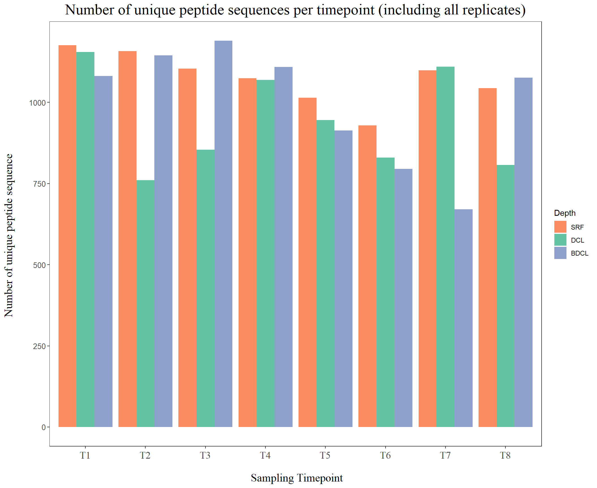
2. Number of accumulative uniq peptides (sequence): Does it saturate?
# read in combined table of 24 samples (Replicate B)
df_pep <- read.table("Replicate_ABC67_combined.tsv",sep='\t',header = T)
# get unique peptides per sample
dt <- df_pep %>% select(SampleID, Base.Peptide.Sequence) %>% unique()
# change SampleID into number
dt1 <- dt %>% select(SampleID) %>% unique() %>% arrange(SampleID) %>% arrange()
dt2 <- tibble::rownames_to_column(dt1,"depth")
# merge dt and dt2
dt_depth <- left_join(dt,dt2,by=c('SampleID'='SampleID'))
dim(dt_depth)[1] 38075 3# get cumulative number of unique peptides (https://stackoverflow.com/questions/15698399/cumulative-count-of-unique-values-in-r)
require(data.table)
dt_depth <- as.data.table(dt_depth)
setkey(dt_depth, "depth")
dt_depth[, Base.Peptide.Sequence := as.numeric(factor(Base.Peptide.Sequence, levels = unique(Base.Peptide.Sequence)))]
setkey(dt_depth, "depth", "Base.Peptide.Sequence")
dt.out <- dt_depth[J(unique(depth)), mult="last"]
dt.out[, Base.Peptide.Sequence := cummax(Base.Peptide.Sequence)]
# getting ready to make plot
df.out <- tibble::rowid_to_column(dt.out)
df.out2 <- df.out %>% select(rowid, Base.Peptide.Sequence) %>% rename(value=Base.Peptide.Sequence) ## 3326 unique peptides
# Making line plot
theme_set(theme_bw())
p1 <- ggplot(df.out2,aes(x = rowid,y = value)) + geom_line(col="magenta") + geom_point(color='maroon') +
ylab("Number of cumulative unique peptide sequence \n") +
xlab("\n Number of cumulative samples") +
# ylim(c(0,2200)) +
ggtitle("Number of cumulative unique peptide sequences \n")+
## adjust positions
theme(plot.title = element_text(size = 20,hjust = 0.5, family="serif")) +
theme(axis.title.x = element_text(size = 15,hjust = 0.5, family="serif")) +
theme(axis.title.y = element_text(size = 15,hjust = 0.5, family="serif")) +
theme(axis.text.x = element_text(hjust = 0.5, vjust=0.3,size=13, family="serif"))+
theme(axis.text.y = element_text(size=10))
# theme(panel.grid.major = element_blank())
# theme(panel.grid.minor = element_blank())
p1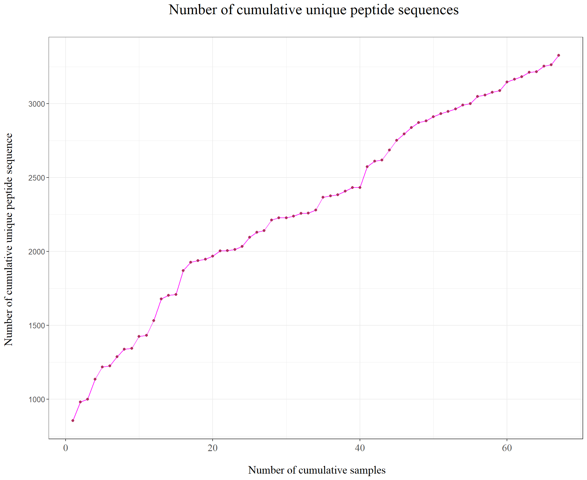 It seems to saturate as more samples are added.
3. Which Peptide_ids are present in all(almost) time points?
Make a histogram of x-axis being the # of time points present, y-axis being the number of Peptide_ids
We need 3 histogram for (1) Surface, (2) DCL, and (3) BDCL
# read in combined table of 24 samples (Replicate B)
df_pep <- read.table("Replicate_ABC67_combined.tsv",sep='\t',header = T)
# (1) Surface
colnames(df_pep) [1] "Spec_id" "Base.Peptide.Sequence"
[3] "log2.16O.18O.Ratio" "cent.log2.16O.18O.Ratio"
[5] "SampleID" "Index"
[7] "Cruise" "Station"
[9] "Isotope" "Replicate"
[11] "Time" "Depth"
[13] "SpectrumID" "ScanID"
[15] "Target." "Decoy."
[17] "Peptide_id" df_srf <- df_pep %>% filter(Depth == 'SRF') %>% select(Peptide_id, SampleID, Time, Depth) %>% unique() %>% arrange(Peptide_id)
# How many time points did it appear
(df_srf2 <- df_srf %>% group_by(Peptide_id) %>% summarize(Timepoints = n_distinct(Time)) %>% ungroup())# A tibble: 2,081 x 2
Peptide_id Timepoints
* <chr> <int>
1 Pep_1 8
2 Pep_10 8
3 Pep_100 8
4 Pep_1001 5
5 Pep_1003 4
6 Pep_1005 4
7 Pep_1006 4
8 Pep_1007 5
9 Pep_1008 4
10 Pep_1009 4
# ... with 2,071 more rows# Check if Pep_1 appeared in 8 time points
df_srf %>% filter(Peptide_id=="Pep_1004") # true 8 times[1] Peptide_id SampleID Time Depth
<0 rows> (or 0-length row.names)# Histogram
theme_set(theme_bw())
ggplot(df_srf2, aes(Timepoints)) + geom_bar() +
ylab("Number of peptides \n") +
xlab("\n Cumulative number of timepoints peptide are present") +
scale_x_continuous(breaks=seq(1,8,1))+
ggtitle("Distribution of number of timepoints each Peptide_id appears (Surface) \n")+
## adjust positions
theme(plot.title = element_text(size = 20,hjust = 0.5, family="serif")) +
theme(axis.title.x = element_text(size = 15,hjust = 0.5, family="serif")) +
theme(axis.title.y = element_text(size = 15,hjust = 0.5, family="serif")) +
theme(axis.text.x = element_text(hjust = 0.5, vjust=0.3,size=13, family="serif"))+
theme(axis.text.y = element_text(size=10)) # theme(panel.grid.major = element_blank())
# theme(panel.grid.minor = element_blank())
# Let's try to plot all of them at once
df_all <- df_pep %>% select(Peptide_id, SampleID, Time, Depth) %>% unique() %>% arrange(Peptide_id)
# How many time points did it appear
(df_all2 <- df_all %>% group_by(Peptide_id, Depth) %>% summarize(Timepoints = n_distinct(Time)) %>% ungroup())# A tibble: 6,104 x 3
Peptide_id Depth Timepoints
<chr> <chr> <int>
1 Pep_1 BDCL 8
2 Pep_1 DCL 8
3 Pep_1 SRF 8
4 Pep_10 BDCL 8
5 Pep_10 DCL 8
6 Pep_10 SRF 8
7 Pep_100 BDCL 8
8 Pep_100 DCL 8
9 Pep_100 SRF 8
10 Pep_1000 BDCL 5
# ... with 6,094 more rowsdf_all2$Depth <- factor(df_all2$Depth, levels = c('SRF','DCL','BDCL'))
# Histogram
ggplot(df_all2, aes(Timepoints)) + geom_bar(aes(fill=Depth), position='dodge') +
scale_fill_manual(values=cols) +
ylab("Number of peptides \n") +
xlab("\n Cumulative number of timepoints peptide are present") +
scale_x_continuous(breaks=seq(1,8,1))+
ggtitle("Distribution of number of timepoints each Peptide_id appears \n")+
## adjust positions
theme(plot.title = element_text(size = 20,hjust = 0.5, family="serif")) +
theme(axis.title.x = element_text(size = 15,hjust = 0.5, family="serif")) +
theme(axis.title.y = element_text(size = 15,hjust = 0.5, family="serif")) +
theme(axis.text.x = element_text(hjust = 0.5, vjust=0.3,size=13, family="serif"))+
theme(axis.text.y = element_text(size=10))
# theme(panel.grid.major = element_blank())
# theme(panel.grid.minor = element_blank())3.2. For the peptides that show up only in 1 time point
# filter peptides that appear only once
df_once <- df_all2 %>% filter(Timepoints ==1)
# innerjoin to get only the peptide_id from above (that appear once)
df_norep <- df_all %>% select(-SampleID) %>% unique() # get unique peptide_id per Sample (not replicate)
df_once2 <- inner_join(df_norep,df_once,by=c("Depth"="Depth","Peptide_id"="Peptide_id"))
df_once2$Depth <- factor(df_once2$Depth, levels = c('SRF','DCL','BDCL'))
# Histogram
theme_set(theme_bw())
ggplot(df_once2, aes(Time)) + geom_bar(aes(fill=Depth), position='dodge') +
scale_fill_manual(values=cols) +
ylab("Number of unique peptides \n") +
xlab("\n Sampling Timepoint") +
# scale_x_continuous(breaks=seq(1,8,1))+
ggtitle("For peptide_ids detected once, in what timepoint is it detected? \n")+
## adjust positions
theme(plot.title = element_text(size = 20,hjust = 0.5, family="serif")) +
theme(axis.title.x = element_text(size = 15,hjust = 0.5, family="serif")) +
theme(axis.title.y = element_text(size = 15,hjust = 0.5, family="serif")) +
theme(axis.text.x = element_text(hjust = 0.5, vjust=0.3,size=13, family="serif"))+
theme(axis.text.y = element_text(size=10))
# theme(panel.grid.major = element_blank())
# theme(panel.grid.minor = element_blank())In the surface and deep chlorophyll layer at T1 and T7, the numbers seem to surge.
This is when the sun is at its peak.
4. Plotting time series fluctuation for the peptides
First retrieve the log abundance_ratio value for all peptides (average over the same spec_id)
# (1) Get list of peptides that are present in 7 or 8 timepoints
df_all2_filt <- df_all2 %>% filter(Timepoints > 6) %>% unique()
# (2) Let's average the abundance_ratio for each unique peptide
df_int <- df_pep %>% select(Peptide_id, Spec_id, cent.log2.16O.18O.Ratio, SampleID, Time, Depth, Replicate) %>%
unique() %>% arrange(Peptide_id)
head(df_int) Peptide_id Spec_id cent.log2.16O.18O.Ratio SampleID Time Depth
1 Pep_1 BDCL_T1_A_31195 -0.3768094 BDCL_T1_A T1 BDCL
2 Pep_1 BDCL_T1_A_31179 -0.2659891 BDCL_T1_A T1 BDCL
3 Pep_1 BDCL_T1_A_31003 -0.4227962 BDCL_T1_A T1 BDCL
4 Pep_1 BDCL_T1_A_31022 -0.3675320 BDCL_T1_A T1 BDCL
5 Pep_1 BDCL_T1_A_31372 -0.3737250 BDCL_T1_A T1 BDCL
6 Pep_1 BDCL_T1_A_31355 -0.4533029 BDCL_T1_A T1 BDCL
Replicate
1 A
2 A
3 A
4 A
5 A
6 Adf_int %>% filter(Peptide_id=='Pep_1' & Time =='T1' & SampleID == 'BDCL_T1_A') Peptide_id Spec_id cent.log2.16O.18O.Ratio SampleID Time Depth
1 Pep_1 BDCL_T1_A_31195 -0.3768094 BDCL_T1_A T1 BDCL
2 Pep_1 BDCL_T1_A_31179 -0.2659891 BDCL_T1_A T1 BDCL
3 Pep_1 BDCL_T1_A_31003 -0.4227962 BDCL_T1_A T1 BDCL
4 Pep_1 BDCL_T1_A_31022 -0.3675320 BDCL_T1_A T1 BDCL
5 Pep_1 BDCL_T1_A_31372 -0.3737250 BDCL_T1_A T1 BDCL
6 Pep_1 BDCL_T1_A_31355 -0.4533029 BDCL_T1_A T1 BDCL
7 Pep_1 BDCL_T1_A_30845 0.1603187 BDCL_T1_A T1 BDCL
8 Pep_1 BDCL_T1_A_30832 0.2822996 BDCL_T1_A T1 BDCL
9 Pep_1 BDCL_T1_A_31549 -0.2180393 BDCL_T1_A T1 BDCL
10 Pep_1 BDCL_T1_A_31536 -0.1778131 BDCL_T1_A T1 BDCL
11 Pep_1 BDCL_T1_A_31789 -0.3197409 BDCL_T1_A T1 BDCL
12 Pep_1 BDCL_T1_A_32226 -0.4774925 BDCL_T1_A T1 BDCL
Replicate
1 A
2 A
3 A
4 A
5 A
6 A
7 A
8 A
9 A
10 A
11 A
12 A# first average the spectrum_id per sample
# important to make sure to take the mean of the log raio (instead of taking log2 after averaging the original value(2^x))
df_ave <- df_int %>% group_by(SampleID, Time, Depth, Replicate, Peptide_id) %>%
summarize(Mean_abundance_ratio=mean(cent.log2.16O.18O.Ratio),
SD_pep=sd(cent.log2.16O.18O.Ratio)) %>% ungroup()
head(df_ave)# A tibble: 6 x 7
SampleID Time Depth Replicate Peptide_id Mean_abundance_ratio SD_pep
<chr> <chr> <chr> <chr> <chr> <dbl> <dbl>
1 BDCL_T1_A T1 BDCL A Pep_1 -0.251 0.240
2 BDCL_T1_A T1 BDCL A Pep_10 0.282 0.257
3 BDCL_T1_A T1 BDCL A Pep_100 -0.230 0.0994
4 BDCL_T1_A T1 BDCL A Pep_1000 0.158 0.0991
5 BDCL_T1_A T1 BDCL A Pep_1001 0.430 NA
6 BDCL_T1_A T1 BDCL A Pep_1002 -0.289 0.0403dim(df_ave)[1] 38075 7df_ave %>% filter(Peptide_id=='Pep_1' & Time =='T1',Depth=="BDCL") # check# A tibble: 3 x 7
SampleID Time Depth Replicate Peptide_id Mean_abundance_ratio SD_pep
<chr> <chr> <chr> <chr> <chr> <dbl> <dbl>
1 BDCL_T1_A T1 BDCL A Pep_1 -0.251 0.240
2 BDCL_T1_B T1 BDCL B Pep_1 -0.0163 0.212
3 BDCL_T1_C T1 BDCL C Pep_1 0.506 0.277# Now, average and error by replicate
# see here for calculating error bar in log scale (https://faculty.washington.edu/stuve/log_error.pdf)
# but here we will not use the method in the link above
# calculate average and error bar for abundance_ratio
# SE calculated with Jake Waldbauer's method: sqrt(se(Mean_abundance_ratio)^2 +(mean(SD_pep))^2))
# standard error
se <- function(x) sd(x)/sqrt(length(x))
df_ave_rep <- df_ave %>% group_by(Time, Depth, Peptide_id) %>%
summarize(Ave_abundance_ratio=mean(Mean_abundance_ratio),
SE_abundance_ratio=sqrt((se(Mean_abundance_ratio))^2 +(mean(SD_pep))^2)) %>% ungroup()
head(df_ave_rep,10)# A tibble: 10 x 5
Time Depth Peptide_id Ave_abundance_ratio SE_abundance_ratio
<chr> <chr> <chr> <dbl> <dbl>
1 T1 BDCL Pep_1 0.0796 0.330
2 T1 BDCL Pep_10 0.310 0.268
3 T1 BDCL Pep_100 -0.0371 NA
4 T1 BDCL Pep_1000 0.158 NA
5 T1 BDCL Pep_1001 1.10 NA
6 T1 BDCL Pep_1002 -0.289 NA
7 T1 BDCL Pep_1003 -0.132 NA
8 T1 BDCL Pep_1004 0.123 NA
9 T1 BDCL Pep_1005 0.781 NA
10 T1 BDCL Pep_1006 -0.0480 NA # why is there no sd for Pep_1004?
df_ave %>% group_by(SampleID) %>% filter(Peptide_id=='Pep_1003') # there is only 1 sample for T1 BDCL # A tibble: 12 x 7
# Groups: SampleID [12]
SampleID Time Depth Replicate Peptide_id Mean_abundance_ratio SD_pep
<chr> <chr> <chr> <chr> <chr> <dbl> <dbl>
1 BDCL_T1_A T1 BDCL A Pep_1003 -0.132 NA
2 BDCL_T2_B T2 BDCL B Pep_1003 -0.144 NA
3 BDCL_T4_A T4 BDCL A Pep_1003 -0.319 NA
4 BDCL_T4_B T4 BDCL B Pep_1003 -0.0656 0.0977
5 BDCL_T5_A T5 BDCL A Pep_1003 -0.313 NA
6 BDCL_T7_B T7 BDCL B Pep_1003 0.0856 NA
7 BDCL_T8_A T8 BDCL A Pep_1003 -0.577 NA
8 DCL_T3_A T3 DCL A Pep_1003 -0.327 NA
9 SRF_T1_B T1 SRF B Pep_1003 -0.393 NA
10 SRF_T3_A T3 SRF A Pep_1003 -0.185 NA
11 SRF_T7_A T7 SRF A Pep_1003 -0.419 NA
12 SRF_T8_B T8 SRF B Pep_1003 -0.0548 0.0922df_ave_rep2 <- df_ave_rep %>% mutate(error_up=Ave_abundance_ratio+SE_abundance_ratio) %>%
mutate(error_down=Ave_abundance_ratio-SE_abundance_ratio)
head(df_ave_rep2)# A tibble: 6 x 7
Time Depth Peptide_id Ave_abundance_rat~ SE_abundance_ra~ error_up error_down
<chr> <chr> <chr> <dbl> <dbl> <dbl> <dbl>
1 T1 BDCL Pep_1 0.0796 0.330 0.410 -0.251
2 T1 BDCL Pep_10 0.310 0.268 0.578 0.0416
3 T1 BDCL Pep_100 -0.0371 NA NA NA
4 T1 BDCL Pep_1000 0.158 NA NA NA
5 T1 BDCL Pep_1001 1.10 NA NA NA
6 T1 BDCL Pep_1002 -0.289 NA NA NA # (3) import time metadata and merge
(df_time <- read.table('data/Time_metadata.txt', header=T, sep='\t')) timepoint date_time elapsed_hours
1 T1 6/26/2019 12:45:00 0
2 T2 6/26/2019 15:45:00 3
3 T3 6/26/2019 18:45:00 6
4 T4 6/26/2019 21:45:00 9
5 T5 6/27/2019 4:40:00 15
6 T6 6/27/2019 7:45:00 19
7 T7 6/27/2019 10:45:00 22
8 T8 6/27/2019 13:45:00 25df_time$date_time <- str_replace(df_time$date_time, "/2019"," ")
df_time$date_time <- str_replace(df_time$date_time, ":00$","")
# left_join with average data
df_ave2 <- df_ave_rep2 %>% left_join(df_time, by=c('Time'='timepoint'))
head(df_ave2)# A tibble: 6 x 9
Time Depth Peptide_id Ave_abundance_rat~ SE_abundance_ra~ error_up error_down
<chr> <chr> <chr> <dbl> <dbl> <dbl> <dbl>
1 T1 BDCL Pep_1 0.0796 0.330 0.410 -0.251
2 T1 BDCL Pep_10 0.310 0.268 0.578 0.0416
3 T1 BDCL Pep_100 -0.0371 NA NA NA
4 T1 BDCL Pep_1000 0.158 NA NA NA
5 T1 BDCL Pep_1001 1.10 NA NA NA
6 T1 BDCL Pep_1002 -0.289 NA NA NA
# ... with 2 more variables: date_time <chr>, elapsed_hours <int># only use peptides that appear 7 or 8 times
df_ave2 %>% select(Peptide_id) %>% unique() %>% dim() # 3233 peptides before[1] 3326 1df_filt78 <- inner_join(df_ave2, df_all2_filt, by=c('Peptide_id'='Peptide_id','Depth'='Depth'))
# inspecting if the inner join was successful
head(df_filt78)# A tibble: 6 x 10
Time Depth Peptide_id Ave_abundance_rat~ SE_abundance_ra~ error_up error_down
<chr> <chr> <chr> <dbl> <dbl> <dbl> <dbl>
1 T1 BDCL Pep_1 0.0796 0.330 0.410 -0.251
2 T1 BDCL Pep_10 0.310 0.268 0.578 0.0416
3 T1 BDCL Pep_100 -0.0371 NA NA NA
4 T1 BDCL Pep_101 0.214 0.149 0.363 0.0658
5 T1 BDCL Pep_102 0.191 0.191 0.382 -0.000815
6 T1 BDCL Pep_1024 0.448 NA NA NA
# ... with 3 more variables: date_time <chr>, elapsed_hours <int>,
# Timepoints <int>colnames(df_ave2)[1] "Time" "Depth" "Peptide_id"
[4] "Ave_abundance_ratio" "SE_abundance_ratio" "error_up"
[7] "error_down" "date_time" "elapsed_hours" colnames(df_time)[1] "timepoint" "date_time" "elapsed_hours"colnames(df_filt78) [1] "Time" "Depth" "Peptide_id"
[4] "Ave_abundance_ratio" "SE_abundance_ratio" "error_up"
[7] "error_down" "date_time" "elapsed_hours"
[10] "Timepoints" df_filt78 %>% select(Peptide_id) %>% unique() %>% dim() # 841 peptides for peptides in 7 or 8 timepoints[1] 825 1df_filt78$Depth <- factor(df_filt78$Depth, levels = c('SRF','DCL','BDCL'))
# get only 8 ones
df_filt8 <- df_filt78 %>% filter(Timepoints > 7)
df_filt8 %>% select(Peptide_id) %>% unique() %>% dim() # 661 peptides for peptides in all 8 timepoints[1] 647 1df_filt8$Depth <- factor(df_filt8$Depth, levels = c('SRF','DCL','BDCL'))
# get only 7 ones
df_filt7 <- df_filt78 %>% filter(Timepoints == 7)
df_filt7 %>% select(Peptide_id) %>% unique() %>% dim() # 356 peptides for peptides in 7 timepoints[1] 356 1df_filt7$Depth <- factor(df_filt7$Depth, levels = c('SRF','DCL','BDCL'))Now I do it differently: just + and - the standard error. This is how I used to derive the error bar before (https://faculty.washington.edu/stuve/log_error.pdf) log scale error bar: d(log2y)=1/log2 * (dy / y) df_ave_rep2 <- df_ave_rep %>% mutate(ave_abundance_ratio = 2^Ave_abundance_ratio) %>% mutate(rel_error = sd_abundance_ratio/ave_abundance_ratio) %>% mutate(log2_sd_abundance_ratio = (1/log(2))*rel_error) %>% mutate(error_up=Ave_abundance_ratio+log2_sd_abundance_ratio) %>% mutate(error_down=Ave_abundance_ratio-log2_sd_abundance_ratio)
Plot for peptides present in 7 or 8 timepoints
# (4) Plot the scatter plot with error bars
theme_set(theme_bw())
ggplot(df_filt78, aes(x=elapsed_hours,y=Ave_abundance_ratio, color=Depth, group=interaction(Peptide_id,Depth))) +
geom_point(size=2, shape=21) +
geom_line()+
geom_errorbar(aes(ymin=error_down, ymax=error_up), width=.2, position=position_dodge(.9))+
scale_color_manual(values=cols) +
ylab("Mean protein abundance ratio (log2(16O/18O)) \n") +
xlab("\n Time of day on June 26-27 2019 (Daylight 05:17-20:30)") +
scale_x_continuous(breaks=df_time$elapsed_hours,labels =c(df_time$date_time))+
ggtitle("Time series abundance_ratio of peptide_id \n")+
## adjust positions
theme(plot.title = element_text(size = 20,hjust = 0.5, family="serif")) +
theme(axis.title.x = element_text(size = 15,hjust = 0.5, family="serif")) +
theme(axis.title.y = element_text(size = 15,hjust = 0.5, family="serif")) +
theme(axis.text.x = element_text(hjust = 0.9, vjust=0.9,angle=40,size=13, family="serif"))+
theme(axis.text.y = element_text(size=10)) +
annotate("rect", xmin = 7.75, xmax = 16.53, ymin = -Inf, ymax = Inf, alpha = .2)
# geom_rect(aes(xmin=7.75, xmax=16.53, ymin=0, ymax=Inf))
# theme(panel.grid.major = element_blank()) +
# theme(panel.grid.minor = element_blank())without error bars
theme_set(theme_bw())
ggplot(df_filt78, aes(x=elapsed_hours,y=Ave_abundance_ratio, color=Depth, group=interaction(Peptide_id,Depth))) +
geom_point(size=2, shape=21) +
geom_line()+
# geom_errorbar(aes(ymin=error_down, ymax=error_up), width=.2, position=position_dodge(.9))+
scale_color_manual(values=cols) +
ylab("Mean protein abundance ratio (log2(16O/18O)) \n") +
xlab("\n Time of day on June 26-27 2019 (Daylight 05:17-20:30)") +
scale_x_continuous(breaks=df_time$elapsed_hours,labels =c(df_time$date_time))+
ggtitle("Time series abundance_ratio of peptide_id \n")+
## adjust positions
theme(plot.title = element_text(size = 20,hjust = 0.5, family="serif")) +
theme(axis.title.x = element_text(size = 15,hjust = 0.5, family="serif")) +
theme(axis.title.y = element_text(size = 15,hjust = 0.5, family="serif")) +
theme(axis.text.x = element_text(hjust = 0.9, vjust=0.9,angle=40,size=13, family="serif"))+
theme(axis.text.y = element_text(size=10)) +
annotate("rect", xmin = 7.75, xmax = 16.53, ymin = -Inf, ymax = Inf, alpha = .2)
4.1. Surface(SRF)
# color code
# 1. Surface(orange): #fc8d62
# 2. DCL(green): #66c2a5
# 3. BDCL(blue): #8da0cb
color_vec <- c('#fc8d62','#66c2a5','#8da0cb')
depth_vec <- c('SRF','DCL','BDCL')
time_series_1depth_woError <- function(df_filt78, depth){
theme_set(theme_bw())
# filter depth
df_filt78_s <- df_filt78 %>% filter(Depth == depth_vec[depth])
ggplot(df_filt78_s, aes(x=elapsed_hours,y=Ave_abundance_ratio, group=Peptide_id)) +
geom_point(size=2, shape=21, color=color_vec[depth]) +
geom_line(color= color_vec[depth])+
ylab("Mean protein abundance ratio (log2(16O/18O)) \n") +
xlab("\n Time of day on June 26-27 2019 (Daylight 05:17-20:30)") +
scale_x_continuous(breaks=df_time$elapsed_hours,labels =c(df_time$date_time))+
ggtitle(paste0("Time series abundance_ratio of peptide_id"," (",depth_vec[depth],")","\n"))+
## adjust positions
theme(plot.title = element_text(size = 20,hjust = 0.5, family="serif")) +
theme(axis.title.x = element_text(size = 15,hjust = 0.5, family="serif")) +
theme(axis.title.y = element_text(size = 15,hjust = 0.5, family="serif")) +
theme(axis.text.x = element_text(hjust = 0.9, vjust=0.9,angle=40,size=13, family="serif"))+
theme(axis.text.y = element_text(size=10)) +
annotate("rect", xmin = 7.75, xmax = 16.53, ymin = -Inf, ymax = Inf, alpha = .2)
# theme(panel.grid.major = element_blank()) +
# theme(panel.grid.minor = element_blank())
}
time_series_1depth_wError <- function(df_filt78, depth){
theme_set(theme_bw())
# filter depth
df_filt78_s <- df_filt78 %>% filter(Depth == depth_vec[depth])
ggplot(df_filt78_s, aes(x=elapsed_hours,y=Ave_abundance_ratio, group=Peptide_id)) +
geom_point(size=2, shape=21, color=color_vec[depth]) +
geom_line(color= color_vec[depth])+
geom_errorbar(aes(ymin=error_down, ymax=error_up), width=.05, position=position_dodge(.2),color='red')+
ylab("Mean protein abundance ratio (log2(16O/18O)) \n") +
xlab("\n Time of day on June 26-27 2019 (Daylight 05:17-20:30)") +
scale_x_continuous(breaks=df_time$elapsed_hours,labels =c(df_time$date_time))+
ggtitle(paste0("Time series abundance_ratio of peptide_id"," (",depth_vec[depth],")","\n"))+
## adjust positions
theme(plot.title = element_text(size = 20,hjust = 0.5, family="serif")) +
theme(axis.title.x = element_text(size = 15,hjust = 0.5, family="serif")) +
theme(axis.title.y = element_text(size = 15,hjust = 0.5, family="serif")) +
theme(axis.text.x = element_text(hjust = 0.9, vjust=0.9,angle=40,size=13, family="serif"))+
theme(axis.text.y = element_text(size=10)) +
annotate("rect", xmin = 7.75, xmax = 16.53, ymin = -Inf, ymax = Inf, alpha = .2)
# theme(panel.grid.major = element_blank()) +
# theme(panel.grid.minor = element_blank())
}
# when we use all 7, 8 appearance cases
time_series_1depth_woError(df_filt78,1)
time_series_1depth_wError(df_filt78,1)# when we use only 8 appearance cases
time_series_1depth_woError(df_filt8,1)
time_series_1depth_wError(df_filt8,1)
# when we use only 7 appearance cases
time_series_1depth_woError(df_filt7,1)
time_series_1depth_wError(df_filt7,1)
4.2. Deep Chlorophyll layer (DCL)
# when we use all 7, 8 appearance cases
time_series_1depth_woError(df_filt78,2)
time_series_1depth_wError(df_filt78,2)
# when we use only 8 appearance cases
time_series_1depth_woError(df_filt8,2)
time_series_1depth_wError(df_filt8,2)
# when we use only 7 appearance cases
time_series_1depth_woError(df_filt7,2)
time_series_1depth_wError(df_filt7,2)
4.3. Below Deep Chlorophyll layer (BDCL)
# when we use all 7, 8 appearance cases
time_series_1depth_woError(df_filt78,3)
time_series_1depth_wError(df_filt78,3)
# when we use only 8 appearance cases
time_series_1depth_woError(df_filt8,3)
time_series_1depth_wError(df_filt8,3)
# when we use only 7 appearance cases
time_series_1depth_woError(df_filt7,3)
time_series_1depth_wError(df_filt7,3)
5. Ordination analysis
For time series clustering with R, the first step is to work out an appropriate distance/similarity metric, and then, at the second step, use existing clustering techniques, such as k-means, hierarchical clustering, density-based clustering or subspace clustering, to find clustering structures. (http://www.rdatamining.com/examples/time-series-clustering-classification)
5.1. Hierarchical clustering using Dynamic time warping distance
Dynamic Time Warping (DTW) finds optimal alignment between two time series, and DTW distance is used as a distance metric in the example below. (http://www.rdatamining.com/examples/time-series-clustering-classification)
# let's try cluster our time series data
colnames(df_filt8) [1] "Time" "Depth" "Peptide_id"
[4] "Ave_abundance_ratio" "SE_abundance_ratio" "error_up"
[7] "error_down" "date_time" "elapsed_hours"
[10] "Timepoints" df_8 <- df_filt8 %>% filter(Depth=='SRF') %>% select(Peptide_id,Time,Ave_abundance_ratio)
# reshape the dataframe with timepoints
library(maditr)
v_names <- c("T1","T2","T3","T4","T5","T6","T7","T8")
df_8$Time <- factor(df_8$Time, levels=v_names)
dc_8 <- dcast(df_8, Peptide_id ~ Time, value.var = "Ave_abundance_ratio")
# make Peptide_id more simpler (Pep_1 -> 1)
dc_8$Peptide_id <- str_replace(dc_8$Peptide_id,"Pep_","P.")
# make first column into row name
dc_8 <- tibble::column_to_rownames(dc_8, var="Peptide_id")
# DTW distances
library(dtw)
any(is.na(dc_8)) # False: there is no NA in the table[1] FALSEdistMatrix <- dist(dc_8, method="DTW")
hc <- hclust(distMatrix, method="average")
plot(hc, cex=0.7, xlab='Hierarchical clustering of Distance(DTW) Matrix')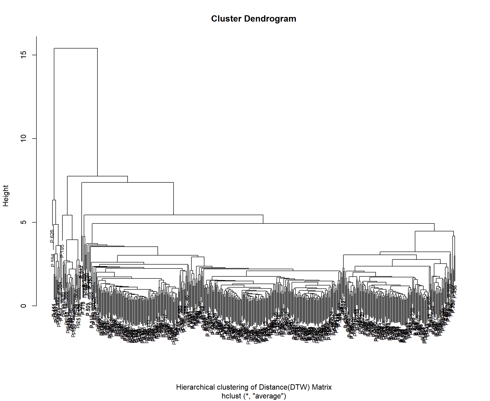
Draw the particular small cluster in the time series plot
# function for plotting cluster of piptides
time_series_clust_wError <- function(df_filt78, depth, clust1){
theme_set(theme_bw())
# filter depth
df_filt78_s <- df_filt78 %>% filter(Depth == depth_vec[depth]) %>% filter(Peptide_id %in% clust1)
ggplot(df_filt78_s, aes(x=elapsed_hours,y=Ave_abundance_ratio, group=Peptide_id)) +
geom_point(size=2, shape=21, color=color_vec[depth]) +
geom_line(color= color_vec[depth])+
geom_errorbar(aes(ymin=error_down, ymax=error_up), width=.05, position=position_dodge(.2),color='red')+
ylab("Mean protein abundance ratio (log2(16O/18O)) \n") +
xlab("\n Time of day on June 26-27 2019 (Daylight 05:17-20:30)") +
scale_x_continuous(breaks=df_time$elapsed_hours,labels =c(df_time$date_time))+
ggtitle(paste0("Time series abundance_ratio of peptide_id"," (",depth_vec[depth],")","\n"))+
## adjust positions
theme(plot.title = element_text(size = 20,hjust = 0.5, family="serif")) +
theme(axis.title.x = element_text(size = 15,hjust = 0.5, family="serif")) +
theme(axis.title.y = element_text(size = 15,hjust = 0.5, family="serif")) +
theme(axis.text.x = element_text(hjust = 0.9, vjust=0.9,angle=40,size=13, family="serif"))+
theme(axis.text.y = element_text(size=10)) +
annotate("rect", xmin = 7.75, xmax = 16.53, ymin = -Inf, ymax = Inf, alpha = .2)
# theme(panel.grid.major = element_blank()) +
# theme(panel.grid.minor = element_blank())
}
# cluster1 (outgroup-like)
clust1 <- c('632',"596","443","453","522","153","851","493","50","574","584","402","813")
clust1 <- str_replace(clust1,"^","Pep_") # make Peptide_id
time_series_clust_wError(df_filt8, 1, clust1)
# cluster2
clust2 <- c("197","78","562","112","87","310","207", "47","319","91","289","82","697","441","142","191", "34","105","426","882","8","18","5","132","327")
clust2 <- str_replace(clust2,"^","Pep_") # make Peptide_id
time_series_clust_wError(df_filt8, 1, clust2)
5.2. Principal coordinate analysis (ordination plot, PCoA) with DTW distance
Use the DTW distance matrix to plot PCoA
# Use the
# Transform distMatrix into matrix A
distmat <- as(distMatrix, "matrix")
dim(distmat)[1] 532 532A <- -1/2*distmat^2
dim(A)[1] 532 532# Scaling/centering of Matrix A
RowM <- rowMeans(A)
ColM <- colMeans(A)
M <- mean(A)
Delta <- A
for (i in 1:dim(A)[1]){
for (j in 1:dim(A)[2]) {
Delta[i,j] <- Delta[i,j] - RowM[i] - ColM[j] + M
}
}
# Compute the eigenvalues and eigenvectors of Delta
Eigen <- eigen(Delta)
# SEE YOU GET 5 EIGENVALUES (nrow = ncol of sqare distance matrix)
# Scale the eigenvectors
FirstEigenvector <- Eigen$vectors[,1]
FirstEigenvalue <- Eigen$values[1]
SecondEigenvector <- Eigen$vectors[,2]
SecondEigenvalue <- Eigen$values[2]
PrincipalCoords <- data.frame(First = FirstEigenvector*sqrt(FirstEigenvalue),
Sedond = SecondEigenvector * sqrt(SecondEigenvalue))
# we can take a shortcut instead: cmdScale or pco is now equal your PrincipalCoords (https://rstudio-pubs-static.s3.amazonaws.com/68544_06343669257d4f35aaca449f9ff1e6f7.html, https://genomicsclass.github.io/book/pages/mds.html)
require(labdsv)
pco_pep <- pco(distmat, k =2)
# pco_pep2 <- cmdscale(distmat, k =2)
# cmdscale(distmat, 2, eig=TRUE)$GOF
# plot PCoA without peptide_id labels
ggplot(as.data.frame(pco_pep$points), aes(x = V1, y = V2, label = row.names(as.data.frame(pco_pep$points)))) +
theme(plot.title = element_text(size = 20,hjust = 0.5, face="bold")) +
geom_point(size = 4, color='pink',alpha=0.7)+
xlab(paste0('\n PCoA1', " (explained variance: ",round(pco_pep$GOF[1],3)*100,"%)"))+
ylab(paste0("PCoA2"," (explained variance: ",round(pco_pep$GOF[2]-pco_pep$GOF[1],3)*100,"%) \n")) +
ggtitle("Peptide ordination PCoA plot (DTW distance) \n") +
## adjust positions
guides(fill = guide_legend(ncol = 4,reverse = T))+
theme(legend.position="bottom") +
theme(plot.title = element_text(size = 20,hjust = 0.5, face='bold')) +
theme(axis.title.x = element_text(size = 15,hjust = 0.5, face='bold')) +
theme(axis.title.y = element_text(size = 13,hjust = 0.5, face='bold')) +
theme(axis.text.x = element_text(angle = 90, hjust = 0.95,face='bold', vjust=0.4,size=15))+
theme(axis.text.y = element_text(size=15, face='bold'))
# plot PCoA with peptide_id labels
library(ggrepel)
PCoA_1 <- ggplot(as.data.frame(pco_pep$points), aes(x = V1, y = V2, label = row.names(as.data.frame(pco_pep$points)))) +
theme(plot.title = element_text(size = 20,hjust = 0.5, face="bold")) +
geom_point(size = 4, color='pink',alpha=0.7)+
xlab(paste0('\n PCoA1', " (explained variance: ",round(pco_pep$GOF[1],3)*100,"%)"))+
ylab(paste0("PCoA2"," (explained variance: ",round(pco_pep$GOF[2]-pco_pep$GOF[1],3)*100,"%) \n")) +
ggtitle("Peptide ordination PCoA plot (DTW distance) \n") +
## adjust positions
guides(fill = guide_legend(ncol = 4,reverse = T))+
theme(legend.position="bottom") +
theme(plot.title = element_text(size = 20,hjust = 0.5, face='bold')) +
theme(axis.title.x = element_text(size = 15,hjust = 0.5, face='bold')) +
theme(axis.title.y = element_text(size = 15,hjust = 0.5, face='bold')) +
theme(axis.text.x = element_text(angle = 90, hjust = 0.95,face='bold', vjust=0.4,size=15))+
theme(axis.text.y = element_text(size=15, face='bold')) +
ggrepel::geom_label_repel()
# theme(panel.grid.major = element_blank()) +
# theme(panel.grid.minor = element_blank(), panel.background=element_blank(), plot.background=element_blank())
PCoA_1
5.3. Ordination analysis by samples (PCA, Principal component analysis)
5.3.1. Intensity based
# make the matrix by reshaping dataframe
library(maditr)
dim(df_ave)[1] 38075 7dc_ave <- dcast(df_ave, SampleID ~ Peptide_id, value.var = "Mean_abundance_ratio")
dim(dc_ave)[1] 67 3327# names(dc_ave)
rownames(dc_ave) [1] "1" "2" "3" "4" "5" "6" "7" "8" "9" "10" "11" "12" "13" "14" "15"
[16] "16" "17" "18" "19" "20" "21" "22" "23" "24" "25" "26" "27" "28" "29" "30"
[31] "31" "32" "33" "34" "35" "36" "37" "38" "39" "40" "41" "42" "43" "44" "45"
[46] "46" "47" "48" "49" "50" "51" "52" "53" "54" "55" "56" "57" "58" "59" "60"
[61] "61" "62" "63" "64" "65" "66" "67"# make Peptide_id more simpler (Pep_1 -> P.1)
names(dc_ave) <- str_replace(names(dc_ave),"Pep_","P.")
# make first column into row name
dc_ave <- tibble::column_to_rownames(dc_ave, var="SampleID")
dim(dc_ave) # 67 samples (row) x 3366 peptides (columns)[1] 67 3326# First, the typical principal component analysis on the samples would be to transpose the data such that the samples are rows of the data matrix. The prcomp function can be used to return the principal components and other variables.(https://genomicsclass.github.io/book/pages/pca_svd.html)
# pc <- prcomp(dc_ave) # due to NA this is not working
# how should we change NA in the matrix?
any(is.na(dc_ave))[1] TRUEsum(is.na(dc_ave)) [1] 184767dim(dc_ave)[1] 67 3326# let's replace na into minimum value for each sample
dc_namin <- dc_ave
for (i in 1:dim(dc_ave)[1]){
rowMin <- (min(dc_ave[i,] ,na.rm=T))
# print(rowMin)
for (j in 1:dim(dc_ave)[2]) {
if (is.na(dc_namin[i,j])){
dc_namin[i,j] <- rowMin
# print(dc_namin[i,j])
}
}
}
sum(is.na(dc_namin)) # 0 mean success[1] 0dim(dc_namin)[1] 67 3326# PCA with prcomp
pc <- prcomp(dc_namin)
eigs <- pc$sdev^2
# variance explained
eigs[1] / sum(eigs) # pc1[1] 0.5522608eigs[2] / sum(eigs) # pc2[1] 0.0732766# First, a new dataframe should be created, with the information of sample-group. (http://huboqiang.cn/2016/03/03/RscatterPlotPCA)
df_out <- as.data.frame(pc$x)
df_out$depth <- sapply( strsplit(as.character(row.names(df_out)), "_"), "[[", 1 )
df_out$time <- sapply( strsplit(as.character(row.names(df_out)), "_"), "[[", 2 )
df_out$time <- as.numeric(str_replace(df_out$time, "T",""))
df_out$time <- factor(df_out$time,levels=1L:8L)
df_out$rep <- sapply( strsplit(as.character(row.names(df_out)), "_"), "[[", 3 )
df_out$depth <- factor(df_out$depth, levels=depth_vec)
head(df_out) PC1 PC2 PC3 PC4 PC5 PC6
BDCL_T1_A -75.94593 37.9927435 -27.0094238 3.222509 -24.7208756 6.1632182
BDCL_T1_B 62.59356 0.7851508 -2.5600552 -11.018107 -1.0812059 7.8852354
BDCL_T1_C -100.12403 -51.8527183 -18.0224691 10.898364 -0.9626707 2.4324892
BDCL_T2_A -60.31832 22.2401288 -27.0697148 3.964419 -10.6096179 -0.3162436
BDCL_T2_B 26.92260 10.0275832 0.3421703 -34.232970 -7.4177188 2.1921519
BDCL_T3_A -15.78424 31.5483250 -28.1251765 -2.911994 -8.3778559 -10.8868806
PC7 PC8 PC9 PC10 PC11 PC12
BDCL_T1_A 20.3433059 -9.4547427 11.8890174 -2.8557562 5.550007 -65.672934
BDCL_T1_B -0.2749008 3.3291155 2.6293398 0.6293048 3.292496 -1.141662
BDCL_T1_C 2.2129491 0.3246247 -1.3303326 -1.7604769 1.002907 -2.673807
BDCL_T2_A 11.5447599 10.6616917 -2.5106653 10.7054700 3.340870 -2.920682
BDCL_T2_B 2.2457819 0.7706460 -11.1261334 2.3461308 5.597861 2.268326
BDCL_T3_A 17.0282322 0.7917317 -0.1586135 10.1256750 3.201731 -6.388425
PC13 PC14 PC15 PC16 PC17 PC18
BDCL_T1_A 22.5363918 -17.4346007 0.2299763 -0.8648686 0.5225524 9.0709925
BDCL_T1_B 0.9219135 -1.2942777 0.3333902 -0.8791636 2.2793322 0.5509936
BDCL_T1_C -6.1490502 0.5952487 1.6208270 7.5689164 -2.2099150 -0.5821176
BDCL_T2_A -14.9567486 40.0440251 -5.7054975 -3.9397409 9.3278989 -13.4947123
BDCL_T2_B -5.9111025 -8.3223931 0.2172794 11.1530378 5.4716171 4.4110776
BDCL_T3_A -5.6680674 17.9886474 -5.5959072 16.9788570 -7.7918240 -8.5901381
PC19 PC20 PC21 PC22 PC23 PC24
BDCL_T1_A -2.6984292 7.8273671 -4.866529 4.064694 2.122927 0.6420234
BDCL_T1_B -0.1367538 2.8896091 -4.461096 -1.186181 -5.170833 -0.6425582
BDCL_T1_C -1.0640058 -0.3116614 -4.102325 -2.125220 -4.425695 2.8479980
BDCL_T2_A 11.8793287 41.3967976 1.321103 2.607499 3.380879 -1.6958400
BDCL_T2_B 8.1593389 7.0995431 9.640605 5.567227 -18.021992 -20.0205798
BDCL_T3_A 38.7770730 -35.4453847 -5.074163 -1.483325 -10.924465 4.9590082
PC25 PC26 PC27 PC28 PC29 PC30
BDCL_T1_A 0.4388989 -1.829844 -1.673116 1.079661 0.9347509 1.032438
BDCL_T1_B -3.7560966 -1.347878 -3.277737 1.504528 2.6284469 -1.247258
BDCL_T1_C -1.0629066 13.614845 7.257441 -17.016113 -7.7148916 1.865829
BDCL_T2_A -4.6630726 6.480254 2.943234 5.464882 6.8531516 -2.390038
BDCL_T2_B -3.9260124 -1.449327 -3.948301 -18.671442 -9.5095758 25.938364
BDCL_T3_A 2.8822990 -4.337145 -1.569535 3.425947 0.7736917 -2.286605
PC31 PC32 PC33 PC34 PC35 PC36
BDCL_T1_A 0.6012556 -0.903324980 -1.554736 1.778292 0.37010270 1.4153983
BDCL_T1_B -0.8390781 6.520318665 -1.800194 -1.288901 0.34568488 0.3861330
BDCL_T1_C -14.9696121 2.505714092 -7.116301 -8.456148 -15.03128058 7.5321964
BDCL_T2_A 0.2726992 -0.009714591 1.285966 3.872461 -0.17221708 1.5702072
BDCL_T2_B 14.9126033 2.161940573 10.215587 3.110659 -0.06108869 6.9639298
BDCL_T3_A 1.2468304 -4.386914724 -5.579574 1.376406 0.62023281 -0.5485439
PC37 PC38 PC39 PC40 PC41
BDCL_T1_A -0.2218491 -0.12653838 -0.04482264 -0.07698764 -0.276512774
BDCL_T1_B 0.3434171 -6.91683384 8.12199429 -1.67797361 1.291893794
BDCL_T1_C 2.9051419 -23.05428310 -5.16284362 7.52000444 -2.280633603
BDCL_T2_A 3.2606964 -0.03742765 0.06335441 -1.04661851 0.003771383
BDCL_T2_B 1.9238009 -0.49619598 0.43029187 -4.20644978 1.486623000
BDCL_T3_A 1.5027145 -0.15231060 0.91741056 -1.01850860 2.022298592
PC42 PC43 PC44 PC45 PC46 PC47
BDCL_T1_A -0.1867721 -0.1780317 0.30961155 0.96599356 -0.8869038 -0.5010555
BDCL_T1_B -1.2984051 -4.9617742 -11.31672253 -15.07774403 22.2195204 5.1007625
BDCL_T1_C 7.0067290 -0.7597351 1.91697795 0.22512304 -0.1436175 -0.2742833
BDCL_T2_A 0.7299459 0.2478946 -0.83804634 0.03689136 -2.0922832 0.5652930
BDCL_T2_B -2.3502492 1.2236662 0.83275116 1.44939154 -1.6320393 0.4670254
BDCL_T3_A 0.4531396 0.1125119 -0.01944367 -0.57897695 -0.7168882 -0.2348910
PC48 PC49 PC50 PC51 PC52 PC53
BDCL_T1_A -0.52962942 0.3567535 0.26843673 0.5345035 -0.32725224 -0.4529685
BDCL_T1_B 8.78096790 -3.7618036 6.26343960 -1.3135231 4.61841634 -0.8302299
BDCL_T1_C -2.48231431 0.7702683 0.54681233 -0.3107837 0.36275817 -0.1552845
BDCL_T2_A 0.15538196 0.7137467 0.08134916 0.5363763 -0.37288873 -0.9074100
BDCL_T2_B 0.02472393 -1.1027240 -0.82132415 -0.9548991 0.75176161 0.5681443
BDCL_T3_A 0.89766305 0.4388522 0.12731546 0.7060945 0.05751835 -0.4539482
PC54 PC55 PC56 PC57 PC58
BDCL_T1_A 0.21313177 0.01860143 0.12629026 -0.01083112 -0.001040182
BDCL_T1_B -1.25016093 0.24320762 0.77188725 0.15705833 0.079743957
BDCL_T1_C 0.45629638 0.25606616 -1.06269699 -0.25840664 0.184788581
BDCL_T2_A -0.38263360 0.19907792 -0.06351619 -0.05013107 -0.075706024
BDCL_T2_B 0.11665872 0.69779445 0.03964620 0.30088637 -0.029917512
BDCL_T3_A 0.08058751 0.28185986 0.12566260 0.17626231 0.129654539
PC59 PC60 PC61 PC62 PC63
BDCL_T1_A -0.040747968 0.008618858 0.002476013 0.01022173 0.021822752
BDCL_T1_B 0.149726311 0.011578875 0.114156569 -0.05109114 0.072720433
BDCL_T1_C 0.033176785 -0.252549848 -0.232397158 0.07346271 0.078640738
BDCL_T2_A -0.003702595 -0.077425074 -0.018327178 -0.01096977 0.009099275
BDCL_T2_B -0.007865225 0.035505128 0.009161366 -0.01437541 0.029630132
BDCL_T3_A -0.007947880 0.024191945 0.014472627 -0.02525830 -0.018214133
PC64 PC65 PC66 PC67 depth time rep
BDCL_T1_A 0.013849275 -0.0094346344 -0.005726074 8.095954e-14 BDCL 1 A
BDCL_T1_B 0.008757403 0.0469849421 0.021172677 -4.431134e-14 BDCL 1 B
BDCL_T1_C 0.141174239 -0.1027271968 -0.030400250 -1.750891e-13 BDCL 1 C
BDCL_T2_A 0.015555922 -0.0062803266 -0.002314967 3.742839e-14 BDCL 2 A
BDCL_T2_B -0.023806159 0.0362324195 -0.005561233 -2.458190e-14 BDCL 2 B
BDCL_T3_A 0.017771652 -0.0009317609 0.007948889 5.656586e-14 BDCL 3 A# plot PCA with timepoint labels
ggplot(df_out,aes(x=PC1,y=PC2,label = time))+
theme(plot.title = element_text(size = 20,hjust = 0.5, face="bold")) +
geom_point(size = 5, alpha=0.9, aes(col= depth))+
scale_fill_manual(values=cols) +
xlab(paste0('\n PC1', " (explained variance: ",round(eigs[1] / sum(eigs),3)*100,"%)"))+
ylab(paste0("PC2"," (explained variance: ",round(eigs[2] / sum(eigs),3)*100,"%) \n")) +
ggtitle("Principle component analysis plot for samples \n") +
## adjust positions
guides(fill = guide_legend(ncol = 4,reverse = T))+
theme(legend.position="bottom") +
theme(plot.title = element_text(size = 20,hjust = 0.5, face='bold')) +
theme(axis.title.x = element_text(size = 15,hjust = 0.5, face='bold')) +
theme(axis.title.y = element_text(size = 15,hjust = 0.5, face='bold')) +
theme(axis.text.x = element_text(angle = 90, hjust = 0.95,face='bold', vjust=0.4,size=15))+
theme(axis.text.y = element_text(size=15, face='bold'))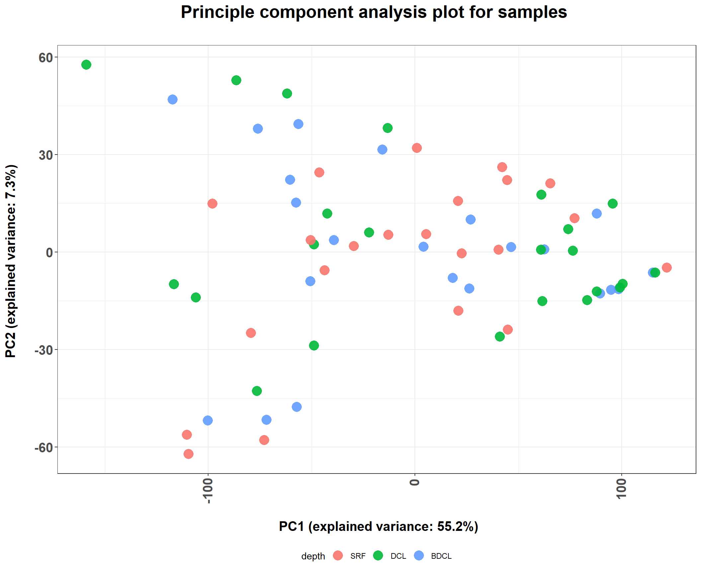
# plot PCA with timepoint labels
ggplot(df_out,aes(x=PC1,y=PC2,label = time))+
theme(plot.title = element_text(size = 20,hjust = 0.5, face="bold")) +
geom_point(size = 4.5, alpha=0.9, aes(col= depth))+
scale_fill_manual(values=cols) +
xlab(paste0('\n PC1', " (explained variance: ",round(eigs[1] / sum(eigs),3)*100,"%)"))+
ylab(paste0("PC2"," (explained variance: ",round(eigs[2] / sum(eigs),3)*100,"%) \n")) +
ggtitle("Principle component analysis plot for samples \n") +
## adjust positions
guides(fill = guide_legend(ncol = 4,reverse = T))+
theme(legend.position="bottom") +
theme(plot.title = element_text(size = 20,hjust = 0.5, face='bold')) +
theme(axis.title.x = element_text(size = 15,hjust = 0.5, face='bold')) +
theme(axis.title.y = element_text(size = 15,hjust = 0.5, face='bold')) +
theme(axis.text.x = element_text(angle = 90, hjust = 0.95,face='bold', vjust=0.4,size=15))+
theme(axis.text.y = element_text(size=15, face='bold'))+
ggrepel::geom_label_repel()
# plot PCA with timepoint gradient
ggplot(df_out,aes(x=PC1,y=PC2,alpha = time))+
theme(plot.title = element_text(size = 20,hjust = 0.5, face="bold")) +
geom_point(size = 5, stroke=1.2, aes(col=depth))+
# geom_point(size = 5,stroke = 1.3, shape=21, aes(fill=depth))+
scale_fill_manual(values=cols) +
scale_alpha_manual(values=seq(0.3,1,length.out = 8)) +
xlab(paste0('\n PC1', " (explained variance: ",round(eigs[1] / sum(eigs),3)*100,"%)"))+
ylab(paste0("PC2"," (explained variance: ",round(eigs[2] / sum(eigs),3)*100,"%) \n")) +
ggtitle("Principle component analysis plot for samples \n") +
## adjust positions
guides(fill = guide_legend(ncol = 4,reverse = T))+
theme(legend.position="bottom") +
theme(plot.title = element_text(size = 20,hjust = 0.5, face='bold')) +
theme(axis.title.x = element_text(size = 15,hjust = 0.5, face='bold')) +
theme(axis.title.y = element_text(size = 15,hjust = 0.5, face='bold')) +
theme(axis.text.x = element_text(angle = 90, hjust = 0.95,face='bold', vjust=0.4,size=15))+
theme(axis.text.y = element_text(size=15, face='bold'))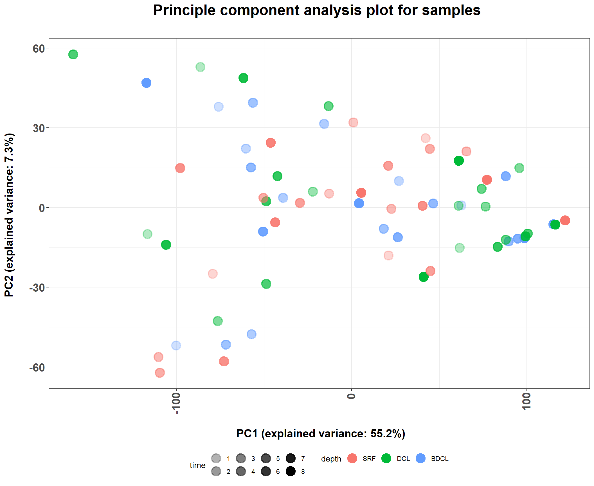
# ggrepel::geom_label_repel()
# plot PCA with different shape for depth
# brewing color palette
purple_yellow<-colorRampPalette(colors=c("#6F068C",'#CF2525','#E3D445'))(8)
library(scales)
show_col(purple_yellow)
ggplot(df_out,aes(x=PC1,y=PC2))+
theme(plot.title = element_text(size = 20,hjust = 0.5, face="bold")) +
geom_point(size = 5, aes(shape=depth, col=time))+
# geom_point(size = 5,stroke = 1.3, shape=21, aes(fill=depth))+
# scale_color_discrete() +
scale_color_manual(values=purple_yellow) +
xlab(paste0('\n PC1', " (explained variance: ",round(eigs[1] / sum(eigs),3)*100,"%)"))+
ylab(paste0("PC2"," (explained variance: ",round(eigs[2] / sum(eigs),3)*100,"%) \n")) +
ggtitle("Principle component analysis plot for samples \n") +
## adjust positions
guides(fill = guide_legend(nrow = 2,reverse = T))+
theme(legend.position="bottom") +
theme(plot.title = element_text(size = 20,hjust = 0.5, face='bold')) +
theme(axis.title.x = element_text(size = 15,hjust = 0.5, face='bold')) +
theme(axis.title.y = element_text(size = 15,hjust = 0.5, face='bold')) +
theme(axis.text.x = element_text(angle = 90, hjust = 0.95,face='bold', vjust=0.4,size=15))+
theme(axis.text.y = element_text(size=15, face='bold'))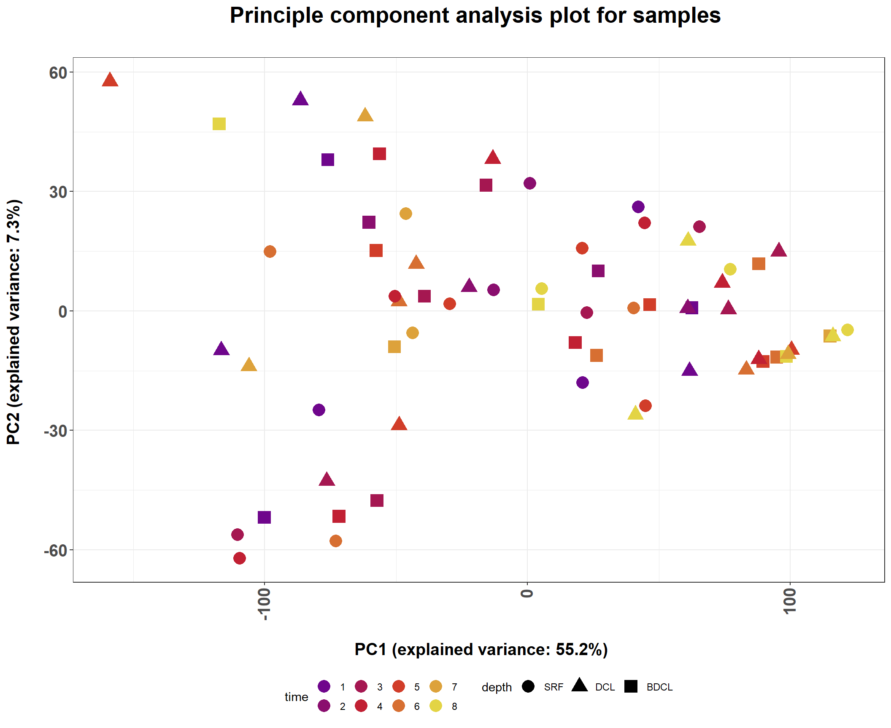
# ggrepel::geom_label_repel()
# PCA with sparse pca methods
library(sparsepca)
# Sparse Principal Component Analysis (spca).
spc <- spca(dc_namin, k = 2, alpha = 1e-04, beta = 1e-04, center = TRUE,
scale = FALSE, max_iter = 1000, tol = 1e-05, verbose = 0)
summary(spc) PC1 PC2
Explained variance 5287.580 688.044
Standard deviations 72.716 26.231
Proportion of variance 0.549 0.071
Cumulative proportion 0.549 0.621# Randomized Sparse Principal Component Analysis (rspca).
rspc <- rspca(dc_namin, k = 2, alpha = 1e-04, beta = 1e-04, center = TRUE,
scale = FALSE, max_iter = 1000, tol = 1e-05, verbose = 0)
summary(rspc) PC1 PC2
Explained variance 5286.727 689.770
Standard deviations 72.710 26.263
Proportion of variance 0.549 0.072
Cumulative proportion 0.549 0.621# Robust Sparse Principal Component Analysis (robspca)
robspc <- robspca(dc_namin, k = 2, alpha = 1e-04, beta = 1e-04, gamma = 100,
center = TRUE, scale = FALSE, max_iter = 1000, tol = 1e-05, verbose = 0)
summary(robspc) PC1 PC2
Explained variance 5287.580 688.044
Standard deviations 72.716 26.231
Proportion of variance 0.549 0.071
Cumulative proportion 0.549 0.621sparse_pca_plot <- function(spc,type="Sparse"){
df_spc <- data.frame(summary(spc))
# variance explained
df_spc[3,1] # pc1
df_spc[3,2] # pc2
df_out <- as.data.frame(spc$scores)
colnames(df_out) <- c("PC1","PC2")
df_out$depth <- sapply( strsplit(as.character(row.names(df_out)), "_"), "[[", 1 )
df_out$time <- sapply( strsplit(as.character(row.names(df_out)), "_"), "[[", 2 )
df_out$rep <- sapply( strsplit(as.character(row.names(df_out)), "_"), "[[", 3 )
df_out$depth <- factor(df_out$depth, levels=depth_vec)
head(df_out)
ggplot(df_out,aes(x=PC1,y=PC2,color=depth))+
theme(plot.title = element_text(size = 20,hjust = 0.5, face="bold")) +
geom_point(size = 4,alpha=0.7)+
scale_fill_manual(values=cols) +
xlab(paste0('\n PC1', " (explained variance: ",round(df_spc[3,1],3)*100,"%)"))+
ylab(paste0("PC2"," (explained variance: ",round(df_spc[3,2],3)*100,"%) \n")) +
ggtitle(paste0(type," principle component analysis plot for samples \n")) +
## adjust positions
guides(fill = guide_legend(ncol = 4,reverse = T))+
theme(legend.position="bottom") +
theme(plot.title = element_text(size = 20,hjust = 0.5, face='bold')) +
theme(axis.title.x = element_text(size = 15,hjust = 0.5, face='bold')) +
theme(axis.title.y = element_text(size = 15,hjust = 0.5, face='bold')) +
theme(axis.text.x = element_text(angle = 90, hjust = 0.95,face='bold', vjust=0.4,size=15))+
theme(axis.text.y = element_text(size=15, face='bold'))
# theme(panel.grid.major = element_blank()) +
# theme(panel.grid.minor = element_blank(), panel.background=element_blank(), plot.background=element_blank())
}
sparse_pca_plot(spc,type="Sparse")
sparse_pca_plot(rspc,type="Randomized Sparse")sparse_pca_plot(robspc,type="Robust Sparse")5.3.2. Intensity based, but merge all 3 replicates into 1
# make the matrix by reshaping dataframe: now merge replicates into 1 sample
library(maditr)
dim(df_ave_rep)[1] 24109 5colnames(df_ave_rep)[1] "Time" "Depth" "Peptide_id"
[4] "Ave_abundance_ratio" "SE_abundance_ratio" head(df_ave_rep)# A tibble: 6 x 5
Time Depth Peptide_id Ave_abundance_ratio SE_abundance_ratio
<chr> <chr> <chr> <dbl> <dbl>
1 T1 BDCL Pep_1 0.0796 0.330
2 T1 BDCL Pep_10 0.310 0.268
3 T1 BDCL Pep_100 -0.0371 NA
4 T1 BDCL Pep_1000 0.158 NA
5 T1 BDCL Pep_1001 1.10 NA
6 T1 BDCL Pep_1002 -0.289 NA df_deptime <- df_ave_rep %>% unite(col="Depth_time",Depth,Time,sep="_",remove=F)
dc_deptime <- dcast(df_deptime, Depth_time ~ Peptide_id, value.var = "Ave_abundance_ratio")
dim(dc_deptime)[1] 24 3327# names(dc_ave)
rownames(dc_deptime) [1] "1" "2" "3" "4" "5" "6" "7" "8" "9" "10" "11" "12" "13" "14" "15"
[16] "16" "17" "18" "19" "20" "21" "22" "23" "24"# make Peptide_id more simpler (Pep_1 -> P.1)
names(dc_deptime) <- str_replace(names(dc_deptime),"Pep_","P.")
# make first column into row name
dc_deptime <- tibble::column_to_rownames(dc_deptime, var="Depth_time")
dim(dc_deptime) # 24 samples (row) x 3326 peptides (columns)[1] 24 3326# First, the typical principal component analysis on the samples would be to transpose the data such that the samples are rows of the data matrix. The prcomp function can be used to return the principal components and other variables.(https://genomicsclass.github.io/book/pages/pca_svd.html)
# pc <- prcomp(dc_deptime) # due to NA this is not working
# how should we change NA in the matrix?
any(is.na(dc_deptime))[1] TRUEsum(is.na(dc_deptime)) [1] 55715dim(dc_deptime)[1] 24 3326# let's replace na into minimum value for each sample
dc_namin <- dc_deptime
for (i in 1:dim(dc_deptime)[1]){
rowMin <- (min(dc_deptime[i,] ,na.rm=T))
# print(rowMin)
for (j in 1:dim(dc_deptime)[2]) {
if (is.na(dc_namin[i,j])){
dc_namin[i,j] <- rowMin
# print(dc_namin[i,j])
}
}
}
sum(is.na(dc_namin)) # 0 mean success[1] 0dim(dc_namin)[1] 24 3326# PCA with prcomp
pc <- prcomp(dc_namin)
eigs <- pc$sdev^2
# variance explained
eigs[1] / sum(eigs) # pc1[1] 0.2337933eigs[2] / sum(eigs) # pc2[1] 0.1206704# First, a new dataframe should be created, with the information of sample-group. (http://huboqiang.cn/2016/03/03/RscatterPlotPCA)
df_out <- as.data.frame(pc$x)
df_out$depth <- sapply( strsplit(as.character(row.names(df_out)), "_"), "[[", 1 )
df_out$time <- sapply( strsplit(as.character(row.names(df_out)), "_"), "[[", 2 )
df_out$time <- as.numeric(str_replace(df_out$time, "T",""))
df_out$time <- factor(df_out$time,levels=1L:8L)
df_out$depth <- factor(df_out$depth, levels=depth_vec)
head(df_out) PC1 PC2 PC3 PC4 PC5 PC6
BDCL_T1 -24.534492 28.79674 10.549548 -32.100385 -31.682245 1.556616
BDCL_T2 5.073993 30.71306 14.499586 -6.958086 -11.832224 -20.671204
BDCL_T3 17.077324 42.95080 20.168612 11.061465 -25.101955 -7.049146
BDCL_T4 -15.751935 43.88549 32.197741 28.314972 -52.132391 -18.367922
BDCL_T5 -9.690738 30.98770 17.698443 8.521346 6.625860 -16.484314
BDCL_T6 84.800636 35.35991 -7.936892 10.871801 9.428024 12.206266
PC7 PC8 PC9 PC10 PC11 PC12
BDCL_T1 24.406973 75.0509037 -3.3497318 6.342311 -3.6506451 -7.235115
BDCL_T2 -10.544076 -0.8340977 4.4115075 -44.140505 -13.9240450 32.580860
BDCL_T3 -10.764967 -3.9169605 9.3474413 -31.787171 48.2457981 18.965086
BDCL_T4 -30.596145 -22.5261609 -20.7419714 39.682140 -15.0180873 -18.792812
BDCL_T5 15.318684 -12.4546081 -3.8725125 -10.297788 -0.7190775 -12.418933
BDCL_T6 4.143535 -3.5000136 -0.7848563 7.518015 -1.7021147 -0.114875
PC13 PC14 PC15 PC16 PC17 PC18
BDCL_T1 3.355983 -12.102647 13.533931 -1.6470644 1.5162587 -1.1014997
BDCL_T2 -38.215325 -23.951513 -28.317395 -7.7643147 6.5059975 -0.8714815
BDCL_T3 32.465054 28.760203 12.100025 -8.1926181 -3.3162418 5.5350797
BDCL_T4 5.613762 -8.844271 -7.326600 -6.6350535 2.0307768 -1.2645675
BDCL_T5 -18.993500 4.195542 22.654300 61.6572501 0.5513924 8.8989632
BDCL_T6 -2.224464 -4.664197 7.758384 -0.4118246 -8.0904814 -9.4970301
PC19 PC20 PC21 PC22 PC23 PC24
BDCL_T1 2.770110 -0.3541712 0.835203 1.1838723 -0.3772148 3.842239e-14
BDCL_T2 5.221695 1.3120352 -5.001226 0.9319250 -1.1506411 6.935424e-15
BDCL_T3 2.175470 -2.6013903 2.022978 -0.8134503 -0.7588341 -1.235644e-14
BDCL_T4 1.621392 1.6237042 1.470535 -1.9408004 -1.5490014 4.743081e-14
BDCL_T5 -1.515850 0.4022789 -1.654316 -2.8588957 -2.8371598 -4.278002e-14
BDCL_T6 7.640881 0.1688737 -18.501891 14.3827393 29.5229208 1.597147e-13
depth time
BDCL_T1 BDCL 1
BDCL_T2 BDCL 2
BDCL_T3 BDCL 3
BDCL_T4 BDCL 4
BDCL_T5 BDCL 5
BDCL_T6 BDCL 6# brewing color palette
purple_yellow<-colorRampPalette(colors=c("#6F068C",'#CF2525','#E3D445'))(8)
library(scales)
show_col(purple_yellow)
ggplot(df_out,aes(x=PC1,y=PC2))+
theme(plot.title = element_text(size = 20,hjust = 0.5, face="bold")) +
geom_point(size = 5, aes(shape=depth, col=time))+
# geom_point(size = 5,stroke = 1.3, shape=21, aes(fill=depth))+
# scale_color_discrete() +
scale_color_manual(values=purple_yellow) +
xlab(paste0('\n PC1', " (explained variance: ",round(eigs[1] / sum(eigs),3)*100,"%)"))+
ylab(paste0("PC2"," (explained variance: ",round(eigs[2] / sum(eigs),3)*100,"%) \n")) +
ggtitle("Principle component analysis plot for samples \n") +
## adjust positions
guides(fill = guide_legend(nrow = 2,reverse = T))+
theme(legend.position="bottom") +
theme(plot.title = element_text(size = 20,hjust = 0.5, face='bold')) +
theme(axis.title.x = element_text(size = 15,hjust = 0.5, face='bold')) +
theme(axis.title.y = element_text(size = 15,hjust = 0.5, face='bold')) +
theme(axis.text.x = element_text(angle = 90, hjust = 0.95,face='bold', vjust=0.4,size=15))+
theme(axis.text.y = element_text(size=15, face='bold')) # ggrepel::geom_label_repel()5.3.3. Intensity based, but only use the peptides that have intensity value in all 8 timepoints
# make the matrix by reshaping dataframe: now merge replicates into 1 sample
library(maditr)
dim(df_filt8)[1] 10800 10colnames(df_filt8) [1] "Time" "Depth" "Peptide_id"
[4] "Ave_abundance_ratio" "SE_abundance_ratio" "error_up"
[7] "error_down" "date_time" "elapsed_hours"
[10] "Timepoints" head(df_filt8)# A tibble: 6 x 10
Time Depth Peptide_id Ave_abundance_rat~ SE_abundance_ra~ error_up error_down
<chr> <fct> <chr> <dbl> <dbl> <dbl> <dbl>
1 T1 BDCL Pep_1 0.0796 0.330 0.410 -0.251
2 T1 BDCL Pep_10 0.310 0.268 0.578 0.0416
3 T1 BDCL Pep_100 -0.0371 NA NA NA
4 T1 BDCL Pep_101 0.214 0.149 0.363 0.0658
5 T1 BDCL Pep_1029 0.218 NA NA NA
6 T1 BDCL Pep_103 0.272 NA NA NA
# ... with 3 more variables: date_time <chr>, elapsed_hours <int>,
# Timepoints <int>df_deptime8 <- df_filt8 %>% unite(col="Depth_time",Depth,Time,sep="_",remove=F)
dc_deptime8 <- dcast(df_deptime8, Depth_time ~ Peptide_id, value.var = "Ave_abundance_ratio")
tail(dc_deptime8) Depth_time Pep_1 Pep_10 Pep_100 Pep_101 Pep_102 Pep_1029
1: SRF_T3 0.4669865 -0.3954449 0.2500128 0.3818253 0.1432494 NA
2: SRF_T4 0.3312995 -0.6744161 0.2832706 0.4081791 0.1775286 NA
3: SRF_T5 0.3380502 -0.6460625 0.2585715 0.3710712 0.1814962 NA
4: SRF_T6 0.3529231 -1.3399576 0.1816619 0.3621708 0.2190185 NA
5: SRF_T7 0.4782181 -1.2459190 0.2289521 0.3416747 0.1123060 NA
6: SRF_T8 0.5692345 -0.3924672 0.2393851 0.2583834 0.2115638 NA
Pep_103 Pep_104 Pep_105 Pep_106 Pep_107 Pep_108 Pep_109
1: 0.2637766 0.4760849 0.2446230 -0.2944344 0.020120286 -0.4946981 -0.1319601
2: 0.2828533 0.2947613 0.1307547 -0.1033529 0.037578402 -0.7662084 -0.0358407
3: 0.3104931 0.3208034 0.2051591 -0.2155083 0.011688625 -0.7398496 -0.1563084
4: 0.2457848 0.5333560 0.1803477 -0.5572958 0.005013516 -0.7233863 -0.1278263
5: 0.2864625 0.5856246 0.1469569 -0.4466277 -0.034405467 -0.4920642 -0.1808131
6: 0.2251272 0.5341190 0.1291651 -0.7828210 -0.007179262 -0.1781901 -0.1469695
Pep_11 Pep_110 Pep_111 Pep_112 Pep_113 Pep_114
1: -0.3527782 -0.3194677 0.3659946 -0.6444100 -0.154832550 0.23019014
2: -0.2653045 -0.2814034 0.2984718 -0.3437953 -0.415066459 -0.03642096
3: -0.1312358 -0.4235507 0.4103121 -1.0391311 -0.697847081 0.13646186
4: -0.5169375 -0.3736374 0.3875778 -1.2307270 -0.007089338 0.06022394
5: -0.1256831 -0.5123128 0.5577114 -0.4832024 -0.281809480 0.13723179
6: -0.1005433 -0.3721127 0.4930510 -1.2879236 0.249354831 0.02169372
Pep_115 Pep_116 Pep_117 Pep_118 Pep_119 Pep_12
1: -0.4771525 0.44715800 0.12143151 -0.2846039 -0.34544622 -0.17495937
2: -0.6505170 -0.09148013 0.13391300 -0.1355330 -0.89710927 0.08008403
3: -0.7653512 0.07864209 0.05794647 -0.2522477 -0.70897762 -0.09508691
4: -0.7106745 0.48489284 0.12184991 -0.1958884 -0.48910420 -0.10341483
5: -0.5845682 0.88147257 -0.01479037 -0.2250245 0.04525177 0.01920643
6: -0.7149912 0.87802514 0.16868892 -0.1571878 -0.13690653 -0.13640040
Pep_120 Pep_121 Pep_122 Pep_123 Pep_124 Pep_125 Pep_126
1: 0.33806940 0.14395175 -0.1834498 0.5638635 -0.14790631 -0.1269285 0.7485945
2: 0.08913997 0.06627201 -0.1589173 0.3212698 -0.04868131 -0.1403164 0.4886070
3: 0.15946912 0.04823155 0.1077751 0.4561480 -0.41360604 -0.2108598 0.2370963
4: 0.18906325 0.09356188 -0.2151021 0.5246696 -0.22734214 -0.1603766 0.5758832
5: 0.33781927 0.01417342 -0.1117398 0.5969108 0.10717933 -0.2912007 0.7794710
6: 0.31103558 0.12933632 -0.2071608 0.3269961 -0.06987413 -0.2747207 0.7825459
Pep_127 Pep_128 Pep_129 Pep_13 Pep_130 Pep_131
1: -0.2195692 0.02166321 -0.046389388 -0.25170498 -0.085072539 -0.2128499
2: -0.2722014 -0.26047560 0.136766745 -0.10142457 -0.002394043 -0.1906454
3: -0.3571750 0.07930766 0.325043983 -0.02008262 -0.274606342 -0.1891713
4: -0.3993376 0.37793464 0.008345064 -0.33401783 -0.069624907 -0.1910677
5: -0.2081525 0.05030179 -0.640019078 -0.53860313 -0.110737931 -0.1414473
6: -0.1709355 0.10212965 -0.066684368 -0.36314436 -0.063077063 -0.1239925
Pep_132 Pep_133 Pep_134 Pep_135 Pep_136 Pep_137
1: -0.85930459 -0.3429511 -0.14195200 -0.21557006 -0.01694122 -0.15271751
2: -1.07402955 -0.6002668 -0.07557549 -0.34048114 -0.23276573 -0.03570268
3: -1.36436740 -0.4813212 -0.21520858 -0.33145182 0.01702726 -0.24958524
4: -0.80830788 -0.3526548 -0.17007794 -0.20897376 0.16113501 -0.17327211
5: -0.03153623 -0.3052273 -0.17762806 -0.54384619 -0.25900068 -0.17802909
6: -0.26412639 -0.2095567 -0.06679800 -0.05191504 -0.10971387 -0.16070243
Pep_138 Pep_139 Pep_14 Pep_140 Pep_141 Pep_142 Pep_143
1: 0.64824977 0.2076270 -0.1778310 NA -0.20063407 -0.9176916 0.24874627
2: 0.57048743 0.2460642 -0.1633198 NA -0.14904376 -0.5190098 0.03256479
3: 0.35966771 0.3340608 -0.3231032 NA -0.24080292 -0.8140382 0.27676054
4: 0.35812179 0.2320104 -0.1652027 NA -0.06399054 -0.8273671 0.43609823
5: 0.03724075 0.2526883 -0.3357113 NA -0.38736920 -0.7666584 0.39913017
6: -0.11693814 0.2456773 -0.2541097 NA -0.47446912 -0.6854465 0.28342004
Pep_144 Pep_145 Pep_146 Pep_147 Pep_148 Pep_149
1: 0.3337232 -0.3814175 -0.31906905 -0.16239118 -0.2361926 0.00343031
2: 0.2302482 -0.3521334 -0.41397788 -0.33438328 -0.1290147 0.02286816
3: 0.1062131 -0.2309920 0.09055282 0.04752090 -0.2206308 -0.04537699
4: 0.5984245 -0.3331778 0.03081483 -0.24018501 -0.1870546 0.13889330
5: 0.4750441 -0.2676431 -0.02208207 -0.38462134 -0.1794617 -0.01205197
6: 0.5174448 -0.2499350 -0.01175730 0.09653398 -0.3200737 0.08466783
Pep_15 Pep_150 Pep_151 Pep_152 Pep_153 Pep_154
1: -0.7408996 -0.049778904 -0.03506471 -0.15618020 1.636875 0.20409140
2: -0.6205468 -0.053228116 -0.09195386 0.01143476 1.945639 0.37739000
3: -0.6985551 -0.221044685 -0.10522361 -0.20085495 1.647148 0.37647925
4: -0.5064170 -0.111102825 -0.03397515 -0.06673727 1.844503 0.07306176
5: -1.1812075 0.004057559 -0.01235354 -0.10422702 1.196220 -0.03149494
6: -0.7045801 -0.090912147 -0.05602794 0.07837346 1.218683 0.23152699
Pep_155 Pep_156 Pep_157 Pep_158 Pep_159 Pep_16
1: 0.14143345 -0.1477770 NA -0.065161250 0.24524262 -0.3372189
2: 0.25707632 -0.1806715 NA 0.191627419 0.36630648 -0.2019834
3: 0.13503987 -0.1983751 NA 0.022475435 0.16005232 -0.3847825
4: 0.09446670 -0.6491446 NA 0.132868000 -0.07110726 -0.2663255
5: -0.04223441 -0.6442473 NA 0.005854889 0.16266180 -0.4690408
6: -0.06176019 -0.7086009 NA -0.528270717 0.11927757 -0.4595963
Pep_160 Pep_161 Pep_162 Pep_163 Pep_164 Pep_165
1: -0.7245098 -0.4916080 -0.05985967 0.06876684 -0.4383140 -0.2463262
2: -0.2975785 -0.3594223 0.05861496 0.08382025 -0.3116508 -0.2285037
3: -1.4653717 -0.4546533 -0.01658168 0.03934151 -0.4117544 -0.2637444
4: 0.1686928 -0.4851474 0.06303786 -0.12789439 -0.5174404 -0.2255097
5: -0.8689619 -0.5282902 0.05129283 0.11259203 -0.4645260 -0.2804213
6: -0.4345657 -0.4007761 0.19062400 0.09348313 -0.3728908 -0.1754960
Pep_166 Pep_167 Pep_168 Pep_169 Pep_17 Pep_170
1: 0.28383068 -0.04306733 -0.18880488 0.118008368 -0.2483201 -0.4648849
2: -0.10883839 -0.06286517 -0.08049520 0.065774850 -0.2693295 -0.4393909
3: 0.20313681 -0.04546170 -0.07118489 0.036738746 -0.2246301 -0.2382181
4: 0.08762421 0.07559253 -0.34551283 0.135371186 -0.2419718 -0.2673676
5: -0.12087115 -0.01357929 -0.24420343 0.004401262 -0.2622246 -0.4691879
6: -0.15052392 0.14722471 -0.20935903 0.053159455 -0.1978933 -0.2627807
Pep_171 Pep_172 Pep_173 Pep_174 Pep_175 Pep_176
1: -0.09629937 -0.38707577 0.5449954 -0.3601105 0.2863892 -0.05712485
2: 0.12723886 -0.36740477 0.3861978 -0.2238527 0.2615844 0.29893025
3: -0.10153463 -0.04638835 0.4821913 -0.2378165 0.2389396 -0.16075295
4: 0.21490817 -0.23171767 0.4783249 -0.2868721 0.4227144 -0.21247172
5: 0.07855193 -0.86325076 0.4971448 -0.4317512 0.5830063 -0.28252329
6: 0.07108843 -0.16613054 0.2767492 -0.2140794 0.5840017 -0.13140334
Pep_177 Pep_178 Pep_179 Pep_18 Pep_180 Pep_181
1: -0.35079786 -0.3230894 0.3388013 -0.2178716 -0.17949859 -0.1922399
2: -0.06343993 -0.1985580 0.2379716 -0.1780027 -0.10111123 -0.1482661
3: 0.08906288 -0.1416601 0.2758224 -0.1273857 -0.10283668 -0.3463248
4: -0.27766773 -0.2055343 0.4518731 -0.1955739 -0.08380223 -0.2579485
5: -0.22555069 -0.3533013 0.3005146 -0.3352688 -0.10386725 -0.1570093
6: -0.64768145 -0.3491040 0.2438742 -0.2459924 -0.11822969 -0.1548072
Pep_182 Pep_183 Pep_184 Pep_185 Pep_186 Pep_187
1: -0.010797841 -0.14348605 -0.13908232 0.1781604 -0.26850931 0.05821595
2: -0.064460243 -0.01229175 -0.15767857 -0.1410889 -0.18594478 0.01617022
3: 0.005203307 -0.18265616 -0.08577415 0.2125072 -0.29938357 0.01526701
4: -0.034494338 -0.16899664 -0.11565084 0.3744863 0.04745282 -0.09396759
5: 0.130006419 -0.27352149 -0.46435750 0.2320686 -0.26048152 -0.13223661
6: 0.284763606 -0.19223761 -0.44052759 0.2200262 -0.42654107 0.01179831
Pep_188 Pep_189 Pep_19 Pep_190 Pep_191 Pep_192 Pep_193
1: 0.19320478 -0.7999269 -0.1354667 -0.12296250 NA 0.03048059 NA
2: 0.04781846 -0.5737132 -0.1130522 -0.11538997 NA -0.35482765 NA
3: 0.21911170 -0.6762897 -0.2637760 -0.02024562 NA -0.69629832 NA
4: 0.14418199 -0.7784539 -0.2504836 -0.16869678 NA -0.22755553 NA
5: 0.28460146 -1.0022891 -0.2821006 -0.22888147 NA 0.22626601 NA
6: 0.07280025 -0.8072477 -0.1909582 0.10324848 NA 0.13426616 NA
Pep_194 Pep_195 Pep_196 Pep_197 Pep_198 Pep_199 Pep_2
1: -0.1386034 -0.5989000 0.3844088 0.3844342462 -0.09011086 NA -0.1064377
2: -0.1494198 -1.5955412 0.2686409 0.0001566021 -0.31875568 NA 0.1102191
3: -0.2195873 -2.7313145 0.3620118 -0.1796166003 -0.31211141 NA 0.1799272
4: -0.2162350 -1.8273963 0.3294020 0.2041916936 0.04646110 NA -0.1273722
5: -0.1735204 -0.4873802 0.3736902 -0.4858703648 -0.09822335 NA -0.3235107
6: -0.1602410 -1.0511617 0.3740818 -0.5080113919 -0.10968821 NA -0.2745024
Pep_20 Pep_200 Pep_201 Pep_202 Pep_203 Pep_204 Pep_205
1: -0.001147139 -0.4678775 -0.2917265 0.5578493 0.0912225 0.6183500 -0.5765826
2: 0.150626666 -0.6014000 -0.0432020 0.2534506 0.1775246 0.6197284 -0.2532629
3: 0.004048464 -0.5260143 -0.1602062 0.1497682 0.1464192 0.4554458 -0.8444253
4: -0.021886309 -0.4222067 -0.1658701 0.3011412 0.4697967 0.6530972 -1.0190709
5: -0.006650247 -0.3026559 -0.2405352 0.3676418 0.1116974 1.1072990 -0.6597212
6: -0.109278614 -0.2575489 -0.3995395 0.3345847 -0.2406639 0.6611670 -0.6674080
Pep_206 Pep_207 Pep_208 Pep_209 Pep_21 Pep_210
1: -0.01476607 -0.1672496 0.4571315 0.293572759 -0.5230097 0.3533405
2: 0.07676559 -0.1395982 0.2523497 0.365801454 -1.1756880 0.5246829
3: -0.43668454 -0.3001769 0.3733709 0.286032233 -1.2096144 0.2383756
4: -0.24065448 -0.1838785 0.4565946 0.111539531 -0.6118634 0.2394062
5: -0.16965397 -0.2509060 0.4854252 0.268260684 -0.5173405 0.3921396
6: -0.11275270 -0.2058993 0.4336764 0.002113767 -0.4100815 0.4336576
Pep_211 Pep_212 Pep_213 Pep_214 Pep_215 Pep_216 Pep_217
1: 0.54624966 0.4982726 0.1086778 0.2302640 0.05210200 -0.2749863 NA
2: 0.01220674 0.4586587 0.4327977 0.2522400 0.09861401 0.1610125 NA
3: 0.39585077 0.3777643 0.2568591 0.1843305 0.23669554 0.1860040 NA
4: -0.12611299 0.2470943 0.1768264 0.5337005 0.26115956 0.1061789 NA
5: -0.05282715 0.8124911 0.3153138 0.3464626 0.29711294 0.5765389 NA
6: -0.02166128 0.4251413 0.4895010 0.3893895 0.33922957 -0.1963703 NA
Pep_218 Pep_219 Pep_22 Pep_220 Pep_221 Pep_222 Pep_223
1: 0.43943521 NA -0.2628769 -0.48903660 -0.15389105 0.10725310 NA
2: 0.01084364 NA -0.2229597 -0.26586240 -0.04929671 -0.10529890 NA
3: 0.39290738 NA -0.2338464 -0.21590875 -0.07200204 -0.01000779 NA
4: 0.48920193 NA -0.2152424 -0.08431116 -0.32141288 -0.04582712 NA
5: 0.66338875 NA -0.2736508 -0.51383376 -0.45457482 -0.13231720 NA
6: 0.54702984 NA -0.2303310 -0.23529116 -0.08216618 -0.01380853 NA
Pep_224 Pep_225 Pep_226 Pep_227 Pep_228 Pep_229 Pep_23
1: 0.02964813 NA 0.3783067 -0.13762520 NA -0.3988991 0.19702557
2: 0.01612249 NA 0.4391589 0.09553428 NA -0.3021381 0.06887750
3: 0.05960217 NA 0.3496765 -0.04794884 NA -0.3336992 0.07231401
4: 0.15760825 NA 0.2849987 -0.01788861 NA -0.7925149 0.18962374
5: 0.20391228 NA 0.2735804 -0.22811594 NA -0.6853329 0.11368996
6: 0.10772882 NA 0.5341289 0.14911666 NA -0.2963483 0.20893670
Pep_230 Pep_231 Pep_232 Pep_233 Pep_234 Pep_235 Pep_236
1: -0.23793724 0.2043794 -0.1150270 -0.1481547 NA 0.45433017 0.2347210
2: -0.09987288 0.3993090 -0.7278703 -0.0940219 NA 0.45594662 0.1259882
3: -0.20001044 0.5446449 -0.8246103 -0.3322543 NA 0.39004613 0.6529251
4: -0.44279662 0.1492368 -0.3493887 -0.2032319 NA 0.40861340 0.1832383
5: -0.54288345 0.3754815 0.1170914 -0.2832306 NA 0.05587671 0.6288292
6: -0.22349026 -0.1793464 0.1591242 -0.1846873 NA 0.34456788 0.5645070
Pep_237 Pep_238 Pep_239 Pep_24 Pep_240 Pep_241 Pep_242
1: 0.1520093 0.22978989 0.44178007 -0.13166256 NA -0.07392685 -0.4965975
2: 0.1450465 -0.06658701 0.09626123 -0.06476533 NA -0.26162028 -0.2322988
3: 0.1885747 0.04756528 0.24135491 -0.19172924 NA 0.05352633 -0.2396427
4: 0.1855906 0.05180709 0.55370493 -0.16177009 NA 0.07606724 -0.4297193
5: 0.2807601 0.24851031 0.48667820 -0.23835339 NA 0.36236129 -0.6282295
6: 0.1845051 0.11647059 0.85372607 -0.23794277 NA 0.25949117 -0.4732451
Pep_243 Pep_244 Pep_245 Pep_246 Pep_247 Pep_248 Pep_249
1: NA 0.4765662 0.24222552 NA -0.4937009 -0.04225739 -0.08483346
2: NA 0.5749069 -0.02050066 NA -0.3189186 -0.12389322 0.21407707
3: NA 0.4182297 0.55199868 NA -0.2884916 0.07354745 0.01348523
4: NA 0.5289731 0.15556593 NA -0.3425516 -0.15050196 -0.30304764
5: NA 0.5719772 0.22020494 NA -0.5102930 -0.12022450 -0.33919455
6: NA 0.3987579 0.24935269 NA -0.8516032 -0.16820638 -0.01856754
Pep_25 Pep_250 Pep_251 Pep_252 Pep_253 Pep_254
1: -0.006804912 0.30645204 0.20680447 -0.7721890 0.1540010 -0.20316895
2: -0.149534877 -0.07663634 0.06539204 -0.7538406 0.2676174 -0.12639429
3: -0.027817605 0.05068913 0.19288375 -0.3867458 0.4299448 -0.19497793
4: 0.133832218 0.04031550 0.27712450 -0.6455106 -0.1109938 -0.10590476
5: -0.103840191 0.07070322 0.04374913 -0.4262060 0.2656994 -0.13367138
6: 0.057758445 0.07074282 -0.04507851 -0.2785911 -0.1707414 -0.02654803
Pep_255 Pep_256 Pep_257 Pep_258 Pep_259 Pep_26 Pep_260
1: -0.12108813 NA 0.10107821 -0.06758763 0.25863265 0.4414253 0.170078152
2: -0.09952648 NA 0.10848249 0.03629122 -0.03483355 0.3325651 0.161043971
3: 0.09136573 NA 0.05873174 -0.11598848 0.01917450 0.3032293 0.211851027
4: -0.30569710 NA 0.02493264 -0.10020144 0.32145386 0.3318325 0.104906260
5: -0.07738112 NA 0.20316492 -0.13481417 0.27845780 0.4575247 0.006474294
6: -0.07384116 NA 0.37260688 -0.13990949 0.16115628 0.3869733 0.113942209
Pep_261 Pep_262 Pep_263 Pep_264 Pep_265 Pep_266
1: 0.6610281 -0.25725194 0.16373976 0.3771027 0.37285258 0.36138901
2: 0.7354094 -0.06232306 0.03789736 0.2509250 0.07859854 0.02715308
3: 1.0939841 -0.27741782 0.24233353 0.3861386 0.37018769 0.40306247
4: 0.9353214 -0.32013136 0.25123086 0.3288096 0.31090575 0.60493293
5: 0.6760358 -0.30310350 0.11715613 0.5884880 0.32614736 0.39073921
6: 0.4506492 -0.22516399 -0.18708213 0.4279204 0.46324187 0.66546788
Pep_267 Pep_268 Pep_269 Pep_27 Pep_270 Pep_271
1: 0.05352552 -0.1285779 0.5416445 0.059782592 0.2504639 -0.03797187
2: -0.93839262 -0.1630237 0.6596657 -0.009448582 0.1567698 -0.06117086
3: -0.67954849 -0.1462412 0.6794241 0.011122463 0.1691870 -0.19820570
4: -0.62269920 -1.3483785 0.5568501 0.010395344 0.1465019 -0.04846017
5: 0.07171898 0.1167619 0.8358874 0.020297177 0.2950137 -0.03531282
6: -0.16493427 -0.1984855 0.6596912 -0.130411966 0.1392199 -0.07618722
Pep_272 Pep_273 Pep_274 Pep_275 Pep_276 Pep_277 Pep_278
1: -0.21912033 -0.3797332 0.2283374 0.14322123 NA 0.3803177 -0.09783624
2: -0.02324621 -0.4076787 0.2845203 0.05193092 NA 0.3136160 -0.36551654
3: -0.22757389 -0.4473943 -0.0476527 0.24827549 NA 0.2439046 -0.64932225
4: -0.16935959 -0.2849526 0.2550220 0.21825061 NA 0.4061488 -0.19516250
5: -0.21858868 -0.2829670 0.1407276 0.51787106 NA 0.4644477 0.08631935
6: -0.19204143 -0.1401720 0.1460773 0.56744467 NA 0.2993911 0.05085212
Pep_279 Pep_28 Pep_280 Pep_281 Pep_282 Pep_283
1: -0.06060651 0.15927613 -0.11832541 -0.19581878 -0.15820979 NA
2: -0.08485552 0.33096341 0.03039558 -0.01747018 0.04735478 NA
3: 0.20515924 0.05952488 -0.39696092 -0.18473769 -0.10191231 NA
4: 0.07544396 -0.05216483 -0.44254008 -0.02179995 -0.23801341 NA
5: 0.07709779 0.20060887 -0.35246494 -0.13108709 -0.23032441 NA
6: 0.04868698 0.18839468 -0.22793859 -0.02100074 -0.30204765 NA
Pep_284 Pep_285 Pep_286 Pep_287 Pep_288 Pep_289
1: -0.3472824 0.10497070 -0.5534150 0.19993707 0.2442928 -0.15625865
2: -0.5924299 0.18596962 -0.3550630 -0.16508338 0.2538264 -0.01757412
3: -0.7174193 0.14777234 -0.3330812 -0.04962959 0.4009381 -0.06705952
4: -0.4234357 0.02489112 -0.3999217 -0.09714833 0.2760205 -0.24212549
5: -0.4358687 0.06510080 -0.6342981 0.16251485 -0.5191595 -0.40121441
6: -0.4253882 -0.16637971 -0.8594521 0.05306345 0.1273595 -0.31716287
Pep_29 Pep_290 Pep_291 Pep_292 Pep_293 Pep_294 Pep_295
1: -0.03208733 0.2109275 NA -0.25992639 -0.14637377 -0.3625321 -0.1192099
2: -0.05122321 0.1573516 NA 0.01880324 -0.16439406 -0.3185104 -0.1558861
3: -0.10058258 0.2706131 NA -0.15108434 -0.30422078 -0.2019680 -0.4333705
4: -0.11291197 0.3829764 NA -0.22409164 -0.15160941 -0.3711238 -0.2743426
5: -0.13234821 0.6642301 NA -0.16243977 0.01923225 -0.2674081 -0.3430978
6: -0.08484307 0.2210381 NA -0.12986757 -0.17537226 -0.7870843 -0.2876629
Pep_296 Pep_297 Pep_298 Pep_299 Pep_3 Pep_30 Pep_300
1: NA 0.3255122 -0.7149873 NA 0.0759332396 0.4608873 -0.1791793
2: NA 0.3122908 -0.1867133 NA 0.0005783812 0.3022506 -0.2329686
3: NA 0.2658278 -0.3357438 NA -0.0121410718 0.4045737 -0.2877467
4: NA 0.2483227 0.1333550 NA 0.0128570547 0.4483019 -0.3139909
5: NA 0.3006036 -0.5149170 NA 0.0084253091 0.5333175 -0.3907132
6: NA 0.2984485 -0.3643553 NA -0.0004770774 0.2658291 -0.2811306
Pep_301 Pep_302 Pep_303 Pep_304 Pep_305 Pep_306
1: -0.12145159 0.3772352 -0.2875333 0.2148278 0.02644361 0.25177464
2: 0.05341629 0.2196685 -0.3308383 0.1424061 -0.01477717 0.13621093
3: -0.13215643 0.3798686 -0.4194913 0.1817179 -0.02824930 0.14477522
4: -0.14873448 0.5132619 -0.2942496 0.3721497 0.05442499 0.46121700
5: -0.23155212 0.5136726 -0.4628082 0.2737195 0.02316820 -0.03766616
6: -0.11685590 0.1734650 -0.4801673 0.3276659 0.04322357 -0.57654605
Pep_307 Pep_308 Pep_309 Pep_31 Pep_310 Pep_311 Pep_312
1: 0.19929492 -0.4473171 0.07741292 -0.2882468 -0.2109839 NA -0.2057401402
2: 0.07110868 -0.5964447 0.19035972 -0.6968335 0.1885171 NA 0.0006048193
3: 0.21043343 -0.7456175 0.15340118 -0.7004074 -0.4090104 NA 0.1027577863
4: 0.40410068 -0.7596898 0.05940855 -0.3772941 -0.2356377 NA -0.3897820224
5: 0.49075702 0.3247055 0.26009027 -0.1852395 -0.3804033 NA -0.2144332185
6: 0.21229068 -1.2216600 0.14553648 -0.1867401 -0.2713000 NA 1.7098903684
Pep_313 Pep_314 Pep_315 Pep_316 Pep_317 Pep_318
1: 0.58748599 -0.17440229 -0.5267825 -0.5973962 -0.4861164 0.06359399
2: 0.40751156 -0.13730732 -0.4618045 -0.4441876 -0.5085610 0.05611628
3: 0.52574094 0.04675972 -0.5831809 -0.6029291 -0.3630009 0.15782796
4: 0.20390703 -0.26411313 -0.1022558 -0.5246746 -0.4817356 -0.05770672
5: -0.07027456 -0.34436954 -0.4657373 -0.3738462 -0.4253447 0.03293511
6: 0.17932042 -0.07218152 0.2689008 -0.5827717 -0.9051008 0.23822662
Pep_319 Pep_32 Pep_320 Pep_321 Pep_322 Pep_323
1: -0.21760505 -0.4110596 -0.3527934 0.06707731 0.37916114 0.50939176
2: -0.19691037 -0.2310396 -0.1529474 0.10296741 0.23786095 0.10253165
3: -0.28044769 -0.4557169 -0.2948953 0.15210552 -0.04825499 -0.17224606
4: -0.17918773 -0.3453776 -0.3872509 -0.26338086 0.31691860 -0.03428472
5: -0.09757123 -0.5135738 -0.3246638 -0.28474575 -0.01870757 -0.54453715
6: -0.01827074 -0.5837398 -0.2213812 -0.02095198 0.44853595 0.13224444
Pep_324 Pep_325 Pep_326 Pep_327 Pep_328 Pep_329
1: -0.13172670 -0.7600462 0.01447084 0.06965966 -0.09091906 NA
2: -0.18909088 -1.4524494 0.07783554 0.17698642 -0.11216679 NA
3: 0.18186967 -1.3835220 0.04452063 -0.03370804 -0.01632730 NA
4: -0.07590497 -0.7108136 0.07739292 -0.02586228 -0.17254980 NA
5: -0.42434656 -0.3087938 0.08619728 0.01180243 -0.29457141 NA
6: -0.03247437 -0.3545461 0.10003172 0.07046463 -0.24939041 NA
Pep_33 Pep_330 Pep_331 Pep_332 Pep_333 Pep_334 Pep_335
1: -0.02583344 NA 0.3638563 0.095876663 0.13994353 0.10525024 -0.07294139
2: 0.02856795 NA 0.2765437 0.004217501 0.04460363 0.21938289 -0.54921707
3: -0.05254781 NA 0.4094395 0.342197411 0.22241489 0.06963281 -0.63782540
4: 0.17081464 NA 0.5890166 0.114486664 0.19815795 0.63762541 -0.44074454
5: -0.29460906 NA 0.4591851 0.072436835 0.12459918 0.44432875 -0.25130701
6: 0.12007696 NA 0.4771297 -0.172496898 0.05636181 0.49764370 -0.03908018
Pep_336 Pep_337 Pep_338 Pep_339 Pep_34 Pep_340
1: -0.60924774 0.18451621 0.18729255 -0.16608727 0.17670535 -0.009882642
2: -0.37645627 0.31254537 0.41011661 -0.38984990 0.04657050 0.328039533
3: -0.35804864 -0.25224764 0.05456799 -0.23220740 0.14995809 -0.026218510
4: -0.01651480 0.01468748 -0.04599225 -0.30309853 0.12973751 -0.121452678
5: -0.46205705 -0.11667495 0.12221861 -0.18575793 0.24542065 -0.081008221
6: -0.05897777 -0.03186362 -0.01975806 -0.09325062 0.06921568 0.011641461
Pep_341 Pep_342 Pep_343 Pep_344 Pep_345 Pep_346
1: -0.30659781 -0.3450249 -0.3994962 0.19120277 -0.172739930 -0.10426726
2: -0.23611729 -0.3401968 -0.2210460 0.11225813 0.180722155 -0.08261444
3: -0.09664992 -0.2639317 -0.1549291 0.23530308 0.198461526 0.21084647
4: -0.23518052 -0.3407642 -0.1851496 0.02535085 0.004411906 -0.31573243
5: -0.39327784 -0.2569208 -0.3727193 0.02792087 0.216414862 -0.17644853
6: -0.29155424 -0.1397100 -0.3646523 -0.04963338 -0.091242729 -0.22104159
Pep_347 Pep_348 Pep_349 Pep_35 Pep_350 Pep_351 Pep_352
1: 0.4639975 0.32612304 NA -0.7202886 -0.1505495 0.00608734 0.047984515
2: -0.4953979 -0.24362356 NA -0.6393650 0.1125871 0.08572565 0.172843894
3: -0.2204618 0.02288183 NA -0.7880026 -0.3610065 0.20712114 0.025741171
4: 0.3442416 0.27129008 NA -0.7660922 0.1126079 0.24106078 0.034953523
5: 1.0360136 0.60443655 NA -0.8525842 0.3763795 0.13379582 0.002190198
6: 0.8168585 0.53790954 NA -0.8157478 -0.2269718 0.08740093 -0.135892272
Pep_353 Pep_354 Pep_355 Pep_356 Pep_357 Pep_358
1: 0.02076975 0.261350094 NA -0.077090485 -0.0340841 0.2126025
2: 0.04184035 0.289387917 NA -0.056698534 0.1024506 0.1437881
3: -0.43366930 0.231707145 NA 0.009889466 0.6042370 0.1702799
4: -0.16908666 0.001071384 NA -0.442814614 0.2514182 0.2331418
5: -0.43358787 0.061662588 NA -0.320709596 0.2254968 0.2648830
6: -0.33897990 -0.028378444 NA -0.192910559 0.3048080 0.2048565
Pep_359 Pep_36 Pep_361 Pep_362 Pep_363 Pep_364
1: -0.1868860 0.5534569 0.29589992 -0.10640875 -0.050691252 -0.04303097
2: -0.1297396 0.4002693 -0.03771222 0.04179977 0.040316860 -0.17043635
3: -0.0280512 0.4453429 0.53936712 -0.11183044 -0.009540827 -0.03318686
4: 0.5819535 0.3178354 0.22619442 -0.18107081 -0.070475151 -0.15962366
5: -0.1160135 0.3100050 0.23708711 -0.04999824 0.074976820 0.11669157
6: 0.7338827 0.3866068 0.19208211 -0.08166397 0.082884952 0.01368757
Pep_365 Pep_366 Pep_367 Pep_368 Pep_369 Pep_37 Pep_370
1: -0.4314267 NA 0.10753216 -0.3524583 NA 0.1497495 NA
2: -0.2387794 NA 0.35402602 -0.4623880 NA 0.1543099 NA
3: -0.2595597 NA 0.49332058 -0.4959458 NA 0.3044991 NA
4: -0.3259435 NA -0.32171822 0.3331037 NA 0.1628522 NA
5: -0.4316673 NA 0.04586872 0.2739431 NA 0.2919475 NA
6: -0.5195867 NA -0.21001663 -0.4993350 NA 0.2739321 NA
Pep_371 Pep_372 Pep_373 Pep_374 Pep_375 Pep_376
1: -0.1455301 -0.17507656 0.06311719 0.3638007 -0.05041022 -0.16307545
2: -0.3623829 0.08188514 0.02201093 0.1096047 -0.01176883 -0.13683789
3: -0.2360662 -0.08936992 -0.11025813 0.3395287 0.02849820 -0.33479506
4: -0.2322374 -0.25232089 0.05355517 0.2504253 -0.09798467 -0.37564656
5: -0.1751261 -0.17749863 -0.02200267 0.4472975 -0.07609979 0.27337272
6: -0.2428096 -0.27671526 0.18960707 0.2329892 0.09654290 -0.07665575
Pep_377 Pep_379 Pep_38 Pep_380 Pep_381 Pep_382 Pep_383
1: 0.5588369 -0.15062710 0.09450299 NA NA 0.20235337 0.04859349
2: 0.3846039 0.41242200 -0.04982567 NA NA 0.36184455 0.02315603
3: 0.2889921 0.18023423 0.08758975 NA NA -0.03586713 0.13088351
4: 0.7813851 0.28223168 0.18384715 NA NA 0.09901053 0.17275007
5: 0.7240296 0.07098601 0.12531334 NA NA 0.18590177 0.21244669
6: 0.7119190 0.49001308 0.21817501 NA NA 0.09917568 0.33113393
Pep_384 Pep_385 Pep_386 Pep_387 Pep_388 Pep_389 Pep_39
1: NA NA 0.2078168 0.3094006 NA -0.37802469 0.02084789
2: NA NA 0.1093536 0.4817656 NA -0.22289978 0.16101404
3: NA NA 0.4603491 1.0162043 NA -0.37687460 0.10705171
4: NA NA 0.5652435 0.6795776 NA 0.11919069 0.16390577
5: NA NA 0.7287455 0.7954809 NA 0.05784024 0.59409037
6: NA NA 0.6595665 1.1421100 NA -0.05596656 -0.09050965
Pep_390 Pep_391 Pep_393 Pep_394 Pep_395 Pep_396 Pep_397
1: -0.3738662 NA 0.14384828 NA NA 0.05002702 -0.33391153
2: -0.2483333 NA 0.07893167 NA NA -0.18091994 0.07344750
3: -0.6509915 NA 0.12641009 NA NA -0.34180047 -0.05570895
4: -0.3249119 NA 0.35249662 NA NA 0.14230533 0.01758592
5: -0.1824278 NA 0.31651673 NA NA -0.09257389 -0.10987863
6: -0.4043221 NA 0.18697690 NA NA -0.90076217 0.22895403
Pep_398 Pep_399 Pep_4 Pep_40 Pep_400 Pep_401 Pep_402
1: 0.17270572 NA -0.056833907 0.3365697 -0.2539309 1.846710 NA
2: 0.14624897 NA -0.006209967 0.3311905 -0.1414353 2.024315 NA
3: -0.03149452 NA 0.019776616 0.4290309 -0.3895145 1.335570 NA
4: 0.08104981 NA -0.139454788 0.3248205 -0.3907167 1.498209 NA
5: 0.02418370 NA -0.094141611 0.3814403 -0.4176065 1.447256 NA
6: -0.04092418 NA -0.032409725 0.1896245 -0.2038107 1.354030 NA
Pep_403 Pep_404 Pep_405 Pep_406 Pep_407 Pep_408 Pep_409
1: -0.3758403 -0.2667156 -0.07538179 -0.3016057 -0.1699314 NA NA
2: -0.2650582 -0.2634594 -0.23425600 -0.1930248 -0.2216375 NA NA
3: -0.2629987 -0.2168343 -0.23733931 -0.4645347 -0.6243273 NA NA
4: -0.3140520 -0.3561974 -0.40482312 -0.3110495 -0.4066009 NA NA
5: -0.4670890 -0.3454562 0.26662264 -0.2783833 -0.4013762 NA NA
6: -0.4515183 -0.4275040 0.33464997 -0.3306480 -0.2723113 NA NA
Pep_41 Pep_410 Pep_411 Pep_412 Pep_413 Pep_414
1: 0.5937191 0.32926036 NA -0.21483371 0.31023727 0.006347835
2: 0.4101926 0.42536935 NA -0.14584476 0.32776820 0.211767994
3: 0.1424278 0.30866229 NA -0.11160374 0.29130091 0.203863746
4: 0.4533912 0.05898347 NA -0.09412015 -0.02292117 0.456983818
5: 0.1683834 0.64543813 NA -0.33334893 0.19306864 0.034924634
6: 0.5013128 0.18252956 NA -0.02796848 0.07289240 -0.241942104
Pep_415 Pep_416 Pep_418 Pep_419 Pep_42 Pep_420 Pep_421
1: -0.18747524 -0.33943757 0.30489496 0.13621961 0.4336559 NA 0.59327868
2: -0.01639103 0.53835861 0.01937761 0.13685405 0.3353190 NA 0.03465667
3: -0.04362642 0.02857858 0.14950212 0.09975233 0.7257383 NA 0.37389270
4: -0.21905855 -0.40934328 0.24531662 -0.15169516 0.2726241 NA 0.42425030
5: -0.10001155 -0.17097238 0.11357217 0.40812079 0.2561182 NA 0.36360619
6: -0.23101469 0.16100697 0.40480385 -0.55825980 0.4456385 NA 0.10915094
Pep_422 Pep_423 Pep_424 Pep_425 Pep_426 Pep_427 Pep_428
1: NA 0.14793288 0.344762731 NA -0.9563161 0.35148155 NA
2: NA 0.27301234 0.479159280 NA -0.5914982 0.16646288 NA
3: NA 0.07475593 0.194486538 NA -0.4890536 -0.01026299 NA
4: NA 0.02171516 -0.162995632 NA -0.7646472 0.17916558 NA
5: NA 0.27987585 0.008346531 NA -1.2880601 0.19712975 NA
6: NA 0.38381581 0.183046451 NA -1.2261664 0.26878067 NA
Pep_43 Pep_430 Pep_432 Pep_433 Pep_434 Pep_435 Pep_436
1: -0.01166089 0.038932038 0.0745771 NA NA 0.4179453 -0.18447635
2: -0.15768745 0.237181432 0.1387879 NA NA 0.2921465 0.02816066
3: -0.06249665 0.008077286 0.2535619 NA NA 0.4955787 -0.21842150
4: -0.13967671 0.082857479 0.2364056 NA NA 0.4413055 -0.22206759
5: -0.20311254 0.233426575 -0.1800582 NA NA 0.3352336 -0.25449081
6: -0.11051467 0.137263467 -0.1890992 NA NA 0.4540031 0.13364879
Pep_438 Pep_439 Pep_44 Pep_440 Pep_441 Pep_442 Pep_443
1: 0.24546867 -0.2245403 -0.30629514 NA -0.2018682 -0.7263678 -0.2944213
2: 0.16647932 -0.1239006 -0.22348111 NA -0.0636842 -0.5512055 0.1344748
3: 0.22386345 -0.2976622 0.02764396 NA -0.1238292 -0.6846489 -0.2690185
4: -0.07811568 -0.2479034 -0.32103239 NA -0.2687739 -0.7878375 -0.1671579
5: 0.09355383 -0.4512559 -0.57750486 NA -0.2281536 -0.6227454 -0.2836365
6: 0.11780516 -0.4257863 -0.13091054 NA -0.2093672 -0.5869353 -0.2128889
Pep_444 Pep_445 Pep_446 Pep_447 Pep_449 Pep_45 Pep_450
1: 1.664583 0.06845345 0.16096152 0.6824716 0.41909880 NA 0.3389298722
2: 1.179265 -0.03821785 0.05394306 0.2816643 0.09014665 NA 0.0002754576
3: 1.533336 -0.15235430 0.08721657 0.3244295 0.17743054 NA 0.3715977239
4: 1.594743 0.11447573 0.05084558 0.1455725 0.53096239 NA 0.1969086600
5: 1.505648 -0.03189673 0.24724685 0.7260570 0.59818665 NA 0.1415383103
6: 1.597737 0.29004458 0.30604744 -0.1314878 0.53434984 NA 0.1014013722
Pep_451 Pep_452 Pep_453 Pep_454 Pep_455 Pep_456 Pep_457
1: -0.196455324 NA 0.9792942 0.3098272 0.47454361 0.2308126 0.2832619
2: -0.174358978 NA 0.9330252 0.1768024 0.39071997 -0.7386582 0.2258383
3: 0.006056658 NA 1.0103934 0.3502701 -0.03814887 -0.8657713 0.1738731
4: 0.232623471 NA 0.8219618 0.3438928 0.30444951 -0.1726337 0.3177922
5: -0.233092665 NA 1.1198830 0.3235957 0.31038438 0.7396187 0.3239785
6: -0.205483322 NA 1.4830280 0.1131119 0.35583984 0.5188276 0.3177642
Pep_458 Pep_459 Pep_46 Pep_461 Pep_462 Pep_463 Pep_465
1: NA -0.18328381 -0.9392794 0.1710865 NA -0.14255120 -0.253803009
2: NA 0.05212345 -0.2332657 0.1976504 NA 0.01879614 -0.367955235
3: NA -0.01456332 -0.7784396 0.2483401 NA -0.16114861 -0.209391787
4: NA -0.23073814 -0.6763289 0.4143907 NA 0.11429481 -0.241904228
5: NA -0.33712245 -0.4359790 0.1370537 NA 0.02896883 0.001091136
6: NA -0.28402475 -0.2975838 0.5010326 NA -0.01372351 0.005009288
Pep_466 Pep_468 Pep_469 Pep_47 Pep_470 Pep_471 Pep_473
1: 0.02514936 -0.13347315 0.1169992 -0.5621277 0.4181844 NA -0.02106687
2: 0.28212128 0.00693748 0.2867075 -0.8772192 0.5665702 NA -0.04761654
3: -0.17026913 0.27781811 0.1983217 -1.0061659 0.5355713 NA -0.14855292
4: 0.02140717 0.13448097 0.4844130 -0.4871243 0.4614429 NA -0.22508077
5: -0.11533558 0.76119641 0.3695186 -0.4865421 0.6981691 NA -0.27798403
6: -0.16182281 0.53185623 0.2771470 -0.5687770 0.8178538 NA 0.04058304
Pep_474 Pep_475 Pep_476 Pep_477 Pep_478 Pep_479 Pep_48
1: -0.282035278 -0.083950204 0.8153845 0.46295569 NA NA 0.5218317
2: -0.197011581 -0.074650476 0.9329881 0.33817802 NA NA 0.2887887
3: -0.007912509 0.150168555 0.9962876 0.19471862 NA NA 0.3980773
4: -0.131366300 -0.241670701 1.3758471 0.04464984 NA NA 0.4595787
5: -0.235478258 -0.153334541 0.2180022 0.09106505 NA NA 0.6264093
6: -0.055326962 -0.009996949 0.7740062 0.08909173 NA NA 0.4686352
Pep_480 Pep_481 Pep_483 Pep_484 Pep_488 Pep_489 Pep_49
1: NA -0.33260035 NA NA 0.7312945 -0.09850017 0.1908027
2: NA -0.16196958 NA NA 0.4696087 0.05592149 0.1760007
3: NA -0.42990699 NA NA 0.4961280 -0.45953358 0.2282915
4: NA -0.37052415 NA NA 0.4766828 -0.05869217 0.1130480
5: NA -0.56025833 NA NA 0.7565862 -0.15368058 0.2421424
6: NA -0.08730206 NA NA 0.7215920 0.01333547 0.1638137
Pep_490 Pep_491 Pep_492 Pep_493 Pep_495 Pep_496 Pep_497
1: 0.14210661 0.13682987 1.3960891 0.3716406 -0.14043839 -0.1834283 0.5170614
2: 0.11717079 -0.02714784 1.5552047 0.1270811 0.01127880 -0.4375536 0.3723823
3: 0.19758262 -0.02231545 0.6413040 0.2336345 0.07948651 -0.6782200 0.3813726
4: 0.26791707 -0.04904222 0.7489080 0.1235950 0.02695202 -0.1136349 0.7046403
5: 0.09738104 0.34899618 0.9562416 0.3870511 -0.10242930 0.4521105 0.7668614
6: 0.17700850 -0.32640291 1.1795935 0.2898062 -0.32653015 0.5080920 0.5861665
Pep_498 Pep_499 Pep_5 Pep_50 Pep_500 Pep_501
1: -0.4861653 0.03641654 -0.5016827 1.159413 -0.05844924 -0.234691548
2: -0.0387088 -0.09776955 -1.2216684 1.170616 -0.19165677 -0.001395693
3: -0.1000101 -0.02789893 -1.1593142 1.209157 -0.19548165 -0.259674787
4: -0.3994548 0.01555492 -0.7500828 1.168632 -0.09788836 -0.221804235
5: -0.8647925 0.18694250 -0.3373303 1.065883 -0.15561299 -0.331961401
6: -0.5860932 0.05823385 -0.3620063 1.106462 0.23920274 -0.529335286
Pep_502 Pep_503 Pep_504 Pep_505 Pep_506 Pep_507 Pep_508
1: 0.07444784 -0.15663491 NA 0.01193706 -0.01009817 1.197436 -0.02981176
2: -0.00265518 -0.27565713 NA 0.11186297 -0.24646674 1.664171 0.16607500
3: 0.04722897 0.04309523 NA -0.84876662 0.24787926 1.202928 -0.37417627
4: 0.09675234 0.29202068 NA -0.00215853 0.46473115 1.143793 -0.09416118
5: 0.12037497 -0.01788196 NA -0.71747434 0.35435047 1.125051 -0.05301071
6: 0.23724600 0.18071957 NA -0.88927135 0.35024941 1.293889 0.47362265
Pep_509 Pep_51 Pep_511 Pep_512 Pep_513 Pep_514 Pep_515 Pep_516
1: NA 0.27621588 NA NA 0.4623565 0.7410337 NA NA
2: NA 0.37569837 NA NA 0.5473568 0.4858197 NA NA
3: NA 0.21865445 NA NA 0.3153618 0.4913680 NA NA
4: NA 0.26873640 NA NA 0.3993762 0.7505745 NA NA
5: NA 0.06817856 NA NA 0.7080911 0.7274930 NA NA
6: NA 0.07370329 NA NA 0.5114682 0.3475342 NA NA
Pep_517 Pep_518 Pep_52 Pep_520 Pep_521 Pep_522 Pep_523
1: NA -0.3135008 0.016927045 0.8703394 -0.01623689 NA 1.0548616
2: NA 0.0371060 0.065520876 0.8480324 0.12095664 NA 1.6899954
3: NA -0.1947381 0.117593275 0.8153265 0.00844396 NA 0.9787613
4: NA -0.5595581 0.092131905 0.9227422 -0.85622463 NA 1.3569270
5: NA -0.5512521 -0.004945625 0.2856969 0.35701096 NA 1.2206855
6: NA -1.0624398 -0.081229360 0.3204754 -0.54981299 NA 1.2465848
Pep_524 Pep_525 Pep_528 Pep_529 Pep_53 Pep_536 Pep_537
1: 0.01776500 NA -0.5260437 -0.1258505 0.3528989 0.3882603 -0.7962296
2: -0.18634870 NA -0.8279609 -1.3477064 0.2788166 0.6395873 -0.3509667
3: -0.33628446 NA -0.6701605 -0.7874641 0.4081719 0.2913778 -0.2338899
4: -0.41031648 NA -0.3192989 -0.4233205 0.4145548 0.1968130 -0.2480263
5: 0.01583454 NA -0.3390910 0.3022852 0.5546487 0.0662012 -0.2820597
6: 0.22525296 NA -0.3166799 0.1441531 0.5789620 0.1133639 -0.4764700
Pep_538 Pep_539 Pep_54 Pep_541 Pep_543 Pep_544 Pep_545
1: -0.08285625 -0.4769971 0.3330765 NA 0.4485987 0.15345536 0.2805165
2: -0.03206470 -0.2927851 0.3721290 NA 0.6865513 -0.26807865 0.4208789
3: -0.17935036 -0.3362138 0.2570294 NA 0.4856182 -0.23201540 0.1887344
4: -0.19536589 -0.4560803 0.1866996 NA 0.1496804 0.16402864 0.3170424
5: -0.27960270 -0.3627408 0.1491971 NA 0.8406135 -0.07547869 0.1068160
6: -0.21631045 -0.2534394 0.2388581 NA 0.5869659 0.08046943 0.2754311
Pep_547 Pep_55 Pep_550 Pep_551 Pep_552 Pep_553
1: NA -0.2860311 -0.38715045 -0.12045534 0.238707897 -0.08001653
2: NA -0.2705756 0.13892150 -0.02398606 0.257820847 -0.15534619
3: NA -0.3389619 0.04391035 -0.32377518 0.234502088 -0.02910496
4: NA -0.2390722 -0.25545828 -0.19458120 0.004647003 -0.16091803
5: NA -0.2603483 -0.17694316 -0.09340019 0.167120908 -0.34536241
6: NA -0.0923718 0.01884612 -0.30285614 0.291970524 -0.47018635
Pep_554 Pep_555 Pep_557 Pep_558 Pep_559 Pep_56
1: 0.37871288 -0.33222771 -0.12692879 0.22569710 0.41471065 0.2431924
2: 0.33428447 -0.06527719 0.13022702 0.05295923 0.59041712 0.4368081
3: 0.10460148 -0.17506530 0.08251723 -0.04808375 0.28604278 0.4802019
4: 0.09960352 -0.12464078 -0.20687114 0.03071362 0.32416771 0.2486512
5: -0.26477168 -0.10001205 -0.18300114 0.12764243 0.08063049 0.1872650
6: -0.02192021 -0.08741171 -0.43898260 0.14193197 0.10136697 0.3906890
Pep_560 Pep_562 Pep_563 Pep_564 Pep_566 Pep_567 Pep_568 Pep_569
1: 0.4195170 -0.26448249 -0.7043504 NA NA NA NA -0.1922232
2: 0.3202396 0.04302284 -0.4372985 NA NA NA NA -0.1899401
3: 0.4390680 0.16255759 -0.3608745 NA NA NA NA -0.1911082
4: 0.7064252 -0.47443009 -0.7842286 NA NA NA NA -0.2457085
5: 0.4412181 -0.35854157 -1.0892809 NA NA NA NA -0.2654459
6: 0.7529724 -0.89437566 -1.5718433 NA NA NA NA -0.3677654
Pep_57 Pep_570 Pep_573 Pep_574 Pep_577 Pep_58 Pep_581
1: 0.5647797 -0.18887265 0.26575262 1.1400099 -0.2175061 0.4173815 0.180857445
2: 0.4097046 -0.38220551 0.09666770 1.4056540 -0.0366195 0.2452765 -0.003457582
3: 0.4654752 0.14811155 0.42060339 0.9932836 -0.5156899 0.2878135 0.002178320
4: 0.3844202 0.22170498 0.22886841 1.2795342 -0.4863622 0.1192640 -0.018211469
5: 0.6104630 0.08366218 0.18633265 0.9375074 -0.1559621 0.1982851 -0.085836733
6: 0.6446982 0.12306234 0.06808241 1.0608821 -0.2910665 0.1590905 -0.092353282
Pep_582 Pep_583 Pep_584 Pep_586 Pep_587 Pep_588
1: -0.4306824 0.15517649 0.7944871 -0.194188416 1.49884815 0.51894674
2: 0.4889200 0.42787974 0.9196502 -0.046476348 -0.20475250 0.95153779
3: 0.2287996 -0.23239762 1.3111761 0.017752052 -0.06973317 0.19981269
4: -0.1395730 -0.63742849 1.2573403 -0.119873839 1.60266497 0.02155075
5: -0.3255912 -0.08696845 0.5341340 -0.001090693 1.78817348 0.18750469
6: 0.1466380 -0.01987109 1.2373989 0.066083185 0.37706834 0.24273493
Pep_589 Pep_59 Pep_590 Pep_591 Pep_592 Pep_593 Pep_594
1: 0.3460475 -0.4908818 0.7092019 -0.29593925 0.5182865 -0.10417174 1.2126261
2: 0.5855714 -0.1798536 0.1984847 0.14830630 0.5582019 0.14166036 -0.1392085
3: 0.1229923 0.1153223 0.8506909 -0.04230767 0.3104847 -0.29506098 1.3075817
4: 0.5489191 -0.2558140 0.8812075 0.04739127 0.6381706 -0.06274021 1.1071366
5: 0.4752330 -0.5845469 0.9831017 0.09751063 0.3642054 -0.13429923 1.0767092
6: 0.4195880 -0.4098950 0.7896871 -0.05867513 0.2936791 0.14080143 1.3402834
Pep_595 Pep_597 Pep_6 Pep_60 Pep_601 Pep_604 Pep_606
1: 0.11576346 0.202083434 -0.4232340 -0.2004902 0.4703778 -0.60741705 NA
2: -0.12059681 -0.004537838 -0.2041510 -0.1943005 0.5082699 -0.26490647 NA
3: 0.06440505 0.170187022 -0.2925660 -0.3025292 0.4260561 -0.04915185 NA
4: 0.14657799 0.495428398 -0.3649667 -0.2665770 0.1405146 -0.47118952 NA
5: 0.43731229 -0.027512688 -0.7473973 -0.2945030 0.9970687 -0.38073416 NA
6: -0.30851292 0.791730327 -0.6408813 -0.2678606 0.5257810 -0.08724356 NA
Pep_608 Pep_609 Pep_61 Pep_610 Pep_611 Pep_612 Pep_614
1: -0.4059889 0.4437628 -0.1585295 0.1285353 -0.50990451 0.8129502 NA
2: 0.2080118 0.7810924 -0.0867317 0.1815867 -0.12734041 0.3959292 NA
3: 0.1105645 0.2427566 -0.1768196 0.2481398 -0.08731333 0.5365625 NA
4: -0.1038316 0.5110782 -0.1851692 0.5298404 0.01899840 0.6241564 NA
5: -0.5570345 0.6121464 -0.2230390 0.3382974 -0.32987961 0.7306451 NA
6: -0.4692603 0.5451928 -0.2060288 0.5497252 -0.59307184 0.8505309 NA
Pep_615 Pep_617 Pep_619 Pep_62 Pep_623 Pep_625 Pep_626
1: NA NA NA -0.1711318 0.12956465 -0.06354283 1.5325477
2: NA NA NA -0.1889345 -0.10166524 -0.14808591 0.7158444
3: NA NA NA -0.3001676 -0.04089080 -0.03066050 1.1302023
4: NA NA NA -0.2087706 0.01283712 -0.13924508 1.2790349
5: NA NA NA -0.2545252 0.08400960 -0.24085223 -1.4290833
6: NA NA NA -0.2098178 0.32889943 -0.29720416 1.2105997
Pep_629 Pep_63 Pep_631 Pep_632 Pep_638 Pep_639 Pep_64
1: NA -0.009868225 NA 0.38722768 0.443520609 NA 0.5331544
2: NA 0.070147236 NA 0.58952931 -0.009204782 NA 0.5014241
3: NA 0.057902685 NA 0.37184134 0.345428962 NA 0.5966771
4: NA 0.052822009 NA 0.66980804 0.477879956 NA 0.6837089
5: NA 0.098893576 NA 0.76954775 0.454243321 NA 0.6488159
6: NA 0.095526472 NA -0.03407105 -0.106071254 NA 0.6270014
Pep_640 Pep_644 Pep_645 Pep_646 Pep_647 Pep_65 Pep_650
1: -0.441422302 0.6255553 0.34344592 -0.5199101 -0.26946911 -0.05737347 NA
2: 0.194711803 0.8980426 0.23402115 -0.8204326 -0.25292402 -0.01157672 NA
3: -0.029880165 0.4862795 0.05998112 -1.0394562 0.01164356 0.10919763 NA
4: 0.006711773 0.3799922 0.23477367 -0.8590880 -0.03466431 0.03733102 NA
5: -0.369632009 0.4457973 0.38933911 -0.4067419 -0.33597588 -0.15797367 NA
6: -0.197616385 0.5226999 0.44284831 -0.9520821 -0.31464772 -0.05908146 NA
Pep_651 Pep_653 Pep_659 Pep_66 Pep_662 Pep_665 Pep_666
1: 0.06567439 NA NA 0.02669566 -0.15488742 0.4544807 0.01891296
2: 0.03120720 NA NA -0.03924176 -0.12379168 0.2100957 -0.19415453
3: 0.25025619 NA NA 0.07826228 -0.05272895 0.3376913 0.08795750
4: 0.22088508 NA NA 0.02365024 -0.42323276 0.6223375 0.66625376
5: -0.02097651 NA NA 0.23266354 -0.09458985 0.6557089 0.50027550
6: 0.31605383 NA NA 0.23107914 -0.33899344 0.5489985 0.37737460
Pep_669 Pep_67 Pep_671 Pep_674 Pep_68 Pep_680 Pep_683
1: 0.31436807 0.4291481 NA -0.01512028 -0.2251581 0.7387806 NA
2: -0.06700582 0.2663853 NA 0.07771301 -0.3869028 0.7779736 NA
3: 0.27735591 0.3204326 NA -0.37495460 -0.3156596 0.1727101 NA
4: -0.02051585 0.3815133 NA -0.14229152 -0.2751228 0.6178110 NA
5: 0.66245337 0.4489674 NA -0.21396693 -0.3057603 0.4013884 NA
6: 0.54933980 0.4280401 NA 0.19024137 -0.4103799 0.4101861 NA
Pep_685 Pep_686 Pep_687 Pep_688 Pep_69 Pep_692 Pep_694
1: NA 0.15227223 -0.10073429 0.16731473 0.10910609 NA 0.6715507
2: NA -0.02438415 -0.09813430 0.35548806 0.35223422 NA 0.8510001
3: NA -0.15297341 0.06109923 0.12747981 0.04233432 NA 0.7629984
4: NA 0.02881352 -0.48425939 0.06543463 0.45085499 NA 0.1292900
5: NA 0.25994567 -0.08807499 0.01222720 0.10486309 NA 0.4591208
6: NA -0.02841497 -0.12751921 0.09287719 0.12457623 NA 0.0420182
Pep_695 Pep_698 Pep_7 Pep_70 Pep_701 Pep_702 Pep_705
1: NA NA -0.2113521 -0.483071397 0.48940885 NA 0.1346705
2: NA NA -0.1052714 -0.262861501 0.33214446 NA 0.2113228
3: NA NA -0.0307737 0.007975665 0.41657799 NA 0.1806324
4: NA NA -0.2013036 -0.287380166 0.03677244 NA 0.3198794
5: NA NA -0.1734607 -0.654091049 -0.01408766 NA 0.1566836
6: NA NA -0.2925231 -0.633570567 0.04298572 NA 0.4555033
Pep_71 Pep_710 Pep_711 Pep_715 Pep_719 Pep_72 Pep_721
1: -0.07510868 NA 0.4458536 0.8809738 0.35739980 0.147934963 0.3824492
2: -0.22226354 NA -0.2625204 1.0246421 0.04763432 0.052212891 0.1928872
3: -0.10044097 NA 0.2205052 0.7022811 0.52472215 -0.104604302 0.8406634
4: -0.35310951 NA 0.2527740 0.6280291 0.24115316 0.002439097 0.3430755
5: -0.13027369 NA 0.5995905 0.3539942 0.28872166 -0.101239892 0.2338020
6: -0.05321889 NA 0.4665499 -0.4413639 0.15625146 0.162531526 0.1983551
Pep_725 Pep_726 Pep_728 Pep_73 Pep_733 Pep_734 Pep_736
1: NA -0.03375602 NA 0.28555850 0.17324656 0.354277618 0.8058585
2: NA -0.05463260 NA 0.31422917 0.32145275 0.361864389 0.5934829
3: NA -0.09855417 NA 0.07254635 0.54927253 0.120917954 0.6406738
4: NA 0.12105793 NA 0.11846248 0.36714807 -0.169503559 1.0208738
5: NA 0.09908689 NA 0.07872846 -0.01738523 0.431127051 0.7223090
6: NA 0.15575498 NA 0.25440207 0.18745490 -0.008649443 0.6461936
Pep_737 Pep_74 Pep_744 Pep_745 Pep_75 Pep_750 Pep_752 Pep_754
1: NA -0.03305596 -0.03718875 NA -0.8053086 NA NA NA
2: NA -0.10519933 -0.10814137 NA -0.6241733 NA NA NA
3: NA -0.07807518 -0.13502903 NA -0.5590183 NA NA NA
4: NA 0.02395060 -0.12319352 NA -0.4618764 NA NA NA
5: NA -0.04260007 0.10591412 NA -0.2937467 NA NA NA
6: NA 0.02312866 -0.07143387 NA -0.1941897 NA NA NA
Pep_76 Pep_761 Pep_765 Pep_766 Pep_769 Pep_77 Pep_771
1: 0.05272202 -0.25424510 NA 0.05710768 NA -0.0346665870 0.7974485
2: 0.12675890 0.26589852 NA 0.25990104 NA -0.1722656051 0.4971468
3: -0.01465278 0.02581699 NA -0.08221290 NA -0.0248325815 0.8861484
4: 0.03002216 -0.88885885 NA 0.02564960 NA -0.1146187236 0.6355042
5: -0.17058998 0.72458572 NA -0.16380137 NA -0.0501077794 0.6101703
6: -0.04372345 -0.21263306 NA -0.11639174 NA -0.0007876248 0.7524960
Pep_774 Pep_78 Pep_781 Pep_785 Pep_789 Pep_79 Pep_798
1: NA NA 0.36978896 -0.24878053 NA -0.67288510 -0.4763543
2: NA NA 0.04736491 0.04880325 NA -0.36807224 0.2042000
3: NA NA 0.15583468 -0.43537105 NA -0.32572267 0.1049564
4: NA NA 0.32439827 -0.04958071 NA -1.06829685 0.6000290
5: NA NA 0.32142859 -0.09986562 NA -0.09024617 0.2056593
6: NA NA 0.24896513 -0.18716635 NA -0.85461655 0.6958045
Pep_8 Pep_80 Pep_804 Pep_81 Pep_810 Pep_813 Pep_814
1: -0.4224170 -0.033643942 1.542210 0.3614370 -0.03997714 -0.06235666 0.4997048
2: -0.4307842 0.029958037 1.317869 0.1219610 0.04258063 -0.05856580 0.3561409
3: -0.5008196 -0.119231269 1.164471 0.2591938 -0.01024689 -0.25532368 0.5261276
4: -0.3854162 0.075714276 1.219873 0.2516126 -0.23947936 -0.25336518 0.4261696
5: -0.4829318 0.110391429 1.692231 0.3018422 0.17717499 -0.31408399 0.5966859
6: -0.4649810 0.004954068 1.827679 0.3165852 0.01665736 -0.12727969 0.6294016
Pep_816 Pep_82 Pep_827 Pep_83 Pep_836 Pep_84
1: 0.04809371 0.074502216 -0.35237038 -0.5480646 0.8143985 0.09091120
2: 0.66408091 0.024083985 0.05575442 -0.3713859 0.2977357 0.23329331
3: -0.01931387 -0.009421448 0.04561983 -0.5271487 0.9488040 0.07231032
4: -0.06537346 0.133822654 0.02654186 -0.6368478 0.9205570 -0.06715689
5: -0.08703107 0.148162849 -0.07596085 -0.5169287 0.8064422 0.19984000
6: 0.09342058 0.044035433 0.08132247 -0.6234410 0.6298317 0.15713113
Pep_85 Pep_852 Pep_86 Pep_865 Pep_868 Pep_87 Pep_88
1: -0.1383944 NA -0.2163055 NA -0.5409307 -0.5204568 -0.2329338
2: -0.5574624 NA -0.3976238 NA -0.5042492 -0.3399125 -0.3681866
3: -0.4881666 NA -0.3467786 NA -0.7685774 -0.6393494 -0.2457091
4: -0.5049245 NA -0.4369373 NA -1.4959413 -0.4196696 -0.3613285
5: -0.1670599 NA -0.3773021 NA -0.6390553 -0.3042158 -0.3108122
6: -0.1030471 NA -0.7551782 NA -0.3707738 -0.3634153 -1.2409394
Pep_880 Pep_884 Pep_89 Pep_892 Pep_898 Pep_9 Pep_90 Pep_91
1: NA NA 0.15903345 NA 0.10530172 -0.10286525 NA 0.3252772
2: NA NA 0.13000098 NA -0.09285573 -0.10481550 NA 0.1928722
3: NA NA 0.09384075 NA 0.24268094 -0.07885286 NA 0.2497214
4: NA NA 0.19760407 NA -0.20542855 -0.02741950 NA 0.1694119
5: NA NA 0.21851441 NA 0.03355362 -0.12967192 NA 0.3441774
6: NA NA 0.20372085 NA 0.23467858 -0.03408801 NA 0.2651042
Pep_911 Pep_917 Pep_92 Pep_93 Pep_94 Pep_946 Pep_95 Pep_96
1: NA 0.03420167 NA -0.5604406 0.4466624 -0.1835973 NA -1.1043211
2: NA 0.10303457 NA -0.4291575 0.3812164 -0.5023505 NA -0.8783458
3: NA 0.18486542 NA -0.4420290 0.5038891 -0.5668615 NA 0.2902135
4: NA 0.15914022 NA -0.4246573 0.5786922 -0.3443443 NA -0.8559339
5: NA 0.04738579 NA -0.2885856 0.6032169 -0.5055050 NA -1.0028595
6: NA 0.22320106 NA -0.7887473 0.7374066 -0.2772894 NA -0.3990746
Pep_97 Pep_977 Pep_98 Pep_99
1: 0.1576263 NA 0.5479583 0.000266471
2: 0.0767048 NA 0.4845571 -0.053078999
3: 0.1916016 NA 0.5977808 0.002208096
4: 0.2711024 NA 0.7900751 -0.044016248
5: 0.2179860 NA 0.7449895 0.011145049
6: 0.2524040 NA 0.7131906 0.091800064dim(dc_deptime8)[1] 24 648# names(dc_ave)
rownames(dc_deptime8) [1] "1" "2" "3" "4" "5" "6" "7" "8" "9" "10" "11" "12" "13" "14" "15"
[16] "16" "17" "18" "19" "20" "21" "22" "23" "24"# make Peptide_id more simpler (Pep_1 -> P.1)
names(dc_deptime8) <- str_replace(names(dc_deptime8),"Pep_","P.")
# make first column into row name
dc_deptime8 <- tibble::column_to_rownames(dc_deptime8, var="Depth_time")
dim(dc_deptime8) # 24 samples (row) x 647 peptides (columns)[1] 24 647# First, the typical principal component analysis on the samples would be to transpose the data such that the samples are rows of the data matrix. The prcomp function can be used to return the principal components and other variables.(https://genomicsclass.github.io/book/pages/pca_svd.html)
# pc <- prcomp(dc_deptime8) # due to NA this is not working
# how should we change NA in the matrix?
any(is.na(dc_deptime8))[1] TRUEsum(is.na(dc_deptime8)) # 4728 nas[1] 4728dim(dc_deptime8)[1] 24 647# let's replace na into minimum value for each sample
dc_namin <- dc_deptime8
for (i in 1:dim(dc_deptime8)[1]){
rowMin <- (min(dc_deptime8[i,] ,na.rm=T))
# print(rowMin)
for (j in 1:dim(dc_deptime8)[2]) {
if (is.na(dc_namin[i,j])){
dc_namin[i,j] <- rowMin
# print(dc_namin[i,j])
}
}
}
sum(is.na(dc_namin)) # 0 mean success[1] 0dim(dc_namin)[1] 24 647# PCA with prcomp
pc <- prcomp(dc_namin)
eigs <- pc$sdev^2
# variance explained
eigs[1] / sum(eigs) # pc1[1] 0.6652098eigs[2] / sum(eigs) # pc2[1] 0.2075194# First, a new dataframe should be created, with the information of sample-group. (http://huboqiang.cn/2016/03/03/RscatterPlotPCA)
df_out <- as.data.frame(pc$x)
df_out$depth <- sapply( strsplit(as.character(row.names(df_out)), "_"), "[[", 1 )
df_out$time <- sapply( strsplit(as.character(row.names(df_out)), "_"), "[[", 2 )
df_out$time <- as.numeric(str_replace(df_out$time, "T",""))
df_out$time <- factor(df_out$time,levels=1L:8L)
df_out$depth <- factor(df_out$depth, levels=depth_vec)
head(df_out) PC1 PC2 PC3 PC4 PC5 PC6
BDCL_T1 -8.985746 -1.011786 6.378811 1.89641669 -1.3961100 2.6771739
BDCL_T2 -11.540906 -1.965012 5.680871 0.04144582 -0.4384000 0.1313409
BDCL_T3 -10.695302 -1.396703 6.362385 -0.29567254 -0.5067283 0.6223465
BDCL_T4 -10.057651 -1.433675 6.661732 -1.74651475 -1.1089821 -0.5027767
BDCL_T5 -11.308248 -1.943701 5.542165 -1.91487828 -0.2420929 -1.8210546
BDCL_T6 -8.699192 -1.088733 6.930012 -1.18177614 -0.7776351 -0.7269073
PC7 PC8 PC9 PC10 PC11 PC12
BDCL_T1 -0.2885770 0.3868733 -0.4133862 0.7392194 -1.6562068 0.9988854
BDCL_T2 -0.9512964 -0.6519071 0.3127752 0.3216311 -0.3769708 -2.1121063
BDCL_T3 0.4640761 0.2016950 -0.1190043 1.5084237 0.4364112 1.2005671
BDCL_T4 -0.6873851 0.6927826 1.0463127 0.1398384 -0.9491730 -0.2871425
BDCL_T5 -0.3748324 -0.2341331 -0.5548154 -1.2617865 2.0216989 0.5491111
BDCL_T6 -0.6242108 -0.7484850 -0.2610891 -0.3042478 0.7015887 -1.4732551
PC13 PC14 PC15 PC16 PC17 PC18
BDCL_T1 -0.11484814 0.9077577 -1.3615411 0.2683430 -0.1614762 -0.1829758
BDCL_T2 0.08212716 -2.2612474 -0.2408555 1.0648110 -1.0409432 -0.9856782
BDCL_T3 1.39333820 -0.4214306 0.3937663 1.1432826 0.3339347 1.6206030
BDCL_T4 -2.53993921 -0.3464709 1.3829329 -0.4749494 0.7465351 0.8479487
BDCL_T5 0.14639420 0.8067809 0.1814791 1.2357311 -0.9139801 0.3682884
BDCL_T6 0.88542500 0.6700577 -1.4179023 -2.2817482 0.1055822 0.5617299
PC19 PC20 PC21 PC22 PC23
BDCL_T1 -0.9606318 0.43325535 -0.44161352 0.139708787 0.9206108
BDCL_T2 -0.3135435 0.00332958 0.17096359 -0.527045538 -0.1848146
BDCL_T3 0.7646417 0.06929587 -0.19915809 -0.393984601 -1.0777975
BDCL_T4 0.4813088 0.11984106 -0.07858009 0.407815769 0.3384039
BDCL_T5 -0.5821673 -0.51810100 0.08154089 0.313848726 1.1669558
BDCL_T6 0.2109590 0.16622236 -0.51697099 -0.001905522 -0.3793698
PC24 depth time
BDCL_T1 3.546672e-15 BDCL 1
BDCL_T2 5.364416e-15 BDCL 2
BDCL_T3 9.960132e-15 BDCL 3
BDCL_T4 -5.551115e-16 BDCL 4
BDCL_T5 2.360959e-15 BDCL 5
BDCL_T6 1.201513e-15 BDCL 6# brewing color palette
purple_yellow<-colorRampPalette(colors=c("#6F068C",'#CF2525','#E3D445'))(8)
library(scales)
show_col(purple_yellow)
ggplot(df_out,aes(x=PC1,y=PC2))+
theme(plot.title = element_text(size = 20,hjust = 0.5, face="bold")) +
geom_point(size = 5, aes(shape=depth, col=time))+
# geom_point(size = 5,stroke = 1.3, shape=21, aes(fill=depth))+
# scale_color_discrete() +
scale_color_manual(values=purple_yellow) +
xlab(paste0('\n PC1', " (explained variance: ",round(eigs[1] / sum(eigs),3)*100,"%)"))+
ylab(paste0("PC2"," (explained variance: ",round(eigs[2] / sum(eigs),3)*100,"%) \n")) +
ggtitle("Principle component analysis plot for samples \n") +
## adjust positions
guides(fill = guide_legend(nrow = 2,reverse = T))+
theme(legend.position="bottom") +
theme(plot.title = element_text(size = 20,hjust = 0.5, face='bold')) +
theme(axis.title.x = element_text(size = 15,hjust = 0.5, face='bold')) +
theme(axis.title.y = element_text(size = 15,hjust = 0.5, face='bold')) +
theme(axis.text.x = element_text(angle = 90, hjust = 0.95,face='bold', vjust=0.4,size=15))+
theme(axis.text.y = element_text(size=15, face='bold'))
# ggrepel::geom_label_repel()5.3.4. Intensity based, but only use the peptides are present in all samples
# make the matrix by reshaping dataframe: now merge replicates into 1 sample
library(maditr)
dim(df_filt8)[1] 10800 10colnames(df_filt8) [1] "Time" "Depth" "Peptide_id"
[4] "Ave_abundance_ratio" "SE_abundance_ratio" "error_up"
[7] "error_down" "date_time" "elapsed_hours"
[10] "Timepoints" # getting the peptides that are present in all samples
p_inter <- df_filt8 %>% filter(Time == "T1") %>% arrange(Peptide_id) %>% mutate(count=1)
p_inter <- p_inter %>% group_by(Peptide_id) %>% summarize(Present=sum(count)) %>% ungroup() %>% filter(Present ==3)
dim(p_inter) # 269 peptides are present in all samples[1] 269 2df_inter <- p_inter %>% left_join(df_filt8, by=c("Peptide_id"="Peptide_id")) %>% unite(col="Depth_time",Depth,Time,sep="_",remove=F)
dc_inter <- dcast(df_inter, Depth_time ~ Peptide_id, value.var = "Ave_abundance_ratio")
dim(dc_inter)[1] 24 270# make Peptide_id more simpler (Pep_1 -> P.1)
# names(dc_inter) <- str_replace(names(dc_inter),"Pep_","P.")
# make first column into row name
dc_inter <- tibble::column_to_rownames(dc_inter, var="Depth_time")
dim(dc_inter) # 24 samples (row) x 269 peptides (columns)[1] 24 269# First, the typical principal component analysis on the samples would be to transpose the data such that the samples are rows of the data matrix. The prcomp function can be used to return the principal components and other variables.(https://genomicsclass.github.io/book/pages/pca_svd.html)
# pc <- prcomp(dc_inter) # due to NA this is not working
# how should we change NA in the matrix?
any(is.na(dc_inter)) # False[1] FALSEsum(is.na(dc_inter)) # 0 na[1] 0# PCA with prcomp
pc <- prcomp(dc_inter)
eigs <- pc$sdev^2
# variance explained
eigs[1] / sum(eigs) # pc1[1] 0.1983028eigs[2] / sum(eigs) # pc2[1] 0.1702908# First, a new dataframe should be created, with the information of sample-group. (http://huboqiang.cn/2016/03/03/RscatterPlotPCA)
df_out <- as.data.frame(pc$x)
df_out$depth <- sapply( strsplit(as.character(row.names(df_out)), "_"), "[[", 1 )
df_out$time <- sapply( strsplit(as.character(row.names(df_out)), "_"), "[[", 2 )
df_out$time <- as.numeric(str_replace(df_out$time, "T",""))
df_out$time <- factor(df_out$time,levels=1L:8L)
df_out$depth <- factor(df_out$depth, levels=depth_vec)
head(df_out) PC1 PC2 PC3 PC4 PC5 PC6
BDCL_T1 -0.3058316 3.3334210 0.1311483 -0.2319073 1.38571923 -0.08412939
BDCL_T2 0.5943305 1.3595588 -1.6199045 -1.4167513 -0.77738276 -0.44484686
BDCL_T3 0.3402517 0.6958374 -0.6449421 -0.8774305 0.94927106 0.49743447
BDCL_T4 1.2404090 0.4151599 -3.4227759 -1.0074297 -0.06020921 -0.58036090
BDCL_T5 0.9104588 -0.9678671 -1.4428262 0.9743898 -1.30746665 0.57806293
BDCL_T6 0.5043250 0.2749537 -1.7260833 0.6087376 -0.30306988 -0.66922785
PC7 PC8 PC9 PC10 PC11 PC12
BDCL_T1 0.8279234 -0.1170196 0.7296838 -0.2337802 0.14499299 -0.1086827
BDCL_T2 -0.2772254 0.5482529 -0.5713165 -0.9968728 1.62856129 -0.5623771
BDCL_T3 -0.5581269 0.7224178 -0.6646585 0.1717253 0.45313586 -0.1209443
BDCL_T4 1.1628973 -0.7332019 -0.1143545 -0.4399431 -1.19482551 0.3156658
BDCL_T5 -0.6977571 1.3680718 1.6889457 0.1329434 0.05339453 -0.1666916
BDCL_T6 -0.7809469 -1.9232274 0.5314071 1.5355625 0.60960704 -0.2704864
PC13 PC14 PC15 PC16 PC17
BDCL_T1 0.02931216 -1.07588386 0.26959133 -0.234268251 0.09657353
BDCL_T2 -0.66160745 0.03791035 -0.52624706 0.029963352 -0.03476860
BDCL_T3 1.56153402 0.54917021 0.87946708 -0.029244879 0.31804473
BDCL_T4 0.03288410 0.64557560 0.06151205 0.498419177 -0.41689805
BDCL_T5 -0.39449426 0.31970565 0.54225931 0.005794554 -0.11343880
BDCL_T6 -0.02014539 -0.05001243 -0.05784985 -0.132117466 0.50567239
PC18 PC19 PC20 PC21 PC22
BDCL_T1 0.47677657 -0.205432625 -0.62817391 -0.38573598 -0.128084882
BDCL_T2 0.11324786 0.182553072 0.21574796 -0.04834945 0.073179610
BDCL_T3 0.13697122 0.007262046 0.04673403 0.28481835 -0.181636705
BDCL_T4 0.03790638 -0.176967973 -0.06279754 -0.07986204 0.009926952
BDCL_T5 -0.04902179 -0.199159226 -0.54604188 0.04680709 0.114392298
BDCL_T6 -0.03898772 0.007351279 0.16907215 -0.01117618 -0.087372593
PC23 PC24 depth time
BDCL_T1 -0.08144719 1.413291e-16 BDCL 1
BDCL_T2 -0.09370678 7.032135e-16 BDCL 2
BDCL_T3 -0.16852000 5.564126e-16 BDCL 3
BDCL_T4 -0.08299827 4.943962e-17 BDCL 4
BDCL_T5 0.03139814 2.949030e-17 BDCL 5
BDCL_T6 -0.11413664 1.569925e-16 BDCL 6# brewing color palette
purple_yellow<-colorRampPalette(colors=c("#6F068C",'#CF2525','#E3D445'))(8)
library(scales)
show_col(purple_yellow)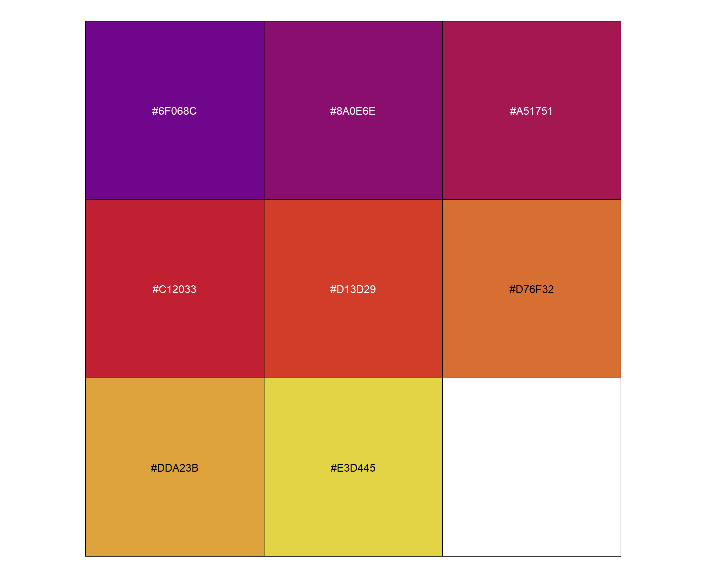
ggplot(df_out,aes(x=PC1,y=PC2))+
theme(plot.title = element_text(size = 20,hjust = 0.5, face="bold")) +
geom_point(size = 5, aes(shape=depth, col=time))+
# geom_point(size = 5,stroke = 1.3, shape=21, aes(fill=depth))+
# scale_color_discrete() +
scale_color_manual(values=purple_yellow) +
xlab(paste0('\n PC1', " (explained variance: ",round(eigs[1] / sum(eigs),3)*100,"%)"))+
ylab(paste0("PC2"," (explained variance: ",round(eigs[2] / sum(eigs),3)*100,"%) \n")) +
ggtitle("Principle component analysis plot for samples \n") +
## adjust positions
guides(fill = guide_legend(nrow = 2,reverse = T))+
theme(legend.position="bottom") +
theme(plot.title = element_text(size = 20,hjust = 0.5, face='bold')) +
theme(axis.title.x = element_text(size = 15,hjust = 0.5, face='bold')) +
theme(axis.title.y = element_text(size = 15,hjust = 0.5, face='bold')) +
theme(axis.text.x = element_text(angle = 90, hjust = 0.95,face='bold', vjust=0.4,size=15))+
theme(axis.text.y = element_text(size=15, face='bold'))
# ggrepel::geom_label_repel()6. RAIN analysis (Rhythmicity Analysis Incorporating Non-parametric methods)
6.1. Checking the abundance_ratio distribution of peptides in each sample
- Peptide level histograms
# function to plot histogram
hist_abundance_ratio <- function(depth="SRF",time="T1"){
df_ave_SRF_T1 <- df_ave %>% filter(Time==time & Depth ==depth)
theme_set(theme_bw())
h1 <- ggplot(df_ave_SRF_T1, aes(x=Mean_abundance_ratio)) +
geom_freqpoly(binwidth = 0.05, aes(color=Replicate)) +
scale_fill_brewer(palette='Set2') +
ylab("Mean protein abundance ratio (log2(16O/18O)) \n") +
xlab("\n Frequency of ratio") +
ggtitle(paste0("Histogram of sample (",depth,"-",time,") \n"))+
## adjust positions
theme(plot.title = element_text(size = 20,hjust = 0.5, family="serif")) +
theme(axis.title.x = element_text(size = 15,hjust = 0.5, family="serif")) +
theme(axis.title.y = element_text(size = 15,hjust = 0.5, family="serif")) +
theme(axis.text.x = element_text(angle = 90, hjust = 0.5, vjust=0.3,size=13, family="serif"))+
theme(axis.text.y = element_text(size=10))
# theme(panel.grid.major = element_blank())
# theme(panel.grid.minor = element_blank())
return(h1)
}
hist_abundance_ratio(depth="SRF",time="T1")
hist_abundance_ratio(depth="SRF",time="T2")
hist_abundance_ratio(depth="SRF",time="T3")hist_abundance_ratio(depth="SRF",time="T4")
hist_abundance_ratio(depth="SRF",time="T5")hist_abundance_ratio(depth="SRF",time="T6")
hist_abundance_ratio(depth="SRF",time="T7")hist_abundance_ratio(depth="SRF",time="T8")# draw histogram in multigrids
library(gridExtra)
paste0("T",1L:8L)[1] "T1" "T2" "T3" "T4" "T5" "T6" "T7" "T8"l <- list()
for (i in paste0("T",1L:8L)){
print(i)
l[[i]] <- hist_abundance_ratio(depth="SRF",time=i)
}[1] "T1"
[1] "T2"
[1] "T3"
[1] "T4"
[1] "T5"
[1] "T6"
[1] "T7"
[1] "T8"length(l)[1] 8grid.arrange(grobs = l, ncol=3)
- Spectra level histograms
# function to plot histogram
hist_abundance_ratio_spec <- function(depth="SRF",time="T1"){
df_int_SRF_T1 <- df_int %>% filter(Time==time & Depth ==depth) %>% select(-Peptide_id)
theme_set(theme_bw())
h1 <- ggplot(df_int_SRF_T1, aes(x=cent.log2.16O.18O.Ratio)) +
geom_freqpoly(binwidth = 0.05, aes(color=Replicate)) +
scale_fill_brewer(palette='Set2') +
ylab("Centered log2(16O/18O) ratio \n") +
xlab("\n Frequency of ratio (Spec-level)") +
ggtitle(paste0("Histogram of sample (",depth,"-",time,") \n"))+
## adjust positions
theme(plot.title = element_text(size = 20,hjust = 0.5, family="serif")) +
theme(axis.title.x = element_text(size = 15,hjust = 0.5, family="serif")) +
theme(axis.title.y = element_text(size = 15,hjust = 0.5, family="serif")) +
theme(axis.text.x = element_text(angle = 90, hjust = 0.5, vjust=0.3,size=13, family="serif"))+
theme(axis.text.y = element_text(size=10))
# theme(panel.grid.major = element_blank())
# theme(panel.grid.minor = element_blank())
return(h1)
}
hist_abundance_ratio_spec(depth="SRF",time="T1")
hist_abundance_ratio_spec(depth="SRF",time="T2")
hist_abundance_ratio_spec(depth="SRF",time="T3")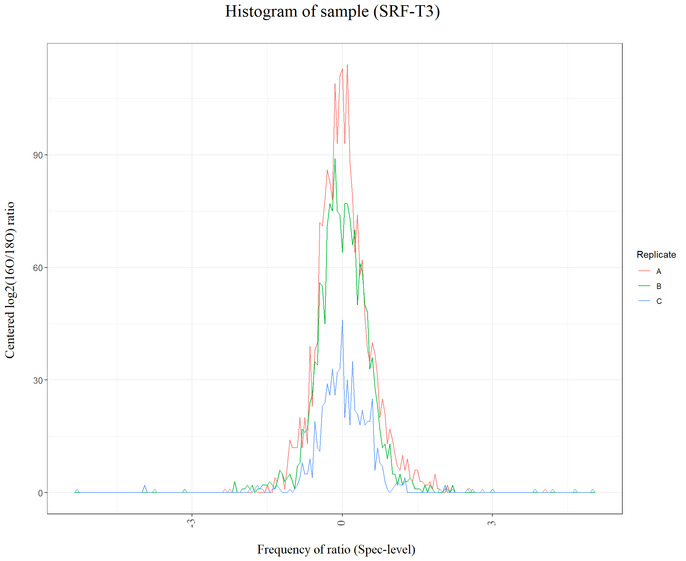
hist_abundance_ratio_spec(depth="SRF",time="T4")hist_abundance_ratio_spec(depth="SRF",time="T5")
hist_abundance_ratio_spec(depth="SRF",time="T6")
hist_abundance_ratio_spec(depth="SRF",time="T7")
hist_abundance_ratio_spec(depth="SRF",time="T8")
# draw histogram in multigrids
library(gridExtra)
paste0("T",1L:8L)[1] "T1" "T2" "T3" "T4" "T5" "T6" "T7" "T8"l <- list()
for (i in paste0("T",1L:8L)){
print(i)
l[[i]] <- hist_abundance_ratio_spec(depth="SRF",time=i)
}[1] "T1"
[1] "T2"
[1] "T3"
[1] "T4"
[1] "T5"
[1] "T6"
[1] "T7"
[1] "T8"length(l)[1] 8grid.arrange(grobs = l, ncol=3)6.2. Applying rain analysis
# setting our data into input format
df_8_S <- df_filt8 %>% filter(Depth=='SRF') %>% select(Peptide_id,Time,Ave_abundance_ratio)
# reshape the dataframe with timepoints
library(maditr)
v_names <- c("T1","T2","T3","T4","T5","T6","T7","T8")
df_8_S$Time <- factor(df_8_S$Time, levels=v_names)
dc_8 <- dcast(df_8_S, Peptide_id ~ Time, value.var = "Ave_abundance_ratio")
# make Peptide_id more simpler (Pep_1 -> 1)
dc_8$Peptide_id <- str_replace(dc_8$Peptide_id,"Pep_","P.")
# make first column into row name
dc_8 <- tibble::column_to_rownames(dc_8, var="Peptide_id")
# t(dc_8) %>% head
# setup time vector for RAIN (source: Maria's code provided to me 3/3/21)
# The following code gives a vector where the times given in "t" are represented by a 1 in the vector "ft".
# The time series in question lasted 84 hours and sampling times were every 4 hours, so the
# vector "ft" gives a 1 for each hour representing a sampling time, and ft could is a vector of 12 1's and deltat=4 in the RAIN call below.
t <- c(0, 3, 6, 9, 15, 19, 22, 25)
(t <- t+1) # start from 1[1] 1 4 7 10 16 20 23 26# If the time series is not equally spaced it can be regularized by introducing time points with
# zero repeats. This may be combined with any of the above repeat settings.
# Example: A series measured at times {1, 3, 4, 6} is usable with the measure.sequence
# {1, 0, 1, 1, 0, 1} and a matrix x
t <- c(1,0,0,1,0,0,1,0,0,1,0,0,0,0,0,1,0,0,0,1,0,0,1,0,0,1) # adjusted for irregular repeats
# RAIN analysis
library(rain)
rainresult <- rain(t(dc_8), period=8, measure.sequence=t, deltat=1, method='independent')
# According to the original paper, adjusting p-values for multiple testing is not necessary (already done in the output): https://www.ncbi.nlm.nih.gov/pmc/articles/PMC4266694/
# rainresult$fdr <- p.adjust(as.numeric(rainresult$pVal), method="fdr")
# pVal cut off 0.25
dim(rainresult)[1] 532 4rainresult %>% filter(pVal < 0.25) pVal phase peak.shape period
P.103 0.037634409 1 3 8
P.113 0.118811881 3 5 8
P.114 0.202349583 7 4 8
P.117 0.172174840 2 5 8
P.123 0.020815812 7 3 8
P.130 0.188603869 2 6 8
P.149 0.206451613 2 6 8
P.152 0.047939445 2 6 8
P.160 0.191699605 4 4 8
P.161 0.159587889 1 6 8
P.170 0.193439865 1 6 8
P.173 0.005444327 7 3 8
P.18 0.198924731 8 6 8
P.188 0.201713028 8 2 8
P.190 0.114922207 1 6 8
P.213 0.224474348 2 4 8
P.22 0.002342263 4 3 8
P.227 0.005971198 2 5 8
P.253 0.118811881 8 3 8
P.254 0.239855072 3 4 8
P.259 0.214521452 7 2 8
P.262 0.220021075 2 4 8
P.268 0.047284439 6 6 8
P.27 0.055081734 7 3 8
P.272 0.079569892 3 6 8
P.281 0.174095879 1 6 8
P.287 0.202349583 7 4 8
P.29 0.214521452 1 3 8
P.294 0.108910891 8 3 8
P.298 0.047284439 4 3 8
P.30 0.173181710 7 4 8
P.302 0.062189055 7 3 8
P.305 0.074257426 4 4 8
P.314 0.180403701 8 6 8
P.315 0.087047939 3 5 8
P.34 0.017590618 5 5 8
P.344 0.054455446 8 4 8
P.361 0.047939445 8 2 8
P.374 0.005444327 7 3 8
P.397 0.005619951 2 5 8
P.4 0.037634409 8 6 8
P.41 0.209677419 5 3 8
P.410 0.125603865 6 6 8
P.416 0.075436115 2 4 8
P.421 0.155844156 7 3 8
P.443 0.151279318 3 4 8
P.445 0.118811881 3 5 8
P.447 0.055081734 7 3 8
P.463 0.078500707 4 4 8
P.47 0.118279570 4 4 8
P.474 0.193439865 1 6 8
P.481 0.134115139 2 5 8
P.49 0.122383253 6 6 8
P.491 0.206859972 6 6 8
P.507 0.155844156 2 5 8
P.539 0.155844156 2 5 8
P.555 0.214521452 1 6 8
P.58 0.186374616 8 4 8
P.592 0.156765677 4 5 8
P.594 0.156765677 1 3 8
P.595 0.012082445 7 3 8
P.638 0.120129870 5 6 8
P.674 0.047939445 2 6 8
P.68 0.235607676 7 3 8
P.69 0.144839701 4 4 8
P.705 0.174257426 2 4 8
P.719 0.079793944 8 3 8
P.836 0.174095879 8 2 8
P.88 0.134115139 7 3 8rainresult %>% filter(pVal < 0.25) %>% dim() # 69 peptides[1] 69 4# pVal cut off 0.15
rainresult %>% filter(pVal < 0.15) pVal phase peak.shape period
P.103 0.037634409 1 3 8
P.113 0.118811881 3 5 8
P.123 0.020815812 7 3 8
P.152 0.047939445 2 6 8
P.173 0.005444327 7 3 8
P.190 0.114922207 1 6 8
P.22 0.002342263 4 3 8
P.227 0.005971198 2 5 8
P.253 0.118811881 8 3 8
P.268 0.047284439 6 6 8
P.27 0.055081734 7 3 8
P.272 0.079569892 3 6 8
P.294 0.108910891 8 3 8
P.298 0.047284439 4 3 8
P.302 0.062189055 7 3 8
P.305 0.074257426 4 4 8
P.315 0.087047939 3 5 8
P.34 0.017590618 5 5 8
P.344 0.054455446 8 4 8
P.361 0.047939445 8 2 8
P.374 0.005444327 7 3 8
P.397 0.005619951 2 5 8
P.4 0.037634409 8 6 8
P.410 0.125603865 6 6 8
P.416 0.075436115 2 4 8
P.445 0.118811881 3 5 8
P.447 0.055081734 7 3 8
P.463 0.078500707 4 4 8
P.47 0.118279570 4 4 8
P.481 0.134115139 2 5 8
P.49 0.122383253 6 6 8
P.595 0.012082445 7 3 8
P.638 0.120129870 5 6 8
P.674 0.047939445 2 6 8
P.69 0.144839701 4 4 8
P.719 0.079793944 8 3 8
P.88 0.134115139 7 3 8rainresult %>% filter(pVal < 0.15) %>% dim() # 37 peptides[1] 37 4# rain analysis function
rain_analysis <- function(df_filt8,depth="SRF"){
# setting our data into input format
df_8 <- df_filt8 %>% filter(Depth==depth) %>% select(Peptide_id,Time,Ave_abundance_ratio)
# reshape the dataframe with timepoints
library(maditr)
v_names <- c("T1","T2","T3","T4","T5","T6","T7","T8")
df_8$Time <- factor(df_8$Time, levels=v_names)
dc_8 <- dcast(df_8, Peptide_id ~ Time, value.var = "Ave_abundance_ratio")
# make Peptide_id more simpler (Pep_1 -> 1)
dc_8$Peptide_id <- str_replace(dc_8$Peptide_id,"Pep_","P.")
# make first column into row name
dc_8 <- tibble::column_to_rownames(dc_8, var="Peptide_id")
t <- c(1,0,0,1,0,0,1,0,0,1,0,0,0,0,0,1,0,0,0,1,0,0,1,0,0,1) # adjusted for irregular repeats
# RAIN analysis
library(rain)
rainresult <- rain(t(dc_8), period=8, measure.sequence=t, deltat=1, method='independent')
return(rainresult)
}6.3. RAIN - p_value and peak timepoint: Surface / DCL / BDCL
# function to plot p-value
time_series_pvalue <- function(df_filt8,depth="SRF",threshold=0.25){
rain_SRF8 <-rain_analysis(df_filt8,depth=depth)
print(sum(rain_SRF8$pVal<=threshold))
plot((rain_SRF8$pVal) ~ rain_SRF8$phase, xlab="Peak timepoint (Sampling order #)", ylab="p-value",main=paste0("Rhythmic peptides (",depth,")"),cex=2,cex.lab=2, cex.main=2,cex.axis=1.6)
points(rain_SRF8$pVal[rain_SRF8$pVal<=threshold] ~ rain_SRF8$phase[rain_SRF8$pVal<=threshold], col="red",cex=2)
abline(h=threshold, col="red")
}
time_series_pvalue(df_filt8,depth="SRF",threshold=0.25)[1] 69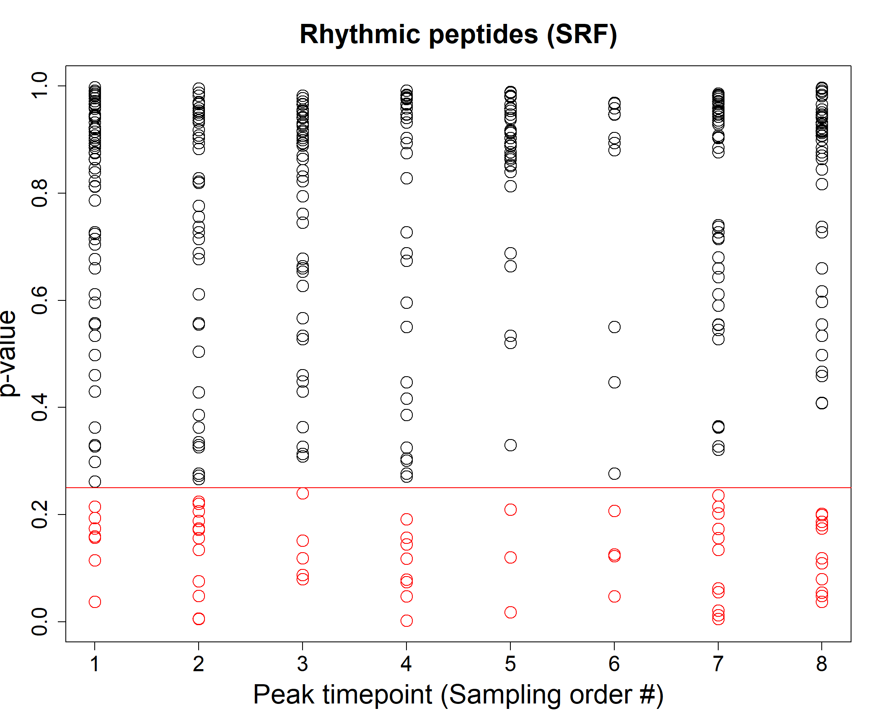
time_series_pvalue(df_filt8,depth="DCL",threshold=0.25)[1] 52
time_series_pvalue(df_filt8,depth="BDCL",threshold=0.25)[1] 56
# draw plots in multigrids
par(mfrow = c(1, 3))
# filtered for 8 timepoint appearing peptides
for (i in 1:length(depth_vec)){
time_series_pvalue(df_filt8,depth=depth_vec[i],threshold=0.25)
}[1] 69[1] 52[1] 56
# filtered for 7, 8 timepoint appearing peptides
for (i in 1:length(depth_vec)){
time_series_pvalue(df_filt78,depth=depth_vec[i],threshold=0.25)
}[1] 70[1] 52[1] 56
# change the threshold to 0.15
for (i in 1:length(depth_vec)){
time_series_pvalue(df_filt8,depth=depth_vec[i],threshold=0.15)
}[1] 37[1] 32[1] 30
for (i in 1:length(depth_vec)){
time_series_pvalue(df_filt78,depth=depth_vec[i],threshold=0.15)
}[1] 38[1] 32[1] 30
dev.off()null device
1 6.4. Rhythmic peptide’s peak time distribution
rain_SRF8 <- rain_analysis(df_filt8,depth="SRF") %>% mutate(Depth="SRF") %>% tibble::rownames_to_column(var = "Peptide_id")
rain_DCL8 <- rain_analysis(df_filt8,depth="DCL") %>% mutate(Depth="DCL") %>% tibble::rownames_to_column(var = "Peptide_id")
rain_BDCL8 <- rain_analysis(df_filt8,depth="BDCL") %>% mutate(Depth="BDCL") %>% tibble::rownames_to_column(var = "Peptide_id")
dim(rain_SRF8)[1] 532 6dim(rain_DCL8)[1] 426 6dim(rain_BDCL8)[1] 392 6rain_8 <- rbind(rain_SRF8, rain_DCL8) %>% rbind(rain_BDCL8)
dim(rain_8)[1] 1350 6tail(rain_8) Peptide_id pVal phase peak.shape period Depth
1345 P.94 0.8856815 5 4 8 BDCL
1346 P.95 0.5550883 2 6 8 BDCL
1347 P.96 0.3677419 8 3 8 BDCL
1348 P.97 0.9813643 5 4 8 BDCL
1349 P.98 0.7149758 3 4 8 BDCL
1350 P.99 0.8762820 2 6 8 BDCLrain_sig <- rain_8 %>% filter(pVal <= 0.25)
rain_sig$Depth <- factor(rain_sig$Depth, levels=depth_vec)
ggplot(rain_sig, aes(x=phase)) +
geom_freqpoly(binwidth = 1, aes(color=Depth), size=1.5) +
# geom_histogram(binwidth = 1, position="dodge", aes(fill=Depth)) +
scale_color_manual(values=cols) +
ylab("Rhythmic peptide frequency \n") +
# xlab("\n Peak timepoint (Sampling order #)") +
xlab("\n Time of day on June 26-27 2019 (Daylight 05:17-20:30)") +
scale_x_continuous(breaks=seq(1,8,1),labels =c(df_time$date_time))+
ggtitle(paste0("Histogram of peak time \n"))+
# scale_x_continuous(breaks=seq(1,8,1)) +
## adjust positions
theme(plot.title = element_text(size = 20,hjust = 0.5, family="serif")) +
theme(axis.title.x = element_text(size = 15,hjust = 0.5, family="serif")) +
theme(axis.title.y = element_text(size = 15,hjust = 0.5, family="serif")) +
theme(axis.text.x = element_text(hjust = 0.9, vjust=0.9,angle=40,size=13, family="serif"))+
theme(axis.text.y = element_text(size=10)) +
annotate("rect", xmin = 3.6, xmax = 5.35, ymin = -Inf, ymax = Inf, alpha = .2) +
theme(panel.grid.minor = element_blank())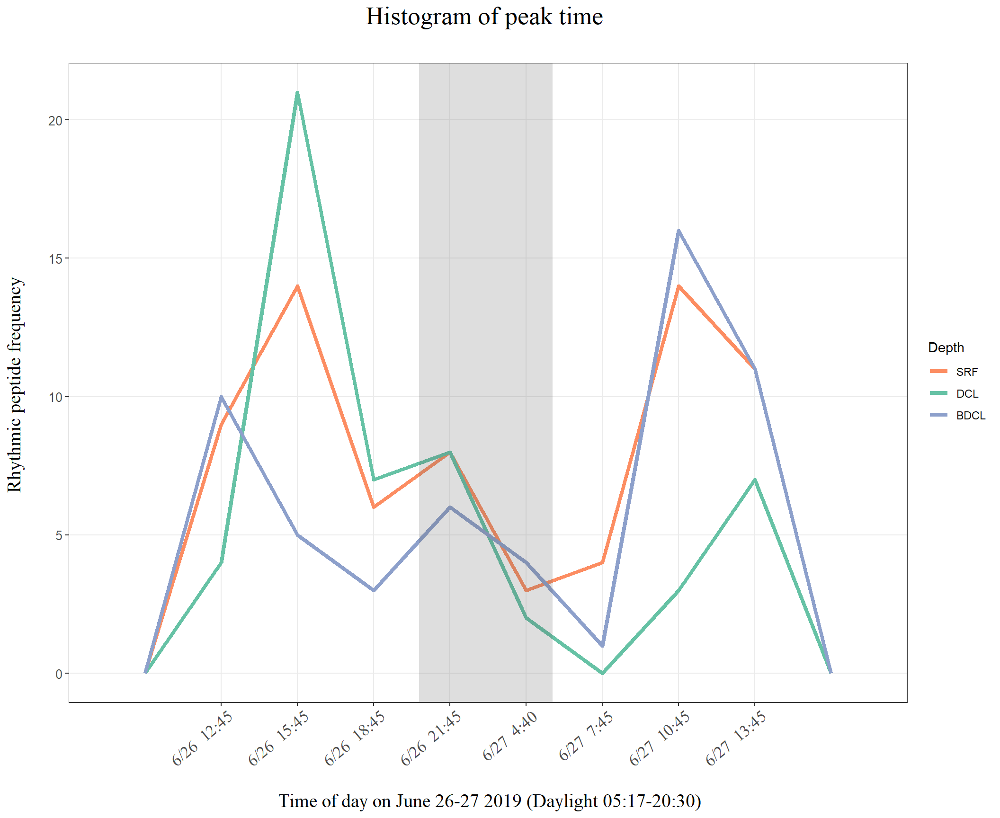
# theme(panel.grid.major = element_blank())6.5. Plotting rhythmic peptides sorted by peak time
# Shaping data
rain_sig1 <- rain_8 %>% filter(pVal <= 0.25)
rain_sig1$Peptide_id <- str_replace(rain_sig1$Peptide_id,"P.","Pep_")
rain_sig1$phase <- str_replace(rain_sig1$phase,"^","T")
rain_sig2 <- rain_sig1 %>% rename(Time = phase) %>% select(-period)
# rain_sig2 %>% arrange(Peptide_id)
# plot
time_series_1depth_1peaktime <- function(df_filt8,n=1,rain_sig2,time="T1"){
peak_T1 <- rain_sig2 %>% filter(Time==time,Depth==depth_vec[n]) %>% select(Peptide_id)
print(length(peak_T1$Peptide_id))
time_series_clust_wError(df_filt8, n, peak_T1$Peptide_id) +
ggtitle(paste0("Peptides with peak time ",time))+
theme(axis.title.x = element_text(size = 10,hjust = 0.5, family="serif")) +
theme(axis.title.y = element_text(size = 10,hjust = 0.5, family="serif"))
}
# draw histogram in multigrids
library(gridExtra)
# (1) Surface
l <- list()
for (i in paste0("T",1L:8L)){
print(i)
l[[i]] <- time_series_1depth_1peaktime(df_filt8,n=1,rain_sig2,time=i)
}[1] "T1"
[1] 9
[1] "T2"
[1] 14
[1] "T3"
[1] 6
[1] "T4"
[1] 8
[1] "T5"
[1] 3
[1] "T6"
[1] 4
[1] "T7"
[1] 14
[1] "T8"
[1] 11length(l)[1] 8grid.arrange(grobs = l, ncol=4)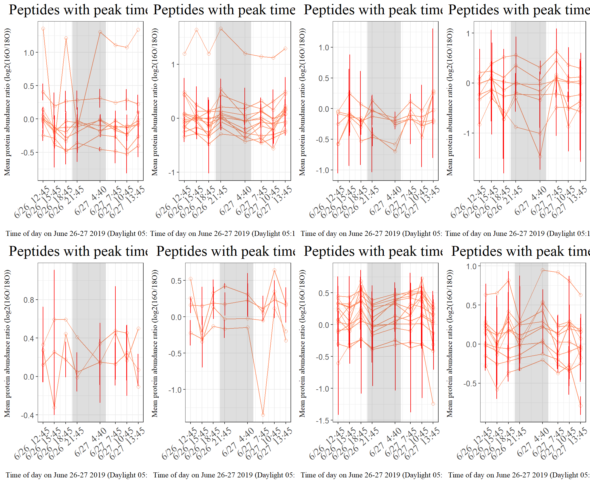
# (2) DCL
l <- list()
for (i in paste0("T",1L:8L)){
print(i)
l[[i]] <- time_series_1depth_1peaktime(df_filt8,n=2,rain_sig2,time=i)
}[1] "T1"
[1] 4
[1] "T2"
[1] 21
[1] "T3"
[1] 7
[1] "T4"
[1] 8
[1] "T5"
[1] 2
[1] "T6"
[1] 0
[1] "T7"
[1] 3
[1] "T8"
[1] 7length(l)[1] 8grid.arrange(grobs = l, ncol=4)
# (3) BDCL
l <- list()
for (i in paste0("T",1L:8L)){
print(i)
l[[i]] <- time_series_1depth_1peaktime(df_filt8,n=3,rain_sig2,time=i)
}[1] "T1"
[1] 10
[1] "T2"
[1] 5
[1] "T3"
[1] 3
[1] "T4"
[1] 6
[1] "T5"
[1] 4
[1] "T6"
[1] 1
[1] "T7"
[1] 16
[1] "T8"
[1] 11length(l)[1] 8grid.arrange(grobs = l, ncol=4)
6.6. Sorting peak by local maxima, minima
head(rain_sig2) Peptide_id pVal Time peak.shape Depth
1 Pep_103 0.03763441 T1 3 SRF
2 Pep_113 0.11881188 T3 5 SRF
3 Pep_114 0.20234958 T7 4 SRF
4 Pep_117 0.17217484 T2 5 SRF
5 Pep_123 0.02081581 T7 3 SRF
6 Pep_130 0.18860387 T2 6 SRFdim(rain_sig2)[1] 177 5dim(df_ave_rep)[1] 24109 5colnames(rain_sig2)[1] "Peptide_id" "pVal" "Time" "peak.shape" "Depth" colnames(df_ave_rep)[1] "Time" "Depth" "Peptide_id"
[4] "Ave_abundance_ratio" "SE_abundance_ratio" head(df_sig_time)Error in head(df_sig_time): object 'df_sig_time' not foundpeak_up_down_assign <- function(rain_sig2,df_ave_rep){
# Prepare reference dataframe
rain_sig2$Time <- str_replace(rain_sig2$Time,"T","")
rain_sig2 %>% arrange(Peptide_id,Depth)
sig_list <- unique(rain_sig2$Peptide_id)
df_sig_time <- df_ave_rep %>% filter(Peptide_id %in% sig_list) %>% arrange(Peptide_id, Depth)
df_sig_time$Time <- str_replace(df_sig_time$Time,"T","")
# Make Storing dataframe
sig_stor <- rain_sig2 %>% select(Peptide_id, Depth, Time,pVal) %>% unique() %>% arrange(Peptide_id,Depth)
sig_stor$peak_type <- NA
# for loop for every peptide
for (i in 1:nrow(sig_stor)){
# print(i)
# print(sig_stor$Peptide_id[i])
# print(sig_stor$Depth[i])
# i <- 3
id <- sig_stor$Peptide_id[i]
dp <- sig_stor$Depth[i]
tm <- sig_stor$Time[i]
# id <- "Pep_1027"
print(paste0("----",id," : ",dp,"----"))
df_id_dp <- df_sig_time[df_sig_time$Peptide_id==id & df_sig_time$Depth==dp,]
if (tm==1){ # when peak is allegedly T1
ratio_1 <- df_id_dp[df_id_dp$Time==1,]$Ave_abundance_ratio
ratio_2 <- df_id_dp[df_id_dp$Time==2,]$Ave_abundance_ratio
if (ratio_1 > ratio_2){
sig_stor[sig_stor$Peptide_id==id & sig_stor$Depth==dp,]$peak_type <- "Up"
} else if (ratio_1 < ratio_2){
sig_stor[sig_stor$Peptide_id==id & sig_stor$Depth==dp,]$peak_type <- "Down"
} else{
sig_stor[sig_stor$Peptide_id==id & sig_stor$Depth==dp,]$peak_type <- "Neither"
} # when peak is allegedly T1 (close)
} else if (tm==8){ # when peak is allegedly T8
ratio_7 <- df_id_dp[df_id_dp$Time==7,]$Ave_abundance_ratio
ratio_8 <- df_id_dp[df_id_dp$Time==8,]$Ave_abundance_ratio
if (ratio_8 > ratio_7){
sig_stor[sig_stor$Peptide_id==id & sig_stor$Depth==dp,]$peak_type <- "Up"
# print("Up")
} else if (ratio_8 < ratio_7){
sig_stor[sig_stor$Peptide_id==id & sig_stor$Depth==dp,]$peak_type <- "Down"
# print("Down")
} else{
sig_stor[sig_stor$Peptide_id==id & sig_stor$Depth==dp,]$peak_type <- "Neither"
# print("Neither")
} # when peak is allegedly T8 (close)
} else{ # when peak is alledgedly between T2 and T7
ileft = as.numeric(tm)-1
iright = as.numeric(tm)+1
ratio_ileft <- df_id_dp[df_id_dp$Time== ileft,]$Ave_abundance_ratio
ratio_i <- df_id_dp[df_id_dp$Time==tm,]$Ave_abundance_ratio
ratio_iright <- df_id_dp[df_id_dp$Time== iright,]$Ave_abundance_ratio
max_ratio = max(ratio_ileft,ratio_i,ratio_iright)
min_ratio = min(ratio_ileft,ratio_i,ratio_iright)
if (ratio_i == max_ratio){
print(paste0("Maximum? ",(ratio_i == max_ratio)))
sig_stor[sig_stor$Peptide_id==id & sig_stor$Depth==dp,]$peak_type <- "Up"
} else if (ratio_i == min_ratio){
print(paste0("Minimum? ",(ratio_i == min_ratio)))
sig_stor[sig_stor$Peptide_id==id & sig_stor$Depth==dp,]$peak_type <- "Down"
} else{
print("This is not a peak")
sig_stor[sig_stor$Peptide_id==id & sig_stor$Depth==dp,]$peak_type <- "Neither"
} # when peak is alledgedly between T2 and T7 (close)
}
}
return(sig_stor)
}
sig_stor <- peak_up_down_assign(rain_sig2,df_ave_rep)[1] "----Pep_1 : BDCL----"
[1] "Maximum? TRUE"
[1] "----Pep_103 : SRF----"
[1] "----Pep_105 : DCL----"
[1] "This is not a peak"
[1] "----Pep_113 : SRF----"
[1] "This is not a peak"
[1] "----Pep_114 : SRF----"
[1] "Maximum? TRUE"
[1] "----Pep_117 : SRF----"
[1] "Minimum? TRUE"
[1] "----Pep_122 : DCL----"
[1] "This is not a peak"
[1] "----Pep_123 : SRF----"
[1] "Maximum? TRUE"
[1] "----Pep_127 : DCL----"
[1] "Maximum? TRUE"
[1] "----Pep_130 : SRF----"
[1] "Maximum? TRUE"
[1] "----Pep_136 : DCL----"
[1] "Maximum? TRUE"
[1] "----Pep_137 : DCL----"
[1] "This is not a peak"
[1] "----Pep_139 : BDCL----"
[1] "This is not a peak"
[1] "----Pep_14 : BDCL----"
[1] "Maximum? TRUE"
[1] "----Pep_141 : DCL----"
[1] "Maximum? TRUE"
[1] "----Pep_142 : BDCL----"
[1] "This is not a peak"
[1] "----Pep_142 : DCL----"
[1] "This is not a peak"
[1] "----Pep_143 : DCL----"
[1] "This is not a peak"
[1] "----Pep_148 : BDCL----"
[1] "Maximum? TRUE"
[1] "----Pep_149 : SRF----"
[1] "This is not a peak"
[1] "----Pep_152 : SRF----"
[1] "Maximum? TRUE"
[1] "----Pep_159 : DCL----"
[1] "Minimum? TRUE"
[1] "----Pep_160 : BDCL----"
[1] "----Pep_160 : SRF----"
[1] "Maximum? TRUE"
[1] "----Pep_161 : SRF----"
[1] "----Pep_164 : DCL----"
[1] "This is not a peak"
[1] "----Pep_165 : BDCL----"
[1] "This is not a peak"
[1] "----Pep_17 : BDCL----"
[1] "Maximum? TRUE"
[1] "----Pep_170 : SRF----"
[1] "----Pep_171 : DCL----"
[1] "This is not a peak"
[1] "----Pep_173 : SRF----"
[1] "Maximum? TRUE"
[1] "----Pep_176 : BDCL----"
[1] "----Pep_18 : SRF----"
[1] "----Pep_180 : BDCL----"
[1] "----Pep_183 : BDCL----"
[1] "Maximum? TRUE"
[1] "----Pep_184 : BDCL----"
[1] "Maximum? TRUE"
[1] "----Pep_187 : DCL----"
[1] "Maximum? TRUE"
[1] "----Pep_188 : SRF----"
[1] "----Pep_189 : DCL----"
[1] "Minimum? TRUE"
[1] "----Pep_190 : SRF----"
[1] "----Pep_193 : BDCL----"
[1] "Minimum? TRUE"
[1] "----Pep_194 : BDCL----"
[1] "Maximum? TRUE"
[1] "----Pep_198 : BDCL----"
[1] "Maximum? TRUE"
[1] "----Pep_2 : BDCL----"
[1] "----Pep_20 : BDCL----"
[1] "This is not a peak"
[1] "----Pep_213 : DCL----"
[1] "Maximum? TRUE"
[1] "----Pep_213 : SRF----"
[1] "This is not a peak"
[1] "----Pep_215 : BDCL----"
[1] "----Pep_217 : DCL----"
[1] "Minimum? TRUE"
[1] "----Pep_22 : SRF----"
[1] "Maximum? TRUE"
[1] "----Pep_224 : BDCL----"
[1] "----Pep_227 : SRF----"
[1] "This is not a peak"
[1] "----Pep_228 : BDCL----"
[1] "----Pep_228 : DCL----"
[1] "----Pep_235 : DCL----"
[1] "----Pep_237 : DCL----"
[1] "This is not a peak"
[1] "----Pep_238 : DCL----"
[1] "This is not a peak"
[1] "----Pep_24 : BDCL----"
[1] "This is not a peak"
[1] "----Pep_247 : DCL----"
[1] "This is not a peak"
[1] "----Pep_248 : BDCL----"
[1] "----Pep_249 : DCL----"
[1] "Minimum? TRUE"
[1] "----Pep_250 : BDCL----"
[1] "Minimum? TRUE"
[1] "----Pep_250 : DCL----"
[1] "Minimum? TRUE"
[1] "----Pep_253 : BDCL----"
[1] "This is not a peak"
[1] "----Pep_253 : SRF----"
[1] "----Pep_254 : SRF----"
[1] "Minimum? TRUE"
[1] "----Pep_255 : BDCL----"
[1] "----Pep_255 : DCL----"
[1] "Maximum? TRUE"
[1] "----Pep_259 : SRF----"
[1] "This is not a peak"
[1] "----Pep_262 : DCL----"
[1] "----Pep_262 : SRF----"
[1] "Maximum? TRUE"
[1] "----Pep_268 : SRF----"
[1] "Minimum? TRUE"
[1] "----Pep_269 : BDCL----"
[1] "----Pep_27 : SRF----"
[1] "Maximum? TRUE"
[1] "----Pep_272 : SRF----"
[1] "Minimum? TRUE"
[1] "----Pep_276 : DCL----"
[1] "This is not a peak"
[1] "----Pep_28 : DCL----"
[1] "This is not a peak"
[1] "----Pep_280 : DCL----"
[1] "Minimum? TRUE"
[1] "----Pep_281 : SRF----"
[1] "----Pep_282 : BDCL----"
[1] "----Pep_282 : DCL----"
[1] "Minimum? TRUE"
[1] "----Pep_283 : BDCL----"
[1] "----Pep_287 : SRF----"
[1] "Maximum? TRUE"
[1] "----Pep_29 : SRF----"
[1] "----Pep_291 : DCL----"
[1] "This is not a peak"
[1] "----Pep_294 : DCL----"
[1] "This is not a peak"
[1] "----Pep_294 : SRF----"
[1] "----Pep_295 : DCL----"
[1] "This is not a peak"
[1] "----Pep_297 : DCL----"
[1] "----Pep_298 : SRF----"
[1] "Maximum? TRUE"
[1] "----Pep_30 : SRF----"
[1] "Maximum? TRUE"
[1] "----Pep_301 : BDCL----"
[1] "Maximum? TRUE"
[1] "----Pep_302 : SRF----"
[1] "Maximum? TRUE"
[1] "----Pep_305 : SRF----"
[1] "This is not a peak"
[1] "----Pep_314 : SRF----"
[1] "----Pep_315 : SRF----"
[1] "Minimum? TRUE"
[1] "----Pep_319 : BDCL----"
[1] "Maximum? TRUE"
[1] "----Pep_320 : BDCL----"
[1] "----Pep_326 : BDCL----"
[1] "----Pep_332 : BDCL----"
[1] "----Pep_337 : BDCL----"
[1] "Maximum? TRUE"
[1] "----Pep_34 : SRF----"
[1] "Maximum? TRUE"
[1] "----Pep_342 : DCL----"
[1] "Maximum? TRUE"
[1] "----Pep_344 : SRF----"
[1] "----Pep_354 : BDCL----"
[1] "Maximum? TRUE"
[1] "----Pep_361 : SRF----"
[1] "----Pep_368 : DCL----"
[1] "----Pep_374 : SRF----"
[1] "Maximum? TRUE"
[1] "----Pep_375 : BDCL----"
[1] "----Pep_376 : DCL----"
[1] "Minimum? TRUE"
[1] "----Pep_377 : BDCL----"
[1] "----Pep_38 : BDCL----"
[1] "Minimum? TRUE"
[1] "----Pep_382 : BDCL----"
[1] "----Pep_394 : BDCL----"
[1] "This is not a peak"
[1] "----Pep_397 : SRF----"
[1] "This is not a peak"
[1] "----Pep_4 : SRF----"
[1] "----Pep_403 : BDCL----"
[1] "Maximum? TRUE"
[1] "----Pep_41 : BDCL----"
[1] "Minimum? TRUE"
[1] "----Pep_41 : SRF----"
[1] "Minimum? TRUE"
[1] "----Pep_410 : SRF----"
[1] "Minimum? TRUE"
[1] "----Pep_416 : SRF----"
[1] "This is not a peak"
[1] "----Pep_418 : DCL----"
[1] "----Pep_421 : SRF----"
[1] "This is not a peak"
[1] "----Pep_428 : BDCL----"
[1] "Minimum? TRUE"
[1] "----Pep_439 : DCL----"
[1] "Maximum? TRUE"
[1] "----Pep_443 : SRF----"
[1] "Minimum? TRUE"
[1] "----Pep_445 : SRF----"
[1] "This is not a peak"
[1] "----Pep_446 : DCL----"
[1] "This is not a peak"
[1] "----Pep_447 : SRF----"
[1] "Maximum? TRUE"
[1] "----Pep_452 : DCL----"
[1] "Minimum? TRUE"
[1] "----Pep_463 : SRF----"
[1] "Maximum? TRUE"
[1] "----Pep_469 : DCL----"
[1] "----Pep_47 : SRF----"
[1] "This is not a peak"
[1] "----Pep_474 : SRF----"
[1] "----Pep_478 : DCL----"
[1] "Minimum? TRUE"
[1] "----Pep_481 : BDCL----"
[1] "Minimum? TRUE"
[1] "----Pep_481 : SRF----"
[1] "This is not a peak"
[1] "----Pep_49 : SRF----"
[1] "Minimum? TRUE"
[1] "----Pep_491 : SRF----"
[1] "Minimum? TRUE"
[1] "----Pep_493 : BDCL----"
[1] "Maximum? TRUE"
[1] "----Pep_507 : SRF----"
[1] "Maximum? TRUE"
[1] "----Pep_52 : BDCL----"
[1] "Maximum? TRUE"
[1] "----Pep_520 : DCL----"
[1] "----Pep_539 : SRF----"
[1] "Maximum? TRUE"
[1] "----Pep_555 : SRF----"
[1] "----Pep_56 : BDCL----"
[1] "----Pep_58 : DCL----"
[1] "----Pep_58 : SRF----"
[1] "----Pep_586 : DCL----"
[1] "Maximum? TRUE"
[1] "----Pep_592 : SRF----"
[1] "Maximum? TRUE"
[1] "----Pep_594 : SRF----"
[1] "----Pep_595 : SRF----"
[1] "Maximum? TRUE"
[1] "----Pep_617 : DCL----"
[1] "----Pep_619 : BDCL----"
[1] "Minimum? TRUE"
[1] "----Pep_62 : BDCL----"
[1] "Maximum? TRUE"
[1] "----Pep_638 : SRF----"
[1] "This is not a peak"
[1] "----Pep_639 : BDCL----"
[1] "Maximum? TRUE"
[1] "----Pep_65 : DCL----"
[1] "Minimum? TRUE"
[1] "----Pep_671 : BDCL----"
[1] "Maximum? TRUE"
[1] "----Pep_674 : SRF----"
[1] "Maximum? TRUE"
[1] "----Pep_68 : SRF----"
[1] "This is not a peak"
[1] "----Pep_69 : SRF----"
[1] "Maximum? TRUE"
[1] "----Pep_705 : SRF----"
[1] "Minimum? TRUE"
[1] "----Pep_710 : BDCL----"
[1] "Minimum? TRUE"
[1] "----Pep_719 : SRF----"
[1] "----Pep_725 : BDCL----"
[1] "Maximum? TRUE"
[1] "----Pep_728 : BDCL----"
[1] "Minimum? TRUE"
[1] "----Pep_745 : DCL----"
[1] "----Pep_765 : DCL----"
[1] "Maximum? TRUE"
[1] "----Pep_769 : DCL----"
[1] "This is not a peak"
[1] "----Pep_836 : SRF----"
[1] "----Pep_88 : SRF----"
[1] "Maximum? TRUE"
[1] "----Pep_880 : BDCL----"
[1] "----Pep_89 : DCL----"
[1] "This is not a peak"
[1] "----Pep_9 : BDCL----"
[1] "----Pep_93 : DCL----"
[1] "This is not a peak"
[1] "----Pep_97 : DCL----"
[1] "Maximum? TRUE"sig_stor %>% filter(peak_type=="Neither") %>% nrow() # 40 out of 177 peptides were Neither Up or Down peaks[1] 40# save file
write.table(sig_stor,file='sig_stor.tsv', sep='\t',row.names = F)6.6.1. Plot up peaks only
# getting only the up-peaks
sig_up <- sig_stor %>% filter(peak_type == "Up") %>% arrange(Time)
sig_up$Time <- str_replace(sig_up$Time,"^","T")
# really seeing if that is true
# draw histogram in multigrids
library(gridExtra)
# (1) Surface
l <- list()
for (i in paste0("T",1L:8L)){
print(i)
l[[i]] <- time_series_1depth_1peaktime(df_filt8,n=1,sig_up,time=i)
}[1] "T1"
[1] 9
[1] "T2"
[1] 6
[1] "T3"
[1] 0
[1] "T4"
[1] 6
[1] "T5"
[1] 1
[1] "T6"
[1] 0
[1] "T7"
[1] 11
[1] "T8"
[1] 3length(l)[1] 8grid.arrange(grobs = l, ncol=4)# (2) DCL
l <- list()
for (i in paste0("T",1L:8L)){
print(i)
l[[i]] <- time_series_1depth_1peaktime(df_filt8,n=2,sig_up,time=i)
}[1] "T1"
[1] 4
[1] "T2"
[1] 6
[1] "T3"
[1] 0
[1] "T4"
[1] 2
[1] "T5"
[1] 1
[1] "T6"
[1] 0
[1] "T7"
[1] 2
[1] "T8"
[1] 2length(l)[1] 8grid.arrange(grobs = l, ncol=4)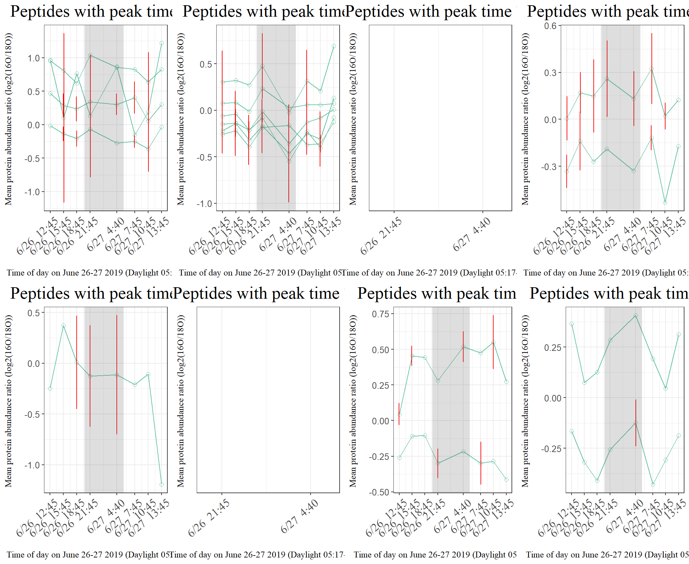
# (3) BDCL
l <- list()
for (i in paste0("T",1L:8L)){
print(i)
l[[i]] <- time_series_1depth_1peaktime(df_filt8,n=3,sig_up,time=i)
}[1] "T1"
[1] 10
[1] "T2"
[1] 3
[1] "T3"
[1] 0
[1] "T4"
[1] 3
[1] "T5"
[1] 0
[1] "T6"
[1] 0
[1] "T7"
[1] 13
[1] "T8"
[1] 2length(l)[1] 8grid.arrange(grobs = l, ncol=4)6.6.2. Plot down peaks (valleys) only
# getting only the up-peaks
sig_down <- sig_stor %>% filter(peak_type == "Down") %>% arrange(Time)
sig_down$Time <- str_replace(sig_down$Time,"^","T")
# really seeing if that is true
# draw histogram in multigrids
library(gridExtra)
# (1) Surface
l <- list()
for (i in paste0("T",1L:8L)){
print(i)
l[[i]] <- time_series_1depth_1peaktime(df_filt8,n=1,sig_down,time=i)
}[1] "T1"
[1] 0
[1] "T2"
[1] 2
[1] "T3"
[1] 4
[1] "T4"
[1] 0
[1] "T5"
[1] 1
[1] "T6"
[1] 4
[1] "T7"
[1] 0
[1] "T8"
[1] 8length(l)[1] 8grid.arrange(grobs = l, ncol=4)# (2) DCL
l <- list()
for (i in paste0("T",1L:8L)){
print(i)
l[[i]] <- time_series_1depth_1peaktime(df_filt8,n=2,sig_down,time=i)
}[1] "T1"
[1] 0
[1] "T2"
[1] 4
[1] "T3"
[1] 5
[1] "T4"
[1] 1
[1] "T5"
[1] 1
[1] "T6"
[1] 0
[1] "T7"
[1] 0
[1] "T8"
[1] 5length(l)[1] 8grid.arrange(grobs = l, ncol=4)
# (3) BDCL
l <- list()
for (i in paste0("T",1L:8L)){
print(i)
l[[i]] <- time_series_1depth_1peaktime(df_filt8,n=3,sig_down,time=i)
}[1] "T1"
[1] 0
[1] "T2"
[1] 1
[1] "T3"
[1] 3
[1] "T4"
[1] 2
[1] "T5"
[1] 2
[1] "T6"
[1] 1
[1] "T7"
[1] 0
[1] "T8"
[1] 9length(l)[1] 8grid.arrange(grobs = l, ncol=4)6.6.3. Rhythmic peptide’s peak time distribution (using only the real peaks (up))
# getting only the up-peaks
sig_peak <- sig_stor %>% filter(peak_type == "Up") %>% arrange(Time)
sig_peak$Depth <- factor(sig_peak$Depth, levels=depth_vec)
ggplot(sig_peak, aes(x=as.numeric(Time))) +
geom_freqpoly(binwidth = 1, aes(color=Depth), size=1.5) +
# geom_histogram(binwidth = 1, position="dodge", aes(fill=Depth)) +
scale_color_manual(values=cols) +
ylab("Rhythmic peptide frequency \n") +
# xlab("\n Peak timepoint (Sampling order #)") +
xlab("\n Time of day on June 26-27 2019 (Daylight 05:17-20:30)") +
scale_x_continuous(breaks=seq(1,8,1),labels =c(df_time$date_time))+
ggtitle(paste0("Histogram of peak time \n"))+
# scale_x_continuous(breaks=seq(1,8,1)) +
## adjust positions
theme(plot.title = element_text(size = 20,hjust = 0.5, family="serif")) +
theme(axis.title.x = element_text(size = 15,hjust = 0.5, family="serif")) +
theme(axis.title.y = element_text(size = 15,hjust = 0.5, family="serif")) +
theme(axis.text.x = element_text(hjust = 0.9, vjust=0.9,angle=40,size=13, family="serif"))+
theme(axis.text.y = element_text(size=10)) +
annotate("rect", xmin = 3.6, xmax = 5.35, ymin = -Inf, ymax = Inf, alpha = .2) +
theme(panel.grid.minor = element_blank()) # theme(panel.grid.major = element_blank())
sig_peak %>% group_by(Depth) %>% count()# A tibble: 3 x 2
# Groups: Depth [3]
Depth n
<fct> <int>
1 SRF 36
2 DCL 17
3 BDCL 31Archived: Not using this part
Approach2: Time Series Classification using Dynamic time warping distance Time series classification is to build a classification model based on labelled time series and then use the model to predict the label of unlabelled time series. The way for time series classification with R is to extract and build features from time series data first, and then apply existing classification techniques, such as SVM, k-NN, neural networks, regression and decision trees, to the feature set.
Discrete Wavelet Transform (DWT) provides a multi-resolution representation using wavelets and is used in the example below. Another popular feature extraction technique is Discrete Fourier Transform (DFT). (http://www.rdatamining.com/examples/time-series-clustering-classification)
# extracting DWT coefficients (with Haar filter)
library(wavelets)
wtData <- NULL
sc <- read.table("data/synthetic_control.data.txt", header=F, sep="")
for (i in 1:nrow(sc)){
a <- t(sc[i,])
wt <- dwt(a, filter="haar", boundary='periodic')
wtData <- rbind(wtData, unlist(c(wt@W,wt@V[[wt@level]])))
}
wtData <- as.data.frame(wtData)
head(wtData)
# set class labels into categorical values
classId <- c(rep(1,100), rep(2,100), rep(3,100),rep(4,100), rep(5,100), rep(6,100))
wtSc <- data.frame(cbind(classId, wtData))
# build a decision tree with ctree() in package party
library(party)
ct <- ctree(classId ~ ., data=wtSc, controls = ctree_control(minsplit=30, minbucket=10, maxdepth=5))
pClassId <- predict(ct)
# check predicted classes against original class labels
table(classId, pClassId)
# accuracy
(sum(classId==pClassId)) / nrow(wtSc)
plot(ct, ip_args=list(pval=FALSE), ep_args=list(digits=0))
# Lower CVI means better clustering : k_shape is the best clustering method
sapply(list(DTW = pc_dtw, DTW_LB = pc_dtwlb, kShape = pc_ks, TADPole = pc_tp), cvi, b = names(l_SRF8), type = "VI")
sapply(list(DTW = pc_dtw, DTW_LB = pc_dtwlb, kShape = pc_ks, TADPole = pc_tp), cvi, type = "internal")
# subset
data <- CharTraj[1L:20L]
pc_k <- tsclust(data, k = 3L:5L, distance = "dtw_basic", centroid = "pam", seed = 94L)
names(pc_k) <- paste0("k_", 3L:5L)
sapply(pc_k, cvi, type = "internal")
names(l_SRF8)5.3. dtwclust the clustering itself may be shape-based, feature-based or model-based.
In the context of shape-based time-series clustering, it is common to utilize the Dynamic Time Warping (DTW) distance as dissimilarity measure (Aghabozorgi et al. 2015).
DTW is a dynamic programming algorithm that compares two series and tries to find the optimum warping path between them under certain constraints, such as monotonicity. It started being used by the data mining community to overcome some of the limitations associated with the Euclidean distance (Ratanamahatana and Keogh 2004; Berndt and Clifford 1994).
https://cran.r-project.org/web/packages/dtwclust/vignettes/dtwclust.pdf
# install.packages('dtwclust')
# install.packages('TSclust')
library(dtwclust)
require("TSclust")
data("uciCT")
proxy::pr_DB$set_entry(FUN = diss.ACF, names = c("ACFD"), loop = TRUE, type = "metric", distance = TRUE, description = "Autocorrelation-based distance")
# Normalized DTW
ndtw <- function(x, y, ...) {
dtw(x, y, ...,
step.pattern = asymmetric,
distance.only = TRUE)$normalizedDistance
}
# Register the distance with proxy
proxy::pr_DB$set_entry(FUN = ndtw, names = c("nDTW"),
loop = TRUE, type = "metric", distance = TRUE,
description = "Normalized, asymmetric DTW")
# Partitional clustering
tsclust(CharTraj[1L:10L], k = 2L,
distance = "nDTW", seed = 838)
# hierarchical clustering
hc_sbd <- tsclust(CharTraj, type = "h", k = 20L,
preproc = zscore, seed = 899,
distance = "sbd", centroid = shape_extraction,
control = hierarchical_control(method = "average"))
plot(hc_sbd)
# The series and the obtained prototypes can be plotted too
plot(hc_sbd, type = "sc")
# Focusing on the first cluster
plot(hc_sbd, type = "series", clus = 1L)
plot(hc_sbd, type = "centroids", clus = 1L)
### Hierarchical clustering w/ shape based distance
hc_sbd <- tsclust(CharTraj, type = "h", k = 20L,
preproc = zscore, seed = 899,
distance = "sbd", centroid = shape_extraction,
control = hierarchical_control(method = "average"))
### partial clustering methods
# Reinterpolate to same length
data <- reinterpolate(CharTraj, new.length = max(lengths(CharTraj)))
# z-normalization
data <- zscore(data[60L:100L])
names(data)
# DTW method
pc_dtw <- tsclust(data, k = 4L,
distance = "dtw_basic", centroid = "dba",
trace = TRUE, seed = 8,
norm = "L2", window.size = 20L,
args = tsclust_args(cent = list(trace = TRUE)))
# DTW_lb method
pc_dtwlb <- tsclust(data, k = 4L,
distance = "dtw_lb", centroid = "dba",
trace = TRUE, seed = 8,
norm = "L2", window.size = 20L,
control = partitional_control(pam.precompute = FALSE),
args = tsclust_args(cent = list(trace = TRUE)))
# k-shape method
pc_ks <- tsclust(data, k = 4L,
distance = "sbd", centroid = "shape",
seed = 8, trace = TRUE)
# Tadpole method
pc_tp <- tsclust(data, k = 4L, type = "t",
seed = 8, trace = TRUE,
control = tadpole_control(dc = 1.5,
window.size = 20L))
# Fuzzy clustering
# Calculate autocorrelation up to 50th lag
acf_fun <- function(series, ...) {
lapply(series, function(x) {
as.numeric(acf(x, lag.max = 50, plot = FALSE)$acf)
})
}
# Fuzzy c-means
fc <- tsclust(CharTraj[1:20], type = "f", k = 4L,
preproc = acf_fun, distance = "L2",
seed = 42)
# Lower CVI means better clustering : k_shape is the best clustering method
sapply(list(DTW = pc_dtw, DTW_LB = pc_dtwlb, kShape = pc_ks, TADPole = pc_tp), cvi, b = CharTrajLabels[60L:100L], type = "VI")
CharTraj
# Plot crisp partition in the original space
plot(fc, series = CharTraj[1:20], type = "series")
# subset
data <- CharTraj[1L:20L]
pc_k <- tsclust(data, k = 3L:5L, distance = "dtw_basic", centroid = "pam", seed = 94L)
names(pc_k) <- paste0("k_", 3L:5L)
sapply(pc_k, cvi, type = "internal")6.1. Given code: https://rdrr.io/bioc/rain/f/inst/doc/rain.pdf
# BiocManager::install('rain')
set.seed(123)
times <- c(1: 24) * 2
sin <- 1 + 0.5 * sin(times / 24 * 2 * pi) + rnorm(24, 0, 0.3)
saw <- rep(13:24 / 18 , 2) + rnorm(24, 0, 0.3)
measure <- cbind(sin, saw)
require('lattice')
xyplot(t(measure)~rep(times, each=2) | c('sin', 'saw'),layout = c(1, 2), type = 'o', xlab = 'time', ylab = 'value', cex.lab = 0.6)
require(rain)
rainresult <- rain(measure, period=24, deltat=2, peak.border=c(0.1,0.9), verbose=FALSE)
rainresult
data(menetRNASeqMouseLiver)
colnames(menetRNASeqMouseLiver)
results <- rain(t(menetRNASeqMouseLiver), deltat=4, period=24, nr.series=2, peak.border=c(0.3, 0.7), verbose=FALSE)
best <- order(results$pVal)[1:10]
xyplot(as.matrix(menetRNASeqMouseLiver[best, (0:5 * 2 + rep(c(1, 2), each = 6))]) ~rep(0:11 * 4 + 2, each = 10) |rownames(menetRNASeqMouseLiver)[best], scales = list(y = list(relation = 'free')), layout = c(2, 5), type = 'b', pch = 16, xlab = 'time', ylab = 'expression value', cex.lab = 1)
sessionInfo()R version 4.0.3 (2020-10-10)
Platform: x86_64-w64-mingw32/x64 (64-bit)
Running under: Windows 10 x64 (build 19042)
Matrix products: default
locale:
[1] LC_COLLATE=English_United States.1252
[2] LC_CTYPE=English_United States.1252
[3] LC_MONETARY=English_United States.1252
[4] LC_NUMERIC=C
[5] LC_TIME=English_United States.1252
attached base packages:
[1] parallel stats graphics grDevices utils datasets methods
[8] base
other attached packages:
[1] rain_1.24.0 multtest_2.46.0 Biobase_2.50.0
[4] BiocGenerics_0.36.0 gmp_0.6-2 gridExtra_2.3
[7] sparsepca_0.1.2 scales_1.1.1 ggrepel_0.9.1
[10] labdsv_2.0-1 mgcv_1.8-33 nlme_3.1-149
[13] dtw_1.22-3 proxy_0.4-24 maditr_0.7.4
[16] data.table_1.14.0 formattable_0.2.1 ggplot2_3.3.3
[19] stringr_1.4.0 tidyr_1.1.2 dplyr_1.0.4
[22] workflowr_1.6.2
loaded via a namespace (and not attached):
[1] sass_0.3.1 jsonlite_1.7.2 splines_4.0.3 bslib_0.2.4
[5] assertthat_0.2.1 highr_0.8 stats4_4.0.3 yaml_2.2.1
[9] pillar_1.5.1 lattice_0.20-41 glue_1.4.2 digest_0.6.27
[13] promises_1.1.1 colorspace_2.0-0 htmltools_0.5.1.1 httpuv_1.5.4
[17] Matrix_1.2-18 pkgconfig_2.0.3 purrr_0.3.4 whisker_0.4
[21] later_1.1.0.1 Rtsne_0.15 git2r_0.28.0 tibble_3.0.4
[25] generics_0.1.0 farver_2.1.0 ellipsis_0.3.1 withr_2.4.1
[29] cli_2.3.1 survival_3.2-7 magrittr_2.0.1 crayon_1.4.1
[33] evaluate_0.14 ps_1.6.0 fs_1.5.0 fansi_0.4.2
[37] MASS_7.3-53 tools_4.0.3 lifecycle_1.0.0 munsell_0.5.0
[41] cluster_2.1.0 compiler_4.0.3 jquerylib_0.1.3 rsvd_1.0.3
[45] rlang_0.4.10 grid_4.0.3 rstudioapi_0.13 htmlwidgets_1.5.3
[49] labeling_0.4.2 rmarkdown_2.7 gtable_0.3.0 DBI_1.1.1
[53] R6_2.5.0 knitr_1.31 utf8_1.1.4 rprojroot_2.0.2
[57] stringi_1.5.3 Rcpp_1.0.5 vctrs_0.3.6 tidyselect_1.1.0
[61] xfun_0.20